生成时间：2026-07-28T11:34:21+08:00
今日保留论文数：7
内容构成：今日新文 7 篇；补充推荐 0 篇；经典旧文精读 0 篇
数据源警告
- 本次有 1 个数据源访问异常；完整错误已保留在运行日志中，日报只显示摘要。
- arXiv API：1 个分类访问异常，候选池可能不完整；程序会基于已成功获取的数据继续兜底。
- 主要错误类型：限流 1 次。
高能天体物理重点
1. Constraining cosmological parameters from very-high-energy $γ$-ray attenuation in blazar spectra: Bayesian inference and systematic uncertainties
- 来源：arXiv / astro-ph.HE
- 链接：https://arxiv.org/abs/2607.23095v1
- 作者：Patryk Liniewicz, Emmanuel Moulin
- 评分：novelty 9/10，importance 9/10，relevance 10/10，final 10.00/10
- 推荐理由：利用241条H.E.S.S./MAGIC/VERITAS VHE AGN谱和Fermi-LAT锚定研究EBL吸收及H0约束，直接属于TeV伽马射线天文和IACT重点方向，数据规模和系统误差分析都很重要。
中文题目：用耀变体甚高能伽马射线吸收约束宇宙学参数：贝叶斯推断与系统误差
做了什么：这篇文章把甚高能伽马射线在河外背景光中发生双光子成对产生的吸收效应，当作一种不依赖距离阶梯的宇宙学探针。作者建立了一个贝叶斯框架，用红移相关的观测驱动型河外背景光模型描述光深，并用 Fermi-LAT 3FHL 星表约束耀变体的内禀谱形，同时边缘化地面切伦科夫望远镜数据的归一化和谱形偏离。应用到 STeVECat 中来自 H.E.S.S.、MAGIC、VERITAS 的 \(241\) 条耀变体能谱、共 \(50\) 个活动星系核后，结果表明当前数据主要约束的是河外背景光归一化与约化哈勃常数的组合比值，而不是单独的 \(H_0\)。作者得到 \(r=1.723^{+0.096}_{-0.095}\)；若固定河外背景光尺度，对应 \(H_0=58.3^{+3.4}_{-3.0}\,\mathrm{km\,s^{-1}\,Mpc^{-1}}\)，若允许 \(18\%\) 的河外背景光尺度不确定性，则为 \(H_0=60.5^{+10.8}_{-10.0}\,\mathrm{km\,s^{-1}\,Mpc^{-1}}\)。
为什么重要：这项工作重要在于它把伽马射线吸收从“测河外背景光”的传统用途，推进到“测宇宙膨胀”的定量框架，并明确指出当前瓶颈不是伽马射线统计量，而是河外背景光绝对归一化。它也提醒读者，利用甚高能耀变体谱估计 \(H_0\) 时不能把河外背景光模型当成无误差外部输入，否则会低估误差并误读与本地距离阶梯或早期宇宙结果的关系。
理论 / 观测 / 仪器方法价值：对理论而言，本文把光深 \(\tau_{\gamma\gamma}\) 对 \(H_0\)、\(\Omega_{\mathrm{M}}\) 和河外背景光强度的依赖拆开，给出了清晰的退化关系。对观测而言，它系统整合了三大地面切伦科夫望远镜的 \(241\) 条档案能谱，并用 Fermi-LAT 3FHL 对低能端内禀谱做锚定。对方法而言，文章的贝叶斯层级模型、模拟注入检验、谱形扰动和归一化边缘化，提供了未来 CTA 时代做伽马射线宇宙学的模板。
为什么应该关注：如果你关心 \(H_0\) 张力，这篇文章给出了一条与标准烛光、BAO、CMB 都不同的物理路径：光子在宇宙中传播时被背景光吸收，吸收强度由宇宙距离尺度和背景光密度共同决定。如果你关心甚高能伽马射线天文，它说明现有耀变体谱已经足以测到一个精确的光深尺度，但要把它变成精确的 \(H_0\)，必须把河外背景光归一化压到几个百分点。
展开详细解读：文章讲解、背景、理论、重点章节、图表与相关工作
文章详细讲解
科学问题：甚高能伽马射线从耀变体传播到地球时，会与紫外、光学、近红外到中红外的河外背景光光子发生 \(\gamma\gamma\to e^+e^-\) 成对产生。这个过程给观测能谱乘上一个 \(\exp[-\tau_{\gamma\gamma}(E,z)]\) 的衰减因子。因为 \(\tau_{\gamma\gamma}\) 是沿视线积分的量，它同时依赖宇宙膨胀历史、共动距离、河外背景光的光子数密度以及源红移。因此，原则上耀变体甚高能谱可以给出独立于传统距离阶梯的宇宙学约束。核心难题是：观测到的谱弯曲到底来自传播吸收，还是源本身的内禀曲率、仪器交叉定标、河外背景光模型误差？
作者怎么做：文章构建了一个贝叶斯推断框架，用一个观测驱动、随红移演化的河外背景光模型计算 \(\tau_{\gamma\gamma}\)，并把主约束量写成光深尺度相关参数。源的内禀能谱不是完全自由地拟合，而是用 Fermi-LAT 3FHL 星表在较低能段的谱信息做锚定，因为 GeV 到几十 GeV 范围通常受河外背景光吸收较弱，能更接近源内禀发射。地面数据来自 STeVECat，包含 H.E.S.S.、MAGIC、VERITAS 的 \(241\) 条档案能谱，覆盖 \(50\) 个活动星系核。模型中还显式边缘化了每套数据的归一化偏差，并允许内禀谱形相对 3FHL 外推有一定偏离。
关键结果：这篇文章最重要的结论不是某个单独的 \(H_0\) 数值，而是“伽马射线光深主要测到的是河外背景光归一化与约化哈勃常数的组合”。作者定义并测得 \(r=1.723^{+0.096}_{-0.095}\)，说明当前数据已经以约百分之几的统计精度测到了有效不透明度尺度。若把河外背景光尺度固定，得到 \(H_0=58.3^{+3.4}_{-3.0}\,\mathrm{km\,s^{-1}\,Mpc^{-1}}\)；若允许 \(18\%\) 的河外背景光尺度不确定性，误差膨胀到 \(H_0=60.5^{+10.8}_{-10.0}\,\mathrm{km\,s^{-1}\,Mpc^{-1}}\)。低红移样本占主导，使得 \(\Omega_{\mathrm{M}}\) 只受到弱约束。
局限和下一步：作者通过 realistic mock observations 和 matched injections 检验了方法，发现输入光深可以被无明显偏差地恢复；被测试的内禀谱扰动和河外背景光谱形扰动通常是次要项，只有较大的红外背景误建模会造成显著影响。因此目前限制主要来自河外背景光绝对尺度，而不是事件统计。下一步的关键不是简单多收集几个耀变体，而是结合星系计数、深场、近红外背景测量、CTA 宽能段谱以及更高红移耀变体样本，把河外背景光归一化和谱形演化独立校准到几个百分点。
关键结果是怎么做出来的
样本选择方面，作者使用 STeVECat 中的档案甚高能活动星系核能谱，具体为 H.E.S.S.、MAGIC 和 VERITAS 发布的 \(241\) 条能谱，源数为 \(50\) 个。这个选择的优点是三大切伦科夫望远镜已有相对成熟的能谱发表结果，且覆盖从邻近 TeV 耀变体到中等红移 BL Lac 的实际数据；缺点是样本并非均匀巡天选择，源的亮态、观测触发条件、发表偏好都会影响红移与能量覆盖。作者的统计框架需要处理这种非均匀性，因此重点不是做源数完备性统计，而是在每条已发表能谱上拟合传播吸收造成的共同光深尺度。
证据链的核心是把观测谱写成内禀谱与传播衰减的乘积。内禀谱由 Fermi-LAT 3FHL 提供低能端锚定，再允许若干谱形偏离项，避免把低能外推误差全部误判为河外背景光吸收。每条地面能谱还引入归一化自由度或系统不确定度，以吸收不同望远镜、不同观测时期和不同分析链带来的通量尺度差异。这样，所有源共享的部分主要是光深尺度和宇宙学参数，而每个源各自的谱形和归一化不确定性被边缘化。
显著性和置信区间来自贝叶斯后验，而不是简单的单参数 \(\chi^2\) 曲线。作者报告的 \(r=1.723^{+0.096}_{-0.095}\) 应理解为给定河外背景光模型族、内禀谱参数化和数据系统误差模型后，对有效光深尺度组合的后验约束。若固定河外背景光尺度，\(H_0\) 的误差看起来只有几 \(\mathrm{km\,s^{-1}\,Mpc^{-1}}\)；一旦把河外背景光归一化的 \(18\%\) 外部不确定性纳入，\(H_0\) 后验明显变宽。这正是文章最关键的模型比较：统计误差已经不是主导，外部背景光尺度误差才是主导。
支撑结论的图表应包括后验角图、模拟注入恢复图、真实数据的全局拟合残差、以及不同系统假设下 \(r\) 或 \(H_0\) 的变化表。读者要特别关注 \(r\) 与河外背景光尺度、\(H_0\) 的相关方向是否接近预期的退化线；还要看加入或去掉谱形扰动、仪器归一化边缘化、红外背景扰动后，后验峰值是否发生显著移动。作者称 matched injections 无明显偏差，这意味着在他们的模拟条件下，统计框架本身不会系统性地把内禀曲率误拟合为宇宙学信号。
系统误差方面，最重要的是河外背景光归一化，其次是河外背景光谱形，特别是红外段，因为 TeV 光子最容易与近红外到中红外光子相互作用。源内禀谱的未知曲率、耀变体时变性、非同时的 Fermi-LAT 与地面观测、能量标定误差、发表谱点协方差缺失，都是潜在风险。文章的稳健性检验表明一般的谱形扰动不是主导，但这不等价于所有内禀源物理都已被排除；它只说明在作者测试的扰动空间内，主要结论对这些误差相对稳定。
展开背景、理论、公式、模型、章节和图表导读
背景知识
研究对象是甚高能耀变体，即喷流近似指向我们的活动星系核。在 \(\mathrm{GeV}\) 到 \(\mathrm{TeV}\) 能段，它们的观测谱同时包含源内高能粒子加速、辐射机制、喷流多普勒放大和宇宙传播吸收的信息。河外背景光是宇宙中所有星系、恒星形成和尘埃再辐射累积形成的弥散光场，覆盖紫外、光学、近红外和中红外。甚高能伽马射线正好通过双光子成对产生对这些背景光敏感。
历史上，TeV 耀变体谱最常用于约束河外背景光强度：如果假设内禀谱不能硬到某个极端程度，那么观测到的谱软化可反推背景光上限。后来，随着 Fermi-LAT 和地面切伦科夫望远镜样本增加，人们开始直接测量河外背景光吸收随红移和能量的 imprint。本文进一步把问题转过来：如果河外背景光模型已知到一定程度，那么光深积分中的距离尺度就可用于约束 \(H_0\) 和 \(\Omega_{\mathrm{M}}\)。
为什么现在值得重新看？一方面，\(H_0\) 张力使任何独立系统误差路径的宇宙学探针都更有价值。伽马射线吸收不使用造父变星、Ia 型超新星标准化或 CMB 声学尺度，而是用高能光子传播的微物理截面和宇宙背景光密度。另一方面，已有的 H.E.S.S.、MAGIC、VERITAS 档案谱数量已经足以支持层级贝叶斯分析，而 Fermi-LAT 3FHL 提供了可用于内禀谱锚定的均一高能星表。
该领域常见误区之一是把观测谱弯曲直接等同于河外背景光吸收。实际上，耀变体内禀谱可以因电子能谱截断、冷却、Klein-Nishina 效应、多区发射和内部吸收而弯曲。另一个误区是把某个河外背景光模型当成精确已知；本文强调，伽马射线数据测到的是吸收尺度，而将其翻译为 \(H_0\) 时，河外背景光归一化不确定性会直接传递到宇宙学参数。
还有一个误区是认为只要增加 TeV 能谱数量就能迅速解决 \(H_0\)。低红移样本对 \(\Omega_{\mathrm{M}}\) 敏感性弱，而 \(H_0\) 与河外背景光强度又存在近似退化。因此未来真正关键的是更高红移、更宽能段、更好能量标定和更好外部河外背景光测量，而不仅是更多低红移亮耀变体的重复观测。
基础理论 / 方法脉络
基本物理图像是两个光子在质心系能量足够高时可以产生电子正电子对。一个能量为 \(E\) 的伽马光子，与能量为 \(\epsilon\)、夹角为 \(\theta\) 的背景光子相遇，当质心能量超过 \(2m_ec^2\) 时发生吸收。对 \(\mathrm{TeV}\) 伽马射线来说，最有效的靶光子位于近红外到中红外；因此甚高能谱的能量依赖吸收可以扫描河外背景光不同波段。
传播光深 \(\tau_{\gamma\gamma}\) 是沿红移、背景光能量和相互作用角度积分的结果。它包含三类输入：宇宙学距离因子，即 \(H(z)\)；河外背景光光子数密度，即 \(n(\epsilon,z)\)；以及成对产生截面，即 \(\sigma_{\gamma\gamma}\)。在低红移近似下，光深大致随路径长度和背景光密度增加，因此会出现 \(n_{\mathrm{EBL}}/H_0\) 这样的主导组合。本文报告的约束正是这一退化的实证体现。
观测上，单个耀变体的观测通量可写成内禀通量乘以 \(\exp[-\tau_{\gamma\gamma}]\)。但内禀通量未知，所以文章用 Fermi-LAT 3FHL 在较低能段的谱作为锚点，再把地面 TeV 能谱的额外软化归因于传播吸收和允许的内禀谱偏离共同作用。这样做的关键假设是低能端受河外背景光吸收较弱，且跨能段谱形外推的不确定性可由参数化扰动覆盖。
统计方法上，所有谱点或能谱数据共同约束一个共享的吸收尺度，而每个源、每个数据集有自己的谱参数和归一化 nuisance parameters。贝叶斯边缘化用于把这些非宇宙学参数积分掉，最后给出 \(r\)、\(H_0\)、\(\Omega_{\mathrm{M}}\) 等参数的后验。常见退化包括 \(H_0\) 与河外背景光归一化的退化、内禀谱曲率与吸收曲率的退化、仪器能量尺度与吸收能量依赖的退化。
系统误差的物理来源也很直接。若红外背景被低估，模型会倾向于用更长路径长度或更小的 \(H_0\) 来补偿吸收；若内禀谱真实存在强烈截断但模型不允许，吸收会被高估；若不同仪器通量归一化不一致，联合拟合可能产生虚假的谱弯曲。本文的贡献是把这些效应中的一部分显式参数化，并通过模拟注入检验它们是否会产生可见偏差。
公式与推导
第一步是成对产生的阈值条件。设观测到的伽马光子在红移 \(z\) 处能量为 \(E'=E(1+z)\)，背景光子能量为 \(\epsilon\)，两者夹角余弦为 \(\mu=\cos\theta\)，则质心能量平方为
当 \(s\ge 4m_e^2c^4\) 时可产生 \(e^+e^-\)。这里 \(m_e\) 是电子质量，\(c\) 是光速。该式说明高能伽马光子主要与满足阈值的低能背景光子相互作用。
第二步，把阈值写成靶光子能量下限：
这表明对固定观测能量 \(E\)，红移越高，传播途中伽马光子的本征能量越高，所需靶光子能量越低。因而不同 \(E\) 和 \(z\) 的耀变体谱对河外背景光不同波段敏感。
第三步是宇宙学路径长度。平直 \(\Lambda\mathrm{CDM}\) 中
相应的线元可写为
这里 \(H_0\) 是今天的哈勃常数，\(\Omega_{\mathrm{M}}\) 是物质密度参数。低红移样本使 \(H(z)\) 对 \(\Omega_{\mathrm{M}}\) 的依赖较弱，因此本文对 \(\Omega_{\mathrm{M}}\) 约束不强。
第四步是光深积分：
其中 \(z_s\) 是源红移，\(n(\epsilon,z)\) 是河外背景光光子数密度，\(\sigma_{\gamma\gamma}\) 是 Breit-Wheeler 成对产生截面。本文的河外背景光模型给出 \(n(\epsilon,z)\) 的形状和演化。
第五步说明主要退化。若把河外背景光数密度写成 \(n(\epsilon,z)=A_{\mathrm{EBL}}n_0(\epsilon,z)\)，在形状固定近似下有
其中 \(\mathcal{I}\) 包含无量纲红移、角度和能量积分。该式解释为什么伽马射线数据主要约束 \(A_{\mathrm{EBL}}/H_0\) 或与之等价的尺度组合，而不是单独的 \(H_0\)。
第六步是观测谱模型。对第 \(j\) 个源和第 \(k\) 个数据集，观测微分通量可写为
其中 \(\eta_{jk}\) 是数据集归一化 nuisance parameter，\(\boldsymbol{\theta}_j\) 是源内禀谱参数，\(\alpha\) 是可能的光深尺度因子，\(\tau_0\) 是基准模型光深。Fermi-LAT 3FHL 对 \(\phi_j^{\mathrm{int}}\) 提供低能锚定。
第七步是谱点似然。若已发表谱点可近似为高斯误差，似然为
其中 \(F_i\) 是第 \(i\) 个谱点通量，\(\sigma_i\) 是统计或合并误差，\(F_{\mathrm{mod}}\) 是模型预测。实际分析还可加入归一化先验、谱形扰动先验和系统误差项。
第八步是贝叶斯边缘化：
并对 nuisance parameters 积分得到
这里 \(\boldsymbol{\Theta}\) 可包含 \(r\)、\(H_0\)、\(\Omega_{\mathrm{M}}\) 和河外背景光尺度，\(\boldsymbol{\nu}\) 包含源谱形和仪器归一化。本文报告的置信区间来自这些边缘后验。
第九步是从光深尺度到 \(H_0\) 的误差传播。若近似 \(r\propto A_{\mathrm{EBL}}/h\)，其中 \(h=H_0/(100\\,\mathrm{km\\,s^{-1}\\,Mpc^{-1}})\)，则
这解释了为什么固定河外背景光时 \(H_0\) 误差较小，而加入 \(18\%\) 的河外背景光尺度不确定性后误差显著增大。
模型拟合 / 应用方法
本文的拟合对象是多源、多仪器的甚高能能谱集合。每个源有内禀谱参数，例如归一化、谱指数、曲率或相对 3FHL 外推的偏离；每个地面数据集有通量归一化 nuisance parameter；全局参数则包括光深尺度、宇宙学参数和河外背景光尺度。拟合的核心不是单个源的最佳谱形，而是所有源共同偏好的传播吸收强度。
似然通常由谱点通量与模型通量的残差构成，并叠加先验或约束项。Fermi-LAT 3FHL 的作用类似一个低能谱形先验，使内禀谱不能在 TeV 端任意弯曲来完全吞掉吸收信号。贝叶斯后验通过对源参数和仪器参数边缘化，给出 \(r\)、\(H_0\) 和 \(\Omega_{\mathrm{M}}\) 的可信区间。读者应注意，后验宽度不仅取决于谱点统计误差，还取决于先验对内禀曲率、归一化系统误差和河外背景光模型扰动的允许范围。
参数退化是本文的重点。\(H_0\) 与河外背景光归一化近似反相关：更强的背景光需要更短的有效路径长度，即更大的 \(H_0\)，才能产生相同光深；反之亦然。内禀谱曲率与吸收曲率也相关：若源本身变软，而模型把它解释为传播吸收，就会高估光深。仪器能量尺度误差尤其危险，因为光深对能量的依赖很陡，能量偏移会被误读为吸收谱形改变。
残差诊断应分层看。首先看所有谱点相对最佳拟合模型的残差是否随能量或红移有系统趋势；若高能端残差普遍偏同一方向，可能提示河外背景光谱形错误。其次看不同望远镜的残差是否有仪器相关偏移；若 H.E.S.S.、MAGIC、VERITAS 各自偏高或偏低，归一化 nuisance parameter 可能不足。第三看不同源类别或红移 bin 的后验是否一致；若少数高信噪比源支配全局结果，需要做 jackknife 或 leave-one-out 稳健性检验。
模型可能失败的场景包括：非同时观测导致 Fermi-LAT 低能锚点不代表地面观测时期的内禀态；某些耀变体存在强内部吸收或多区发射，使简单平滑谱形失效；已发表谱点缺少完整协方差矩阵，导致误差传播过于乐观；河外背景光在红外段的谱形误差超出测试范围。文章的模拟注入显示在匹配假设下无明显偏差，但实际宇宙是否完全落在这些假设内，仍需未来更均一的数据和更完整的仪器响应处理来检验。
重点章节 / 结果段落怎么读
数据与样本部分应先读。重点确认 \(241\) 条能谱、\(50\) 个活动星系核如何从 STeVECat 进入分析，哪些源有红移，哪些能谱来自 H.E.S.S.、MAGIC、VERITAS，能量范围和红移分布如何。读者尤其要检查样本是否被低红移高信噪比 BL Lac 主导，因为这直接影响 \(\Omega_{\mathrm{M}}\) 的可测性。
河外背景光与光深模型部分是物理核心。这里应关注作者如何参数化红移相关的河外背景光模型、如何定义有效尺度参数 \(r\)，以及 \(r\)、\(A_{\mathrm{EBL}}\)、\(H_0\) 之间的关系。不要只看最后给出的 \(H_0\)，而要理解伽马射线谱本身首先测的是光深尺度。
内禀谱和贝叶斯似然部分是方法核心。重点看 3FHL 如何进入模型，是作为固定外推、先验约束还是联合似然；再看谱形偏离、仪器归一化和数据集系统误差如何边缘化。这一部分决定了作者是否有效避免了“把源内弯曲误认为传播吸收”。
模拟验证部分应仔细读。作者用 realistic mock observations 和 matched injections 检验输入光深能否被恢复。读者要看注入模型是否与拟合模型完全同族、是否测试了河外背景光谱形扰动、内禀谱扰动、归一化偏差和红外背景错配。若验证只覆盖温和扰动，那么结论的稳健性也应限于这些扰动范围。
结果和讨论部分要按两层理解。第一层是 \(r=1.723^{+0.096}_{-0.095}\) 这一精确的吸收尺度测量；第二层是把它翻译为 \(H_0\) 时，是否固定或边缘化河外背景光归一化。讨论部分关于“当前限制来自河外背景光归一化而非统计量”的判断，是这篇文章最值得带走的结论。
建议重点查看的图表
-
样本红移与能量覆盖图：看 \(50\) 个活动星系核在红移和最高探测能量上的分布，判断约束主要来自低红移还是中高红移源。
-
光深曲线或河外背景光模型图：看不同 \(H_0\)、\(\Omega_{\mathrm{M}}\) 或河外背景光尺度下 \(\tau_{\gamma\gamma}(E,z)\) 的变化，特别是 TeV 能段对红外背景的敏感性。
-
全局后验角图：重点看 \(r\)、\(H_0\)、\(A_{\mathrm{EBL}}\)、\(\Omega_{\mathrm{M}}\) 的相关方向，确认 \(H_0\) 与河外背景光尺度的退化是否主导。
-
模拟注入恢复图：看输入值是否落在恢复后验的可信区间内，是否存在偏移；区分 matched injection 与故意错配模型的结果。
-
真实谱拟合和残差图：检查高能端残差是否随能量系统偏离，是否某些源或某台仪器对结论贡献异常大。
-
系统误差汇总表或稳健性测试图：比较不同内禀谱假设、不同河外背景光谱形扰动、是否允许归一化浮动时，\(r\) 和 \(H_0\) 的位移。
-
\(H_0\) 结果对河外背景光尺度先验的依赖图：看固定河外背景光与允许 \(18\%\) 不确定性时误差条如何变化，这是理解文章结论的关键。
-
红移分箱或源剔除检验：若文中提供，检查不同红移 bin、不同望远镜或 leave-one-out 后验是否一致，用来判断结果是否由少数高权重能谱驱动。
关键图表逐图导读
图 1：若论文给出样本分布图，横轴通常是红移 \(z\)，纵轴可能是能量范围、最高能谱点或源数。数据点代表 STeVECat 中进入分析的耀变体或能谱。读图时要看样本是否集中在 \(z\lesssim 0.2\) 附近；若是，则对 \(H_0\) 有一定敏感性，但对 \(\Omega_{\mathrm{M}}\) 的杠杆臂较短。陷阱是不要把源数多等同于宇宙学信息多，高能覆盖和红移杠杆同样重要。
图 2：光深或河外背景光模型图通常以观测能量 \(E\) 为横轴、\(\tau_{\gamma\gamma}\) 或透过率 \(\exp[-\tau_{\gamma\gamma}]\) 为纵轴，不同颜色表示不同红移或不同参数设定。主要结论应是 TeV 光子在较高红移处迅速变得不透明，并且光深幅度随河外背景光尺度和 \(H_0\) 的组合变化。读图陷阱是只看曲线高度而忽略曲线形状；形状误差对应河外背景光谱形误建模，幅度误差对应归一化和距离尺度退化。
图 3：后验角图应显示 \(r\)、\(H_0\)、\(\Omega_{\mathrm{M}}\) 和河外背景光尺度等参数的二维置信区域。坐标轴分别是参数取值，等高线通常表示 \(68\%\) 和 \(95\%\) 可信区域。最重要的是看 \(H_0\) 与 \(A_{\mathrm{EBL}}\) 的长条形相关结构，以及 \(\Omega_{\mathrm{M}}\) 是否呈宽而平的后验。陷阱是把固定河外背景光条件下的窄 \(H_0\) 后验当作完整误差预算。
图 4：模拟注入恢复图可能展示输入 \(r\) 或 \(H_0\) 与恢复后验的比较。横轴可为注入模型或测试场景，纵轴为恢复参数；水平线或阴影表示真值与可信区间。若大多数恢复区间覆盖真值，说明拟合框架在匹配模型条件下无明显偏差。陷阱是 matched injection 只能证明算法在设定模型族内工作良好，不能证明真实耀变体内禀谱一定满足该族。
图 5：真实数据谱拟合图会把不同源或代表性源的观测通量点与最佳拟合吸收模型画在一起，横轴为能量，纵轴为通量或 \(E^2 dN/dE\)。模型线通常包括内禀谱和吸收后谱。应看高能端是否由 \(\exp[-\tau_{\gamma\gamma}]\) 产生合理软化，以及残差是否无系统趋势。陷阱是单个漂亮拟合不能代表全局结论，必须结合残差分布和源间一致性。
图 6：系统误差汇总图或表可能列出不同假设下的 \(r\)、\(H_0\) 后验。横轴是系统测试场景，纵轴是参数偏移或误差条。关键看红外背景错配是否产生最大位移，以及谱形扰动和归一化浮动是否确实次要。陷阱是只比较中心值而不看误差条重叠；若误差条高度相关，视觉上的小差异未必有统计意义。
论文原图 / 可嵌入图片
Fig05
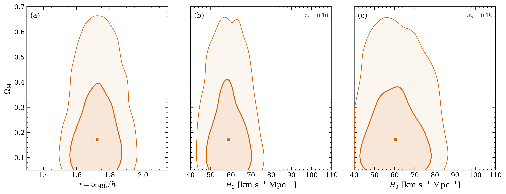
图注：Data-sample $1\sigma$ and $2\sigma$ contours. \(\textit{Left panel:}\) the direct $(r,\Omega_\mathrm{M})$ posterior. \(\textit{Middle and right panels:}\) conditional $(H_0,\Omega_\mathrm{M})$ posteriors obtained from the same direct posterior with $\sigma_\alpha=0.10$ and 0.18, respectively. Squares mark posterior medians.
对应解读：对应“建议重点查看的图表”第3项全局后验角图，以及关键图表逐图导读图3；也支撑模型拟合段落中关于 r、H0、\(Omega_M\) 与 EBL 尺度退化的讨论。
入选理由：这是实测数据的核心宇宙学后验图，直接给出 direct (r, Omega_M) 以及在不同 EBL 尺度先验下转换得到的 (H0, Omega_M) 置信区域。它最能展示本文主结论：伽马射线主要约束 \(r=alpha_EBL/h\)，而 \(Omega_M\) 约束较弱，且 H0 误差随 EBL 不确定性显著放大。
来源与置信度：\(arxiv_source\)；high；\(arxiv_source\) / main.tex:figure[5]
Fig06
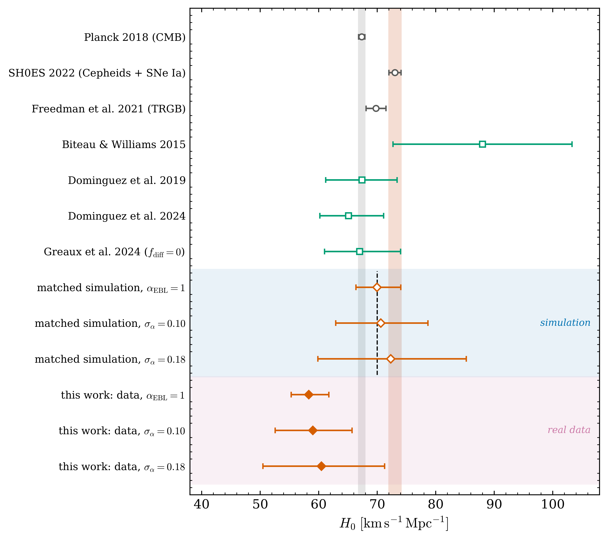
图注：Comparison of conditional $H_0$ results from the matched simulation and the data with representative early-Universe, late-Universe and previous $\gamma$-ray attenuation determinations~\(\cite{Planck:2018vyg,Riess:2021jrx,Freedman:2021ahq,Biteau:2015xpa,Dominguez:2019jqc,2024MNRAS.527.4632D,Greaux:2024coc}.\) The matched mock is injected with $(H_0,\Omega_\mathrm{M},\alpha_{\rm EBL})=(70\,\mathrm{km\,s^{-1}\,Mpc^{-1}},0.315,1)$. Open orange diamonds denote its three conditional recoveries ($\alpha_{\rm EBL}=1$, $\sigma_\alpha=0.10$, and $\sigma_\alpha=0.18$); the dashed vertical line spanning these points marks the injected $H_0$ value. Filled orange diamonds denote the $H_0$ determination from real data. Blue and purple shading distinguish the simulation and real-data results, respectively. Vertical bands show the Planck and SH0ES $1\sigma$ confidence bands.
对应解读：对应“建议重点查看的图表”第7项 H0 结果对河外背景光尺度先验的依赖图，并补充关键结果中固定 EBL 与允许不确定性时 H0 误差条变化的解读。
入选理由：该图把真实数据和 matched simulation 在 \(alpha_EBL=1\)、\(sigma_alpha=0.10\)、\(sigma_alpha=0.18\) 三种条件下的 H0 结果并列，并与 Planck、SH0ES 及既有伽马射线结果比较。它最直观展示 EBL 尺度先验如何主导 H0 误差预算，是理解文章结论边界的关键图。
来源与置信度：\(arxiv_source\)；high；\(arxiv_source\) / main.tex:figure[6]
Fig02
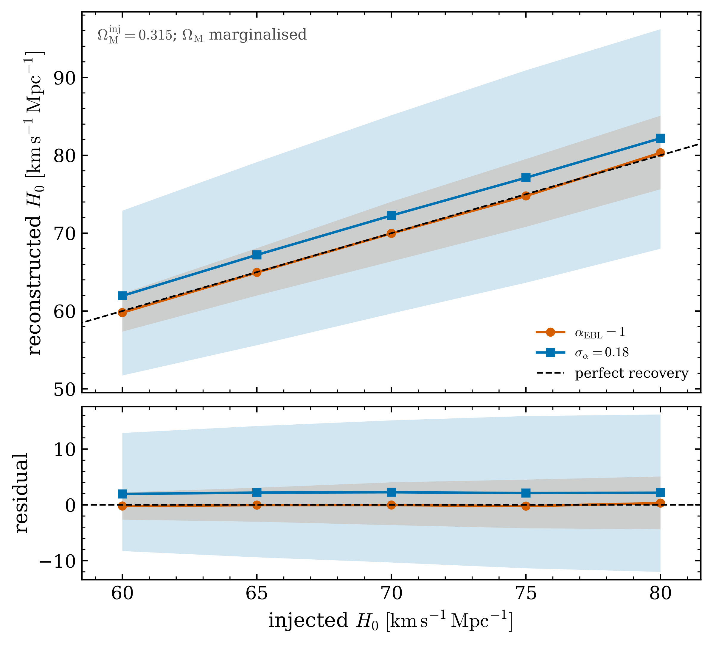
图注：Injection recovery for the noise-free Asimov sample of 241 datasets. The injected values are $H_0=60$, 65, 70, 75 and $80\,\mathrm{km\,s^{-1}\,Mpc^{-1}}$, with $\Omega_\mathrm{M}^{\rm inj}\equiv 0.315$ and $\alpha_{\rm EBL}^{\rm inj} \equiv 1$. In the recovery, $\Omega_\mathrm{M}$ is sampled over $0.05$--$0.70$ and marginalised. At each injected value, the points and bands show the median and central $1\sigma$ interval after transforming the corresponding direct $r$ posterior with $\alpha_{\rm EBL}=1$ (orange circles) or $\sigma_\alpha=0.18$ (blue squares). The dashed line denotes perfect recovery; the lower panel shows the residual.
对应解读：对应“建议重点查看的图表”第4项模拟注入恢复图，以及关键图表逐图导读图4中关于输入值是否落在恢复可信区间内的说明。
入选理由：该图使用 241 个数据集构造的 noise-free Asimov 样本，展示不同注入 H0 下的恢复中值、1sigma 区间、完美恢复虚线和残差下栏。它直接验证贝叶斯框架在 matched injection 条件下是否无偏，并同时显示固定 EBL 与 \(sigma_alpha=0.18\) 时恢复精度的差异。
来源与置信度：\(arxiv_source\)；high；\(arxiv_source\) / main.tex:figure[2]
Fig03
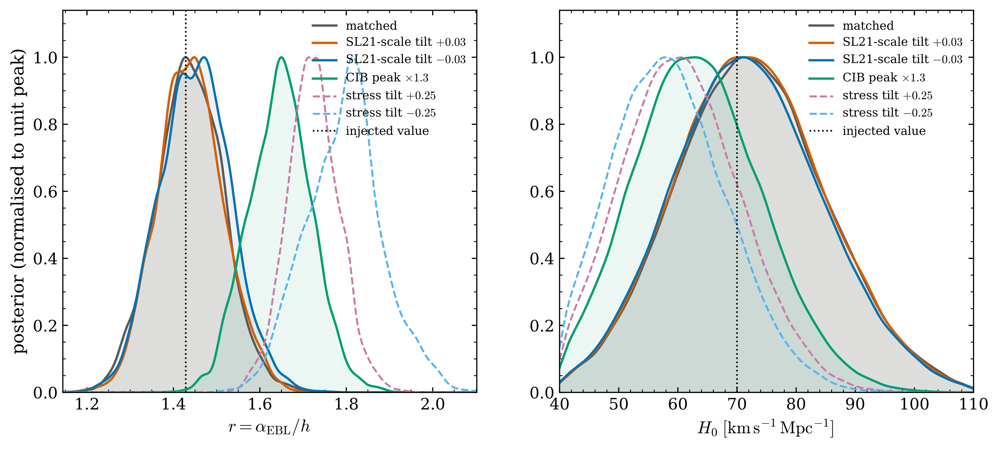
图注：EBL mismodelling recovery for the noise-free Asimov sample. All mocks have $(H_0,\Omega_\mathrm{M},\alpha_{\rm EBL})^{\rm inj}=(70\,\mathrm{km\,s^{-1}\,Mpc^{-1}},0.315,1)$; $\Omega_\mathrm{M}$ is sampled and marginalised in the recovery rather than fixed. \(\textit{Left panel:}\) direct posterior of $r=\alpha_{\rm EBL}/h$. \(\textit{Right panel:}\) conditional $H_0$ posterior for $\sigma_\alpha=0.18$. Grey denotes the matched control; solid curves show the SL21-scale tilts and the $1.3\times$ CIB peak, and dashed curves show the extreme $\kappa=\pm0.25$ stress tests. Dotted vertical lines mark the injected values.
对应解读：对应“建议重点查看的图表”第6项系统误差汇总或稳健性测试图，尤其是河外背景光谱形扰动和红外背景错配对 r、H0 的影响。
入选理由：该图专门检验 EBL mismodelling：左图给 r 后验，右图给 \(sigma_alpha=0.18\) 条件下的 H0 后验，并包含 matched control、SL21-scale tilts、1.3倍 CIB peak 和极端 kappa stress tests。它比一般比较图更能支撑日报中“较大的红外背景误建模会造成显著影响”的判断。
来源与置信度：\(arxiv_source\)；high；\(arxiv_source\) / main.tex:figure[3]
Fig04
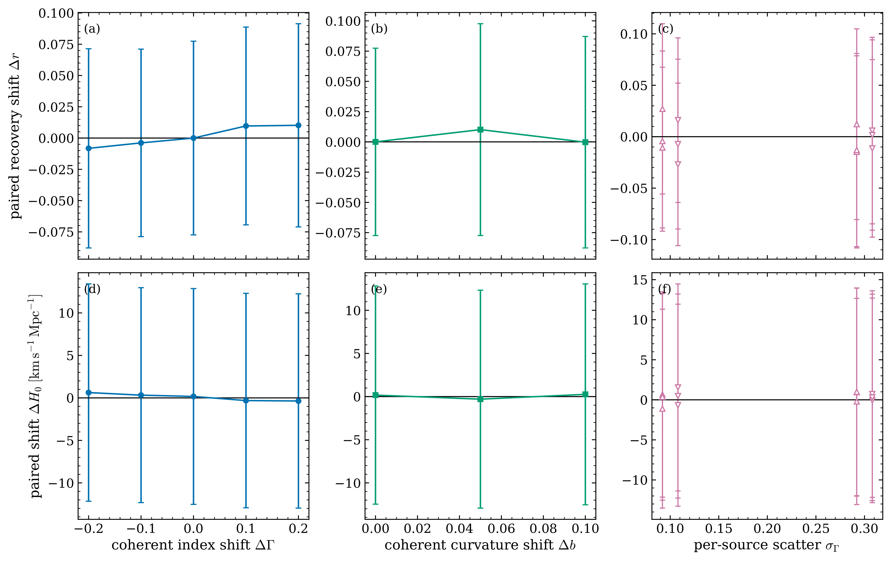
图注：Intrinsic-spectrum recovery power of the hierarchical model for the noise-free Asimov sample, injected with $(H_0,\Omega_\mathrm{M},\alpha_{\rm EBL})=(70\,\mathrm{km\,s^{-1}\,Mpc^{-1}},0.315,1)$. Recovery samples and marginalises $\Omega_\mathrm{M}$. The top row shows the shift of the posterior mean of the direct opacity ratio $r$ relative to the matched control; the bottom row translates the same runs into the conditional shift in $H_0$ for $\sigma_\alpha=0.18$. Columns show coherent index shifts (left), coherent curvature shifts (centre), and independent per-source index scatter (right). To give uniform sampling on the linear horizontal axes, the displayed coherent injections are $\Delta\Gamma=-0.20,-0.10,0,0.10,0.20$ and $\Delta b=0,0.05,0.10$; the denser completed scans are retained in the numerical analysis. Error bars give the posterior standard deviation in each mismodelled run; opposite triangles identify antithetic scatter realisations.
对应解读：对应“建议重点查看的图表”第6项系统误差汇总或稳健性测试图，以及模型拟合段落中关于内禀谱曲率、谱指数扰动与吸收曲率退化的讨论。
入选理由：该图系统展示内禀谱错配对 r 和条件 H0 的偏移，包括 coherent index shifts、coherent curvature shifts 和 per-source index scatter，并给出误差条。它能检验内禀谱假设是否会把源本身变软误解释为传播吸收，是评估方法稳健性的核心补充。
来源与置信度：\(arxiv_source\)；high；\(arxiv_source\) / main.tex:figure[4]
Fig01
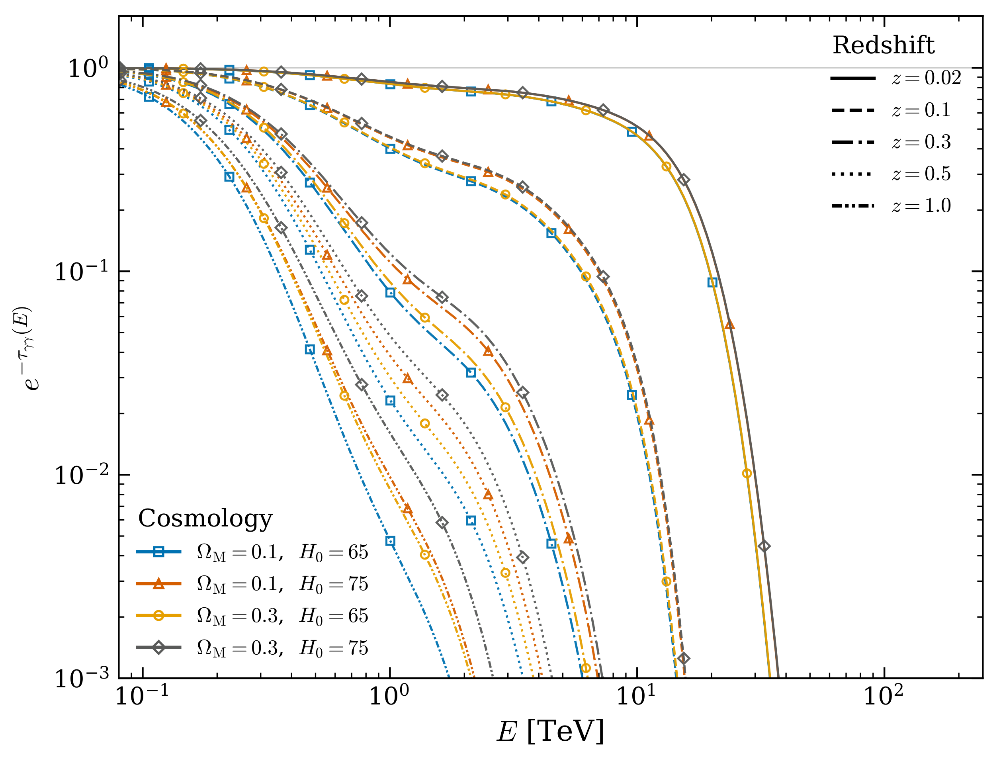
图注：Absorption coefficient $e^{-\tau(E)}$ as a function of energy $E$ for different sets of cosmological parameters using the redshift-dependent EBL model from Ref.~\(\cite{2021MNRAS.507.5144S}.\) The absorption coefficient is computed for the source redshifts $z$ of 0.02 (solid line), 0.1 (dashed line), 0.3 (dotted-dashed line), 0.5 (dotted line) and 1 (double-dotted-dashed line), respectively, indicated by line type, and four sets of cosmology $(\Omega_\mathrm{M}, H_0)$ of $(0.1, 65)$, $(0.1, 75)$, $(0.3, 65)$ and $(0.3, 75)$, indicated by a colour and a marker. $H_0$ values are expressed in $\mathrm{km\,s^{-1}\,Mpc^{-1}}$.
对应解读：对应“建议重点查看的图表”第2项光深曲线或河外背景光模型图，以及关键图表逐图导读图2中关于 \(e^{-tau(E)}\) 随能量、红移和宇宙学参数变化的解释。
入选理由：该图直接画出吸收系数 \(e^{-tau(E)}\) 随能量的变化，并区分多个红移 z 与不同 (\(Omega_M,\) H0) 组合。它为后续 Bayesian 拟合提供物理直觉：TeV 能段和较高红移处吸收迅速增强，且光深幅度依赖宇宙学参数与 EBL 模型。
来源与置信度：\(arxiv_source\)；high；\(arxiv_source\) / main.tex:figure[1]
强相关工作
这篇工作属于“用甚高能伽马射线吸收测量河外背景光和宇宙学”的同类研究。历史上，H.E.S.S.、MAGIC、VERITAS 和 Fermi-LAT 都曾利用耀变体或伽马射线源样本测量河外背景光吸收印记，通常目标是约束 \(n_{\mathrm{EBL}}(\epsilon,z)\) 或星系形成历史，而不是直接给 \(H_0\)。本文的相似工作检索关键词可用 “EBL imprint gamma-ray spectra HESS MAGIC VERITAS Fermi-LAT”, “gamma-ray attenuation Hubble constant”, “blazar spectra EBL Bayesian inference”。
与 \(H_0\) 张力文献相比，本文给出的 \(H_0\) 中心值偏低，但误差在允许河外背景光尺度不确定性后很大，不能简单作为对 SH0ES 或 Planck 的决定性支持或反驳。更准确的表述是：伽马射线吸收目前测得了一个较精确的光深组合量，但该组合量受河外背景光归一化限制。相反观点或潜在张力主要来自两类问题：一是河外背景光直接测量和星系计数给出的绝对背景光尺度是否一致；二是耀变体内禀谱复杂性是否会伪装成传播吸收。检索关键词可用 “direct EBL measurements galaxy counts tension”, “intrinsic curvature blazar EBL degeneracy”, “TeV blazar EBL systematics”。
同一事件 / 同类源线索：
相似工作：
基础理论 / 方法工作：
相反观点 / 张力线索：
2. R-process nucleosynthesis from magnetar giant flares in neutron star--white dwarf mergers: A unified picture for peculiar long gamma-ray bursts
- 来源：arXiv / astro-ph.HE
- 链接：https://arxiv.org/abs/2607.24531v1
- 作者：Shu-Qing Zhong, Long Li, Le Zou, Ji-Gui Cheng, Yan-Zhi Meng, Jia-Hong Gu
- 评分：novelty 8/10，importance 8/10，relevance 9/10，final 9.35/10
- 推荐理由：关于特殊长GRB、磁星巨耀发、千新星和r过程的统一模型，直接属于高能瞬变/GRB重点方向；理论假说较新且可解释多波段特征，值得阅读。
中文题目：中子星—白矮星并合中的磁星巨耀斑与 r 过程核合成：解释特殊长伽马暴的统一图像
做了什么：这篇文章提出一个用于解释特殊长伽马暴的新情景：某些看似“长暴”的事件，例如 GRB 211211A 和 GRB 230307A，可能不是大质量恒星塌缩，而是含有预并合磁星的中子星—白矮星并合。作者把白矮星潮汐瓦解形成的超吸积盘、磁星巨耀斑、磁推进阶段、X 射线平台和千新星放在同一个物理框架中，试图同时解释长时标多成分 prompt emission、主暴与延展辐射之间的低谷、余辉平台以及重元素抛射物。核心新意是：磁星巨耀斑的 \(e^{\pm}\)-\(\gamma\) 火球冲击中子星壳层，可喷出富中子或 \(\alpha\)-rich freeze-out 条件下的物质，从而弥补传统中子星—白矮星流体模拟中 r 过程产额不足的问题。
为什么重要：GRB 211211A 和 GRB 230307A 这类事件打破了“长暴等于塌缩星、短暴等于致密星并合”的简单分类：它们持续时间很长，却带有千新星信号。本文重要之处在于，它不是只解释其中一个观测特征，而是试图把 prompt emission 的多阶段结构、余辉平台、千新星和 r 过程核合成联系起来，给出一个可检验的中子星—白矮星并合版本。若这种图像成立，它会扩展致密星并合可产生的电磁暂现象种类，也会改变人们对 r 过程来源和特殊长暴母体的判断。
理论 / 观测 / 仪器方法价值：对理论来说，文章把磁星巨耀斑、超吸积、磁推进和壳层抛射组合成一个可计算的框架，提出了传统中子星—白矮星并合模拟缺少的重元素抛射通道。对观测来说，它给出一些判据：主暴应由多次初始尖峰组成，主暴—延展辐射之间应有自然低谷，千新星质量可低至 \(10^{-5}\)--\(10^{-3}\,M_{\odot}\) 但被磁星自转能增强，X 射线平台与同一中心引擎相关。对方法来说，它提示不能只用 \(T_{90}\) 或单一余辉行为分类 GRB，而应联合 prompt 时域结构、颜色演化、千新星光变和平台能量预算。
为什么应该关注：如果你关心 GRB 分类、千新星、r 过程元素来源或磁星中心引擎，这篇文章值得看，因为它针对的是当前最棘手的一类“混合型”爆发现象。它的模型相当大胆，很多关键环节仍需数值模拟和多波段数据检验，但它给出了清楚的可证伪方向：巨耀斑尖峰森林是否存在、抛射物质量和速度是否匹配千新星、磁星平台能量是否过量、以及中子星—白矮星并合率是否足够。
展开详细解读：文章讲解、背景、理论、重点章节、图表与相关工作
文章详细讲解
科学问题：GRB 211211A 和 GRB 230307A 等特殊长伽马暴同时呈现长持续 prompt emission、主暴后延展辐射、余辉中的 X 射线平台和千新星样光学/红外信号。传统经验分类中，长暴通常来自大质量恒星塌缩，短暴及其千新星通常来自中子星并合；这些事件却把两类特征混合在一起。本文要回答的是：有没有一种不依赖塌缩星的致密星并合通道，可以同时产生长时标伽马辐射、平台和足够的 r 过程抛射物？
作者怎么做：文章构建了一个中子星—白矮星并合模型，要求系统中存在预并合磁星和较大质量白矮星。白矮星被中子星潮汐瓦解后形成近似常熵吸积盘，早期超吸积把物质输送到中子星表面并放大环向磁场；当磁场达到磁星巨耀斑触发条件时，会发生多次巨耀斑。作者把这些巨耀斑初始尖峰的集合对应到 prompt emission 的主暴，把随后磁推进阶段产生的较长时标能量释放对应到延展辐射，并用推进阶段自然解释主暴和延展辐射之间的低谷。
关键结果：最有辨识度的结论是，巨耀斑的 \(e^{\pm}\)-\(\gamma\) 火球不仅能产生伽马尖峰，还会反向冲击中子星壳层并喷出少量物质。这些物质在高熵、快速膨胀和 \(\alpha\)-rich freeze-out 条件下可以合成 r 过程重元素。多个巨耀斑火球在主暴期间累积的抛射物质量可达到约 \(10^{-5}\)--\(10^{-3}\,M_{\odot}\)，在磁星自转能注入增强下足以产生观测到的千新星亮度。与此同时，残余磁星自转减速辐射为 X 射线平台提供能量。
局限和下一步：该图像的主要不确定性集中在几个耦合环节：白矮星瓦解盘是否能维持作者假设的熵和吸积率演化；超吸积是否能稳定地把环向磁场放大到巨耀斑所需强度；巨耀斑火球冲击壳层的抛射效率和电子丰度 \(Y_e\) 是否足以支持 robust r 过程；以及中子星—白矮星并合率是否能解释特殊长暴的出现率。下一步需要三维磁流体模拟、核反应网络后处理、以及对 GRB 211211A/230307A 类事件的统一多波段拟合来检验这些假设。
关键结果是怎么做出来的
本文的证据链不是来自新观测样本，而是来自对一类已知特殊长暴的理论统一解释。作者选择的代表对象是 GRB 211211A 和 GRB 230307A：二者都有长时标 prompt emission、多成分时间结构、疑似或明确的千新星信号，并且传统塌缩星解释与致密星并合解释都面临困难。样本量很小，但它们是该类问题的标志性事件，因此文章的重点在于能量、时标和物质产额是否能同时闭合。
主结果的第一层是 prompt emission 的分解。作者把主暴解释为多次磁星巨耀斑初始尖峰的“森林”，而不是单个喷流内部冲击或磁重联事件。早期超吸积负责增强磁场并触发重复巨耀斑；当系统进入磁推进阶段，吸积物被磁层阻挡或甩出，prompt emission 由尖峰主暴过渡到延展辐射。主暴—延展辐射之间的低谷在这个模型中不是偶然的观测间歇，而是吸积流与磁层相互作用状态切换的结果。
第二层是千新星和 r 过程产额。传统中子星—白矮星并合的纯流体计算通常不容易产生足够富中子、足够高速的抛射物来解释明显千新星。本文引入巨耀斑火球冲击中子星壳层这一额外通道，估计单次或多次火球可累积喷出约 \(10^{-5}\)--\(10^{-3}\,M_{\odot}\) 的物质。这个范围与 GRB 211211A/230307A 类事件所需的低质量千新星抛射物大致相符，尤其当后期还有磁星自转能注入时，所需放射性质量可以下降。
第三层是平台能量预算。X 射线平台由并合后磁星的自转减速辐射供能，平台时标和光度由初始自转周期、偶极磁场和辐射效率控制。作者的模型要求 prompt 巨耀斑磁场、磁推进时标和平台磁偶极损失在同一个参数区域内相互兼容，这使模型比单独拟合平台更受约束。
统计意义方面，本文更像理论可行性研究，而不是基于似然比给出 \(n\sigma\) 检测的观测论文。读者应关注的是参数空间是否过窄、是否需要极端磁场或极端白矮星质量、以及每个环节的能量守恒是否自洽。关键图表应支撑吸积率随时间演化、磁层半径与共转半径交叉、巨耀斑能量与抛射质量关系、以及千新星/平台光变拟合；稳健性检验应包括改变吸积盘熵、磁场放大效率、火球—壳层耦合效率和不透明度后的结果变化。
展开背景、理论、公式、模型、章节和图表导读
背景知识
研究对象是“特殊长伽马暴”：持续时间可达几十到上百秒，按 \(T_{90}\) 会被归入长暴，但宿主环境、伴随千新星或缺少明亮超新星等特征又更接近致密星并合。GRB 211211A 和 GRB 230307A 是这一类讨论的核心案例，它们迫使研究者重新审视 GRB 的物理分类，而不是仅依赖持续时间。
历史上，长 GRB 与 Ic 型超新星的联系建立了塌缩星模型，短 GRB 与 GW170817/AT2017gfo 的联系建立了双中子星并合—千新星图像。但宇宙中的暂现源并不总是落入二分法：致密星并合可以产生较长中心引擎活动，塌缩星也可能缺少普通超新星信号，白矮星参与的并合还可能带来更复杂的吸积时标和物质组成。
中子星—白矮星并合过去常被认为不适合产生典型强 r 过程信号，因为白矮星物质本身电子丰度较高，且流体抛射物不一定足够富中子。相比双中子星并合中潮汐尾和盘风天然提供中子丰富物质，中子星—白矮星系统需要额外机制把中子星壳层或更中子丰富的物质带出来。本文的巨耀斑火球冲击壳层机制正是针对这个缺口。
为什么现在值得重新看？一方面，高能卫星和快速光学/红外跟进已经能捕捉 prompt emission 的细结构、余辉平台和千新星颜色演化；另一方面，GRB 211211A 和 GRB 230307A 的观测组合让单一塌缩星或标准双中子星模型都显得紧张。理论上，磁星活动、长寿命中心引擎和磁推进吸积的研究也提供了可用于连接不同阶段辐射的工具。
常见误区有三个。第一，把 \(T_{90}\) 当成物理分类本身；实际上 \(T_{90}\) 受探测器能段、灵敏度和背景影响。第二，认为有千新星就一定是双中子星并合；中子星—黑洞或含白矮星系统在特定条件下也可能有富重元素抛射。第三，把 X 射线平台简单等同于磁星证据；平台可以由能量注入、结构化喷流、观测角效应或中心引擎持续活动产生，需要与 prompt 和千新星联合约束。
基础理论 / 方法脉络
基本物理图像从潮汐瓦解开始。当白矮星靠近中子星时，如果潮汐半径大于中子星半径并接近并合轨道尺度，白矮星会被拉碎并形成盘状或流状物质。白矮星半径远大于中子星半径，因此中子星—白矮星并合的物质供应时标可以比双中子星并合更长，这为长时标 prompt emission 和延展辐射提供了自然时间尺度。
吸积盘把引力能转化为热能、磁能和外流动能。若中心天体是强磁场中子星，吸积流内的差分旋转、剪切和磁流体不稳定性可放大环向磁场。磁场足够强时，磁层活动可能以类似磁星巨耀斑的方式释放能量，产生高温 \(e^{\pm}\)-\(\gamma\) 火球。本文假设 prompt 主暴不是普通塌缩星喷流穿出包层，而是多次巨耀斑初始尖峰叠加的结果。
磁推进阶段是连接主暴和延展辐射的关键。当磁层半径超过共转半径时，磁场线随中子星旋转把部分吸积物甩出，吸积到表面的效率下降，辐射状态发生改变。这个状态切换可以产生主暴和延展辐射之间的低谷，并把后续能量释放拉长。这里的关键量包括磁层半径、共转半径、吸积率、磁偶极矩和自转角速度。
千新星部分依赖两类能量源：r 过程放射性衰变和中心磁星自转能注入。常规千新星亮度由抛射物质量、速度和不透明度决定；若磁星继续注入能量，光变可更亮、更蓝或持续更久。因此同一观测光变可能存在退化：较大的 \(M_{\rm ej}\) 与较小的中心引擎注入、较低不透明度与较高速度、以及不同 \(Y_e\) 分布都可能给出相似颜色和峰值时间。
该模型的系统误差主要来自火球—壳层耦合效率、抛射物成分、核加热率和辐射转移近似。若火球能量大多逃逸为伽马光子而非推动壳层，r 过程产额会下降；若喷出物 \(Y_e\) 太高，则只能产生较轻元素或铁峰附近产物；若磁星注入过强，则可能把千新星光变推得过亮或把抛射物电离到改变不透明度。
公式与推导
第一步看白矮星是否会被潮汐瓦解。近似潮汐半径为
其中 \(R_{\rm WD}\) 和 \(M_{\rm WD}\) 是白矮星半径和质量，\(M_{\rm NS}\) 是中子星质量。若 \(R_{\rm t}\) 位于中子星外部且物质能形成盘，系统就可能进入本文讨论的长时标吸积阶段。
吸积释放的功率可估为
其中 \(\dot{M}\) 是吸积率，\(R_{\rm NS}\) 是中子星半径，\(\eta_{\rm acc}\) 是转化为辐射、磁能或外流的效率。这个式子给出 prompt 主暴和早期磁场放大的能量上限。
强磁场中子星的磁层半径常写为
其中 \(\mu=B_{\rm p}R_{\rm NS}^3\) 是磁偶极矩，\(B_{\rm p}\) 是极向表面磁场，\(\xi\) 是几何因子。它决定吸积流能否抵达中子星表面。
共转半径为
其中 \(\Omega=2\pi/P\) 是中子星角速度，\(P\) 是自转周期。当 \(R_{\rm m}\gtrsim R_{\rm co}\) 时进入磁推进条件，吸积物倾向于被甩出，这可解释主暴和延展辐射之间的状态切换。
单次磁星巨耀斑可用磁能释放估算：
其中 \(B_{\rm tor}\) 是被放大的环向磁场，\(V_{\rm act}\) 是参与重联或断裂的活动体积，\(\epsilon_B\) 是释放效率。多个 \(E_{\rm GF}\) 叠加形成主暴尖峰森林。
火球冲击壳层后，若一部分能量转化为抛射物动能，则
其中 \(M_{\rm ej}\) 和 \(v_{\rm ej}\) 是抛射物质量和速度，\(\epsilon_{\rm sh}\) 是火球到壳层动能的耦合效率。这个关系直接连接 prompt 尖峰能量与千新星物质预算。
r 过程能否有效进行取决于中子丰度、熵和膨胀时标，常用电子丰度表示为
其中 \(n_p\) 和 \(n_n\) 分别为质子和中子数密度。较低的 \(Y_e\) 有利于重 r 过程，\(\alpha\)-rich freeze-out 则强调高熵快速冷却条件下 \(\alpha\) 粒子和种子核的竞争。
千新星峰值时标可由扩散时标估计：
其中 \(\kappa\) 是有效不透明度，\(c\) 是光速。它说明同样的峰值时间可以由较大 \(M_{\rm ej}\)、较高 \(v_{\rm ej}\) 或较低 \(\kappa\) 的不同组合产生。
放射性加热近似为
其中 \(f_{\rm th}\) 是热化效率，\(\dot{q}_0\) 是单位质量加热率归一化，\(\alpha_q\) 通常接近 \(1\)--\(1.4\)。本文还需要加入磁星额外注入。
磁偶极自转减速光度可写为
其中 \(\Omega_0\) 是初始角速度，\(t_{\rm sd}\) 是自转减速时标。这个公式同时服务于 X 射线平台和磁星增强千新星的能量预算。
模型拟合 / 应用方法
这类模型的拟合应分成 prompt、余辉平台和千新星三个层级。prompt 部分需要拟合每个尖峰的持续时间、能量、谱峰和间隔分布，并检验它们是否更像重复巨耀斑而不是普通内部冲击脉冲。关键参数包括单次巨耀斑能量 \(E_{\rm GF}\)、尖峰数目、吸积率演化 \(\dot{M}(t)\)、磁场放大效率和进入磁推进的时间。
余辉平台拟合通常使用磁星自转减速模型，拟合量包括平台光度、平台结束时间和衰减斜率。自由参数可写成初始自转周期 \(P_0\)、偶极磁场 \(B_{\rm p}\)、辐射效率和喷流校正因子。这里存在明显退化：较快自转与较低效率、较强磁场与较短平台时标、以及观测角效应都可能给出相近 X 射线光变。
千新星拟合则围绕 \(M_{\rm ej}\)、\(v_{\rm ej}\)、\(\kappa\)、成分分布和磁星加热效率展开。若只拟合单波段光变，\(M_{\rm ej}\) 与 \(\kappa\) 的退化很强；加入颜色、谱能量分布和红外数据才能约束镧系元素含量。本文声称的 \(10^{-5}\)--\(10^{-3}\,M_{\odot}\) 抛射物是否足够，取决于是否允许磁星注入显著提升光度。
似然函数可采用多数据集联合形式：prompt 光变计数用泊松似然，余辉和千新星通量点用高斯或学生 \(t\) 分布似然，并引入交叉校准误差、宿主消光、距离不确定性和模型系统误差。模型比较应至少与塌缩星、双中子星并合、长寿命磁星驱动短暴延展辐射等替代模型比较，而不只是展示一组可行参数。
模型可能失败的地方也很明确。若所需 \(B_{\rm tor}\) 或 \(E_{\rm GF}\) 远超已知磁星巨耀斑尺度，或者火球耦合效率必须接近 \(1\)，模型就变得不自然。若千新星要求的抛射物质量高于火球冲击可稳定提供的上限，或者观测到强超新星特征，则中子星—白矮星情景会受压。实际应用中，最有价值的是把该模型作为多信使和多波段分类器中的一个物理假设，而非只凭单个光变拟合做结论。
重点章节 / 结果段落怎么读
数据/现象动机部分应先看作者如何定义“peculiar long GRB”。重点不是 \(T_{90}\) 本身，而是 GRB 211211A 和 GRB 230307A 的共同特征：长时标多成分 prompt emission、主暴与延展辐射、X 射线平台、千新星信号以及与普通塌缩星长暴的差异。
中子星—白矮星并合框架部分是论文核心。读者应检查作者对预并合磁星、白矮星质量、潮汐瓦解盘和常熵吸积盘的假设是否合理，尤其是吸积率时间演化是否能覆盖观测持续时间。
磁星巨耀斑与 prompt emission 部分需要细读。这里作者把主暴解释为多个巨耀斑初始尖峰，并把磁推进阶段解释为延展辐射。应关注巨耀斑能量、重复次数、触发条件和主暴—延展辐射低谷的物理对应关系。
r 过程和千新星部分决定文章新意是否成立。读者应看火球冲击中子星壳层的抛射质量估计、\(\alpha\)-rich freeze-out 条件、核合成路径和千新星光变能否与观测同时匹配。
讨论和稳健性部分应关注替代解释、事件率、参数自然性和未来检验。尤其要看作者是否讨论了双中子星并合、塌缩星、以及普通磁星平台模型的竞争解释。
建议重点查看的图表
-
系统演化示意图：应检查是否清楚展示白矮星潮汐瓦解、吸积盘形成、磁场放大、巨耀斑、磁推进、抛射物和磁星平台之间的时间顺序。
-
吸积率和关键半径随时间变化图：重点看 \(R_{\rm m}\) 与 \(R_{\rm co}\) 的交叉时刻是否对应主暴—延展辐射低谷，\(\dot{M}(t)\) 是否能支撑观测持续时间。
-
prompt 光变类比图：看主暴尖峰森林、延展辐射和低谷是否与 GRB 211211A/230307A 的时间结构定性或定量一致。
-
巨耀斑能量与壳层抛射质量关系图：重点看达到 \(10^{-5}\)--\(10^{-3}\,M_{\odot}\) 是否需要极端效率，误差带是否覆盖合理磁场范围。
-
千新星光变或参数空间图：看不同 \(M_{\rm ej}\)、\(v_{\rm ej}\)、\(\kappa\) 和磁星注入下的光变是否能同时匹配早期蓝光和后期红外。
-
X 射线平台拟合图：看平台结束时间、衰减斜率和归一化是否由同一组 \(B_{\rm p}\) 与 \(P_0\) 解释，而不是与 prompt 所需参数互相矛盾。
-
核合成产额图或 \(Y_e\) 分布图：若有，应检查是否真正产生重 r 过程峰，而不仅是少量轻 r 过程或中等质量元素。
关键图表逐图导读
图 1：若论文给出演化示意图，横向通常表示时间顺序，纵向或不同区域表示中心引擎、吸积盘、火球和抛射物。读图时不要只看卡通箭头，应确认每个阶段是否有对应的观测量：主暴尖峰、延展辐射、千新星和 X 射线平台。
图 2：吸积率与半径演化图通常以时间为横轴，纵轴可能是 \(\dot{M}\)、\(R_{\rm m}\)、\(R_{\rm co}\) 或光度。模型线的关键不是平滑程度，而是 \(R_{\rm m}\gtrsim R_{\rm co}\) 的时刻是否自然落在主暴之后、延展辐射之前。陷阱是参数调节可能让任何交叉时间看似可行，因此应看参数是否物理合理。
图 3：prompt emission 对比图可能展示观测光变与模型阶段划分。横轴为触发后时间，纵轴为计数率或能流。应检查尖峰数量、间隔、能量包络和低谷深度，而不是只看持续时间。若模型没有拟合谱演化，不能把时间结构吻合过度解读为唯一证据。
图 4：抛射物质量或动能估计图通常会把 \(E_{\rm GF}\)、\(\epsilon_{\rm sh}\)、\(M_{\rm ej}\) 和 \(v_{\rm ej}\) 联系起来。读者应看置信区间或允许带是否覆盖观测千新星所需范围；若只有单条理论曲线，要特别注意耦合效率是否被固定得过于乐观。
图 5：千新星光变图的横轴通常是爆发后时间，纵轴为绝对星等、通量或光度，不同颜色表示不同波段。模型线若加入磁星注入，会比纯 r 过程模型更亮。读图陷阱是宿主消光、距离模数和余辉扣除会显著影响千新星残差。
图 6：X 射线平台图通常用对数时间和对数通量展示。应看平台后衰减是否接近磁偶极预期、是否存在喷流破裂或余辉外激波贡献。若平台拟合只给出 \(B_{\rm p}\) 和 \(P_0\) 而没有与 prompt 巨耀斑能量闭合，说明统一模型的检验还不完整。
论文原图 / 可嵌入图片
Fig01

图注：The unified picture for peculiar long gamma-ray bursts (LGRBs) such as GRBs~211211A and ~230307A from neutron star--white dwarf (NS--WD) mergers (see also Section \ref{sec:picture}). Panel (a): A massive WD ($M_{\rm WD} \gtrsim 1\,M_\odot$) is tidally disrupted by a magnetar ($B_{\rm s} \gtrsim 10^{14}\,\mathrm{G}$), forming an accretion disk that feeds the NS at a rate $\gtrsim10^{-4}M_{\odot}~{\rm s}^{-1}$ lasting tens of seconds ($\gtrsim10^{-2}M_{\odot}~{\rm s}^{-1}$ lasting $\sim10$ s) described by hydrodynamic simulations in \(\cite{kal23}.\) Panel (b): At an early stage, the NS is in the accretion phase ($r_{\rm m} \lesssim r_{\rm c}$), spinning up and amplifying its toroidal field from differential rotation via a dynamo mechanism \(\citep{zhong23}.\) This phase would give rise to the main burst (MB) of GRB prompt emission. At a late stage, the NS enters the propeller phase ($r_{\rm m} > r_{\rm c}$), expelling material to power the extended emission (EE) of prompt emission. Panel (c): During the accretion phase, sustained mass inflow drives continuous amplification of the toroidal field, then the continuous rapid buildup of magnetic stresses in the NS crust triggers repeated starquakes, producing magnetar giant flares (GFs) preferentially in the closed-field-line region. Each initial spike in a GF corresponds to a high-pressure expanding electron/positron pair-photon ($e^\pm$-$\gamma$) fireball; this fireball drives a shock wave into the NS crust, leading to crustal ejection capable of \(\textit{r}-process\) nucleosynthesis via the $\alpha$-rich freeze-out mechanism \(\citep{cehula24}.\) Thousands of such events over $\sim 10-20$ s produce a forest of GF initial spikes that collectively form the MB, and yield $M_{\rm ej}\sim10^{-5}-10^{-3}\,M_\odot$ of ejecta that is sufficient to power the observed kilonova signature when further boosted by the spin-down of the post-merger magnetar. The ejecta mass can be significantly larger when accounting for the jet beaming effect. Meanwhile, the spin-down radiation also powers the X-ray plateau in GRB afterglow.
对应解读：对应“建议重点查看的图表”中的系统演化示意图，以及“关键图表逐图导读”的图1；也直接支撑详细解读中关于白矮星潮汐瓦解、吸积盘、磁场放大、巨耀斑、磁推进、r过程抛射物和X射线平台的统一时间序列。
入选理由：这是本文统一物理图像的核心图，明确标出NS--WD并合、早期吸积相、晚期磁推进相、重复磁星巨耀斑、主暴尖峰森林、延展辐射、壳层抛射、r过程核合成、千新星和X射线平台之间的因果链。相比其他候选图，它最完整地对应日报对模型机制和时间顺序的解读。
来源与置信度：\(arxiv_source\)；high；\(arxiv_source\) / aa60826-26.tex:figure[1]
Fig02
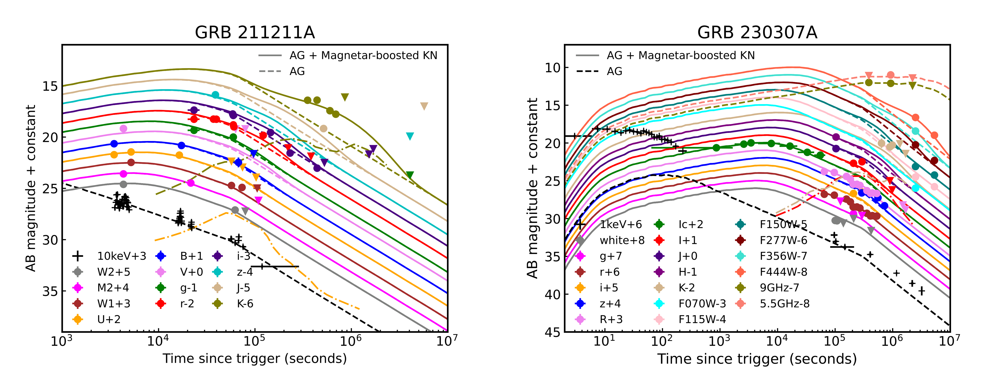
图注：Joint modeling of the multi-wavelength light curves of the GRB afterglow and kilonova signature for GRB 211211A (left panel) and GRB 230307A (right panel), combining the standard afterglow (AG) model with the magnetar-boosted kilonova (KN) model. Dashed fitting lines show the contribution from the standard afterglow model alone, while solid lines represent the full model that includes both the afterglow and the magnetar-boosted kilonova components. Inverted triangles denote upper limits. The dashed-dotted lines (left panel: orange for U band, olive for K band; right panel: red for I band, tan for K band) represent the subluminous optical transient from $^{56}{\rm Ni}$ decay in the disk wind for the CEEW scenario , adapted from the third panel of Figure 12 in \(\cite{kal23}\) for $M_{\rm NS}:M_{\rm WD}=1.10M_{\odot}:1.25M_{\odot}$ binary.
对应解读：对应“建议重点查看的图表”中的千新星光变或参数空间图、X射线平台/余辉拟合相关内容，以及“模型拟合”段落中对GRB 211211A和GRB 230307A多波段余辉+磁星增强千新星联合拟合的讨论。
入选理由：该图展示GRB 211211A与GRB 230307A的多波段光变联合建模，区分标准余辉虚线与加入磁星增强千新星后的总模型实线，并包含上限与不同波段数据，是检验本文能否同时解释余辉和千新星信号的最重要定量图。它比单纯示意图更能支撑对观测拟合、磁星注入和千新星亮度是否足够的判断。
来源与置信度：\(arxiv_source\)；high；\(arxiv_source\) / aa60826-26.tex:figure[2]
强相关工作
这篇文章与 GRB 211211A 和 GRB 230307A 的多波段观测研究直接相关；这些事件通常被讨论为“长持续时间但伴随千新星”的 GRB。应检索关键词包括 “GRB 211211A kilonova long gamma-ray burst”, “GRB 230307A kilonova JWST”, “peculiar long GRB compact merger”, “extended emission magnetar central engine”。同源/同事件论文主要提供观测约束：prompt 时域结构、宿主星系环境、光学红外过量、谱能量分布和千新星模型。
在理论上，本文与双中子星并合千新星模型、磁星驱动短暴延展辐射模型、中子星—白矮星并合暂现源模型以及磁星巨耀斑火球理论相连。相反或竞争观点包括塌缩星长暴但超新星极暗、双中子星并合产生长寿命磁星、以及中子星—黑洞并合带来的长时标中心引擎。建议检索 “NS WD merger r-process”, “magnetar giant flare gamma-ray burst”, “magnetic propeller extended emission”, “magnetar-powered kilonova”。
同一事件 / 同类源线索：
相似工作：
基础理论 / 方法工作：
相反观点 / 张力线索：
（未提供）
3. Diverse Morphologies of GRB X-Ray Plateaus within a Common Magnetar Framework
- 来源：arXiv / astro-ph.HE
- 链接：https://arxiv.org/abs/2607.23114v1
- 作者：Xiao-Fei Dong, Yong-Feng Huang, Nurimangul Nurmamat, Chen Deng, Ze-Cheng Zou, Fan Xu, Abdusattar Kurban, Chen Du
- 评分：novelty 8/10，importance 8/10，relevance 9/10，final 9.35/10
- 推荐理由：185个长GRB X射线平台的层级种群推断，检验磁星注入模型能否统一不同平台形态；GRB重点方向且样本和统计框架较有价值。
中文题目：同一磁星框架下的多样化伽马暴 X 射线平台形态
做了什么：这篇论文研究长伽马暴余辉中 X 射线平台的形态差异：有的平台在平台段仍缓慢上升，有的近似平坦，有的已经缓慢衰减。作者选取 185 个具有 X 射线平台的长伽马暴，用条件泊松点过程和分层贝叶斯人口推断，把单个暴的光变曲线拟合与整体磁星参数分布联系起来。主要结论是：这些不同平台形态可以由物理上合理的磁星族群共同解释，不需要为上升、平坦、下降平台分别引入统计上显著不同的磁星种群；各子类在平台光度上存在较大的本征散布，约为 \(\sigma_{L,{\rm int}}\sim0.5\)--\(1.0\,{\rm dex}\)，而平台持续时间的本征散布相对较小。
为什么重要：X 射线平台是 Swift 时代伽马暴余辉中最常见、也最难统一解释的现象之一。过去很多工作逐个暴反推磁星初始自转周期、磁场和辐射效率，但这种做法容易把观测选择效应、红移缺失、光变拟合误差和真实物理差异混在一起。本文的重要性在于把问题提升到人口层面：如果一个共同的磁星分布就能重现多种平台形态，那么平台形态本身未必是不同中心引擎类别的直接证据。
理论 / 观测 / 仪器方法价值：对理论而言，本文给磁星能量注入模型提供了人口统计检验，而不只是单个案例的可行性展示。对观测而言，它强调平台光度散布和持续时间散布承载不同信息，提示未来样本应同时控制探测阈值、红移和光变形态分类。对方法而言，条件泊松点过程适合处理截断样本和选择函数，可作为研究伽马暴、潮汐瓦解事件、快速蓝光暂现源等瞬变族群的通用框架。
为什么应该关注：如果你关心伽马暴中心引擎、磁星形成率、余辉能量注入或瞬变人口统计，这篇文章值得看。它的核心信息不是“磁星模型又能拟合一些平台”，而是“在考虑样本层级和选择效应后，形态多样性是否真的要求不同物理族群”。这一点直接影响我们如何把 Swift/XRT 光变曲线转化为关于新生致密星、喷流效率和坍缩星遗迹的结论。
展开详细解读：文章讲解、背景、理论、重点章节、图表与相关工作
文章详细讲解
科学问题：长伽马暴 X 射线余辉中常见所谓平台段，即在早期陡衰减之后、正常幂律衰减之前出现一段较浅的演化。传统磁星解释认为，新生快速旋转、高磁场中子星通过偶极辐射或相关能量释放持续向外激波注入能量，从而减缓余辉衰减。不过观测上平台形态并不单一：有些在观测时间内仍上升，有些近似平坦，有些则缓慢下降。问题是，这些形态差异是否意味着中心引擎有不同物理来源，例如不同磁星磁场、自转周期、喷流耦合效率，甚至有些不是磁星而是黑洞吸积。
作者怎么做：论文构建了一个包含 185 个长伽马暴 X 射线平台的统一样本，并按平台形态分为上升、平坦和下降等子类。与逐个事件拟合不同，作者采用分层人口推断：单个伽马暴的观测平台光度和持续时间被视为由潜在磁星参数分布生成，同时观测样本还受到探测阈值、可测红移、平台可识别性等选择效应影响。为此他们使用条件泊松点过程框架，把“宇宙中真实发生的事件分布”和“被样本选中的事件分布”显式区分开来。
关键结果：在这个框架下，物理上可接受的磁星参数族群能够重现观测到的平台光度、平台时标以及三种平台形态的总体分布。不同形态子类之间没有强统计证据表明需要相互分离的磁星参数分布。也就是说，平台上升、平坦或下降并不必然对应三类不同中心引擎。一个重要细节是，各类平台在光度方向都有显著本征散布，\(\sigma_{L,{\rm int}}\sim0.5\)--\(1.0\,{\rm dex}\)，说明除磁星自转能和偶极耗能时标外，辐射效率、喷流准直、环境密度、能量耦合过程等仍会造成很大事件间差异。相比之下，平台持续时间的本征散布更小，暗示时标可能更直接地追踪中心引擎自旋下降或观测窗口中的特征时间。
局限和下一步：本文的结论依赖平台识别、形态分类、红移样本完整性和选择函数建模。X 射线平台的光变并非纯中心引擎诊断量，外激波动力学、观测能段的谱段位置、早期高纬辐射尾迹、喷流结构和能量注入耦合效率都可能影响形态。下一步需要把 X 射线与光学、射电、多波段谱演化联合起来，并把喷流开角、环境密度、辐射效率和磁星稳定性纳入层级模型。若未来 THESEUS、Einstein Probe、SVOM 或更完整的 Swift 后续样本显著扩大带红移平台样本，这种人口推断将能更严格地区分“共同磁星族群加观测/辐射散布”和“真实多中心引擎族群”。
关键结果是怎么做出来的
本文最关键的证据链从样本定义开始。作者没有挑选少数典型平台，而是使用 185 个具有 X 射线平台的长伽马暴，目标是构建一个足够统一的人口样本。样本中的每个事件需要有可用于确定平台光度与时间尺度的 X 射线光变信息；若涉及源静止系量，还需要红移或红移相关处理。平台形态被分成上升、平坦和下降等子类，分类依据是平台段的时间斜率，而不是事后按磁星参数硬切分。
统计方法的核心是条件泊松点过程。直观地说，真实宇宙中的伽马暴平台在观测量空间中服从某个强度函数，而望远镜和样本筛选只让其中一部分进入目录。似然不只评估“已观测事件落在模型预测高密度区域”的程度，还要用归一化项惩罚那些会预测过多本应被探测却没有出现事件的模型。这个归一化项是人口推断与普通逐个拟合的重要区别，也是处理截断与选择偏差的关键。
模型比较关注不同形态子类是否需要不同磁星人口。作者让磁星参数分布生成平台可观测量，再检验上升、平坦、下降平台的观测分布是否能被同一个或统计上相近的母分布解释。结果显示，各子类的后验分布有明显重叠，没有强证据支持三种形态必须来自彼此分离的磁星参数族群。这一结论应从参数后验重叠、预测分布覆盖观测点、以及形态子类之间的模型比较指标共同阅读，而不是只看单个最佳拟合值。
论文报告的一个定量焦点是光度和持续时间的本征散布。平台光度方向需要 \(\sigma_{L,{\rm int}}\sim0.5\)--\(1.0\,{\rm dex}\) 的散布才能覆盖观测样本，这意味着即便中心引擎参数相近，观测到的 X 射线平台亮度也可能因辐射效率、准直因子、能量注入耦合和环境因素变化一个数量级左右。相比之下，持续时间散布较小，说明平台结束时间或特征时标可能更接近中心引擎自旋下降时标，尽管仍会受到红移修正和光变分段选择的影响。
稳健性方面，读者应重点检查作者如何处理选择函数和分类误差。若平台识别偏向亮而长的平台，或者上升平台更容易在某些观测窗口中被遗漏，那么不同形态之间的相似性可能部分来自选择效应。本文的价值在于把这些效应放进人口似然中，而不是完全忽略；但最终结论仍取决于选择函数是否足够接近真实 Swift/XRT 观测和后续分析流程。最能支撑结论的图表通常应包括观测量分布与后验预测分布对比、各形态子类的磁星参数后验、光度与时标本征散布的置信区间，以及不同模型设定下的稳健性检验。
展开背景、理论、公式、模型、章节和图表导读
背景知识
伽马暴余辉最初的标准图像是相对论喷流与外部介质相互作用形成外激波，随后同步辐射按幂律衰减。Swift 卫星发射后，XRT 揭示了早期 X 射线余辉的复杂性：陡衰减、平台、耀发、正常衰减和晚期喷流折断等阶段经常交织在一起。平台段尤其重要，因为它看起来要求在 prompt emission 之后仍有能量持续注入，或者要求观测几何、谱段演化、微物理参数演化等机制改写简单外激波预言。
磁星模型是解释平台最常用的中心引擎方案之一。若长伽马暴来自大质量恒星坍缩，核心遗迹可能是黑洞，也可能是短暂或长期稳定的毫秒磁星。毫秒磁星拥有巨大的转动能库，若表面偶极磁场很强，就会在几百秒到上万秒尺度内释放能量。这个时标与许多 X 射线平台持续时间相近，因此磁星自然成为平台解释的候选机制。
历史上，平台研究常有两种路线。一种是对单个伽马暴拟合磁星自旋下降公式，得到初始周期、磁场和辐射效率，并检查是否违反最大转动能或破裂周期约束。另一种是经验上研究平台光度与结束时间的相关性，例如所谓 Dainotti 关系。前者物理直观但容易受单暴数据质量影响，后者样本统计性强但物理解释不唯一。本文属于把两者连接起来的尝试：用磁星物理生成观测量，再在人口层面比较形态子类。
现在重新看这个问题有两个原因。第一，Swift 积累的长时间 X 射线光变样本已经足够大，可以不只讨论个例。第二，瞬变天文学越来越重视选择函数和人口推断：单个事件能被模型拟合并不代表模型解释了总体样本。尤其对伽马暴，触发阈值、后随观测 cadence、红移测量成功率、平台识别标准都会强烈改变观测分布。
该领域常见误区包括：把平台斜率直接等同于中心引擎能量注入指数；把 X 射线平台光度直接当作磁星偶极辐射光度而忽略效率和准直；把不同形态的光变曲线自动解释为不同物理机制；以及只用最佳拟合磁场和周期判断模型成功，而不检查人口分布、选择效应和不可观测参数退化。本文的主要贡献正是针对这些误区中的后两点。
基础理论 / 方法脉络
基础物理图像从能量注入开始。外激波余辉的亮度衰减取决于激波总能量、外部介质密度、电子能谱和磁场微物理参数。如果中心引擎在 prompt emission 之后继续把能量注入喷流或外激波，激波能量随时间增长或缓慢耗散，就能让原本应较快下降的 X 射线光变变平，甚至在某些观测时间段呈现上升。
磁星方案把这份后续能量归因于新生中子星的转动能。一个初始周期为毫秒量级、表面偶极磁场很强的中子星，具有可达 \(10^{52}\,{\rm erg}\) 量级的转动能。磁偶极辐射的特征是早期近似恒定注入，晚期按约 \(t^{-2}\) 衰减；平台结束时间大致对应自旋下降时标。这一简洁结构使磁星模型能把平台光度和平台持续时间映射到磁场、周期和效率等参数。
但观测量不是磁星参数的直接读数。X 射线平台光度通常是某个能段的各向同性等效光度，受红移、谱修正、喷流开角、辐射效率、能量耦合和环境影响。平台持续时间也可能是光变分段模型中的断裂时间，而不一定严格等于真实中心引擎停止时间。上升、平坦和下降形态则可能来自注入率、外激波响应、观测起始时间、谱段穿越或高纬辐射残留之间的叠加。
本文使用的人口模型需要把潜在物理参数分布和观测选择连接起来。每个事件由一组磁星或等效平台参数生成，包括控制平台光度和时标的量；这些参数再通过散布项映射到观测的 X 射线平台光度和持续时间。条件泊松点过程把观测样本看作来自被选择函数筛选后的点过程，因此模型既要解释已观测事件的位置，也要解释为什么没有看到大量模型预言的其他事件。
主要退化关系包括磁场与初始周期退化、效率与准直退化、红移与光度阈值退化，以及平台分段斜率与观测窗口退化。例如同一个平台光度可由更快自转但较低效率的磁星产生，也可由较慢自转但更高效率或更窄喷流产生。人口推断不能完全消除这些退化，但能判断是否需要为不同形态引入彼此分离的母分布。
公式与推导
第一步从磁星转动能开始。若中子星转动惯量为 \(I\)，角速度为 \(\Omega_0\)，初始转动能为
其中 \(P_0=2\pi/\Omega_0\) 是初始自转周期。这个式子给出平台能量库上限，也是检查拟合参数是否物理可行的第一道约束。
第二步写磁偶极自旋下降功率。在真空偶极近似下，偶极辐射功率可写为
其中 \(B_{\rm p}\) 是极向表面磁场，\(R\) 是中子星半径，\(c\) 是光速，\(\chi\) 是磁轴与自转轴夹角。实际伽马暴环境不是真空，但该式提供了平台模型的标准标度。
第三步由能量守恒得到自旋演化。令转动能损失率满足 \(-dE_{\rm rot}/dt=L_{\rm sd}\)，可得标准形式
其中 \(L_0\) 是初始自旋下降光度，\(T_{\rm sd}\) 是特征自旋下降时标。早期 \(t\ll T_{\rm sd}\) 时注入近似恒定，晚期 \(t\gg T_{\rm sd}\) 时快速衰减。
第四步给出两个核心标度关系：
这两式说明，平台光度和持续时间原则上能反推出 \(B_{\rm p}\) 与 \(P_0\)，但二者高度耦合；若辐射效率和准直未知，反演会更退化。
第五步把注入功率连接到观测 X 射线平台光度。可写成
其中 \(\eta_X\) 是转化为 X 射线的效率，\(f_b\) 是喷流束射因子，\(t_{\rm plat}\) 是平台代表时刻，\(\epsilon_L\) 描述本征散布，通常近似为均值为零、标准差为 \(\sigma_{L,{\rm int}}\) 的对数正态扰动。本文发现 \(\sigma_{L,{\rm int}}\) 较大，意味着这个映射并不干净。
第六步由观测通量得到静止系光度。若观测 X 射线通量为 \(F_X\)，光度距离为 \(D_L(z)\)，谱修正为 \(K(z)\)，则
这里 \(z\) 是红移。样本中的光度截断主要来自 \(F_X\) 的探测和平台识别阈值，因此必须在似然中处理选择效应。
第七步写平台时间的红移修正：
其中 \(T_{\rm plat,obs}\) 是观测者系平台结束或特征时间，\(T_{\rm plat,rest}\) 是源静止系时间。若不同红移事件的时间没有统一修正，会在人口分布中引入伪散布。
第八步给出点过程强度。设观测量向量为 \(\mathbf{x}=(\log L_X,\log T_{\rm plat},s,z,\ldots)\)，其中 \(s\) 表示平台形态类别，人口超参数为 \(\boldsymbol{\theta}\)，选择函数为 \(S(\mathbf{x})\)，则被观测点过程强度可写成
这个式子区分真实事件分布 \(\lambda_{\rm int}\) 与进入样本后的分布 \(\lambda_{\rm obs}\)。
第九步是条件泊松点过程似然。对 \(N\) 个观测事件 \(\{\mathbf{x}_i\}\)，似然可写成
其中
是模型预期被观测到的事件数。若使用条件形式固定总事件数，归一化项等价地约束观测量空间中的概率密度形状。
第十步用后验比较形态子类是否分离：
其中 \(\pi(\boldsymbol{\theta})\) 是超参数先验。若上升、平坦、下降平台对应的超参数后验高度重叠，且后验预测能覆盖各子样本，就说明当前数据没有强制要求不同磁星母族群。
模型拟合 / 应用方法
本文的拟合不是简单地对每条光变曲线做一个断裂幂律，然后把结果画在一起。更关键的是第二层：把每个事件的平台光度、平台时标和形态标签视为人口模型的观测实现，并拟合控制磁星参数分布及本征散布的超参数。单个事件层面的不确定度会传播到总体层面，避免把测量误差误认为真实物理散布。
似然方面，条件泊松点过程适合处理“哪些事件会进入样本”这个问题。若只对已观测事件做普通概率密度拟合，模型可能偏向亮平台和长平台，因为这些对象更容易被识别。点过程似然通过选择函数和归一化积分校正这种偏差。实际应用中，选择函数可能包括 XRT 灵敏度、跟踪时间覆盖、平台分段可识别性、红移测量成功率和样本筛选标准。
拟合参数之间存在多重退化。磁星初始周期 \(P_0\) 和磁场 \(B_{\rm p}\) 同时控制 \(L_0\) 与 \(T_{\rm sd}\)，因此仅凭平台光度和时标很难唯一反演二者。X 射线效率 \(\eta_X\)、束射因子 \(f_b\)、环境密度和电子微物理参数会进一步改变观测亮度。本文报告的大光度本征散布可以理解为这些未显式建模物理量的综合投影，而不应被误读为磁星参数本身一定宽到同样程度。
残差诊断应重点看后验预测分布是否同时覆盖三类形态在 \(L_X\)--\(T_{\rm plat}\) 平面上的位置。如果模型只拟合总体分布，却系统性低估上升平台的亮度或高估下降平台的持续时间，那么“共同磁星族群”的结论就会变弱。相反，如果每个形态子样本的观测点都落在可信预测区域内，并且没有明显结构性残差，那么形态差异就更可能来自观测窗口、辐射散布或连续参数变化。
系统误差主要来自平台定义和选择函数。平台起止时间依赖光变分段模型；早期耀发或陡衰减尾迹可能污染平台斜率；红移缺失会改变光度分布；X 射线吸收和谱指数不确定会影响 \(K\) 修正。稳健性检验应包括改变形态分类阈值、改变平台拟合模型、剔除高不确定度事件、改变先验、以及分别拟合带红移完整性较高的子样本。
重点章节 / 结果段落怎么读
-
样本与平台分类部分应先读。重点看 185 个长伽马暴如何筛选，平台是否要求明确断裂时间、是否要求红移、如何处理 X 射线耀发和早期陡衰减。形态分类阈值尤其重要，因为上升、平坦、下降之间可能是连续斜率分布，而非天然离散类别。
-
磁星平台模型部分要关注从物理参数到观测量的映射。读者应检查作者采用哪些磁星参数，是否显式包含辐射效率、束射因子或本征散布，以及是否施加破裂周期、最大转动能、磁场范围等物理先验。
-
分层人口推断和条件泊松点过程方法是全篇技术核心。这里应看清楚似然中的选择函数、归一化积分和条件化处理。尤其要分辨作者是在拟合事件总数、观测量分布形状，还是两者都拟合。
-
主结果部分应围绕各形态子类的后验分布比较阅读。不要只看最佳拟合值；要看可信区间重叠、后验预测检验、不同模型设定下是否仍无强分离。光度本征散布和持续时间本征散布的差异是理解结论的关键。
-
讨论与稳健性检验部分要看作者如何承认模型局限。特别是平台形态是否可能由外激波响应或观测窗口造成，选择函数是否足够真实，以及未来多波段数据如何打破效率、准直和中心引擎参数之间的退化。
建议重点查看的图表
-
样本光变或形态示意图：检查上升、平坦、下降平台的定义是否直观，平台段是否与耀发、陡衰减尾迹和正常衰减清楚分离。
-
\(L_X\)--\(T_{\rm plat}\) 分布图：看 185 个事件在平台光度和静止系持续时间平面上的分布，不同形态是否真的形成分离团簇，还是高度重叠的连续云。
-
磁星参数后验图：检查 \(P_0\)、\(B_{\rm p}\)、效率或等效超参数在不同形态子类之间的可信区间是否重叠。
-
后验预测检验图：看模型生成的模拟样本是否能同时覆盖观测到的光度、时间和形态分布，而不只是覆盖总样本均值。
-
本征散布参数图或表：重点看 \(\sigma_{L,{\rm int}}\) 与时间散布的后验区间，确认光度散布大、时标散布小这一结论是否显著。
-
选择函数或探测阈值诊断：如果论文给出阈值曲线或完整性测试，应检查低光度短平台是否被系统性遗漏。
-
模型比较表：看共同磁星人口模型与分形态独立人口模型之间的证据差异、信息准则或后验预测表现，而非只看作者文字结论。
关键图表逐图导读
图 1：若为样本光变示例，横轴通常是观测者系或源静止系时间，纵轴是 X 射线通量或光度。读图时要看平台段拟合区间如何选定，断裂时间在哪里，是否有耀发点被剔除。陷阱是把局部斜率直接当作中心引擎注入指数；实际上早期尾迹和外激波响应都可能改变斜率。
图 2：若为 \(L_X\)--\(T_{\rm plat}\) 平面分布，横轴多为 \(\log T_{\rm plat}\)，纵轴为 \(\log L_X\)，不同颜色或符号代表上升、平坦、下降平台。关键是看三类点云是否分离。若大量重叠，说明形态分类未必对应不同磁星族群。读图陷阱是忽略探测阈值：低光度、短持续时间平台可能缺失。
图 3：若为磁星参数后验角图或边缘分布，坐标轴可能包括 \(\log B_{\rm p}\)、\(\log P_0\)、效率或散布参数。应看不同形态子类的轮廓是否有统计显著偏移，以及 \(B_{\rm p}\)--\(P_0\) 是否存在强相关。陷阱是过度解释后验峰值；在强退化问题中，可信区间和物理边界比峰值更重要。
图 4：若为后验预测检验，通常会把观测直方图或散点与模型模拟分布叠加。读者应检查模型是否只拟合总体样本，而在某个形态子类上有系统残差。例如模型是否低估上升平台数量，或不能覆盖高光度下降平台。
图 5：若为本征散布结果，重点看 \(\sigma_{L,{\rm int}}\) 和时间散布的后验分布。若 \(\sigma_{L,{\rm int}}\) 的可信区间远离零，说明额外散布是数据要求的，不只是测量误差。读图陷阱是把散布全部归因于磁星物理；它也可能包含效率、准直、环境和分类误差。
图 6：若为稳健性或模型比较图表，应看改变先验、选择函数或分类阈值后，结论是否保持。若共同人口模型在多个设定下均能解释数据，本文主张更强；若某些设定下形态子类出现分离，则需要谨慎理解“无强统计分离”的范围。
论文原图 / 可嵌入图片
Fig04
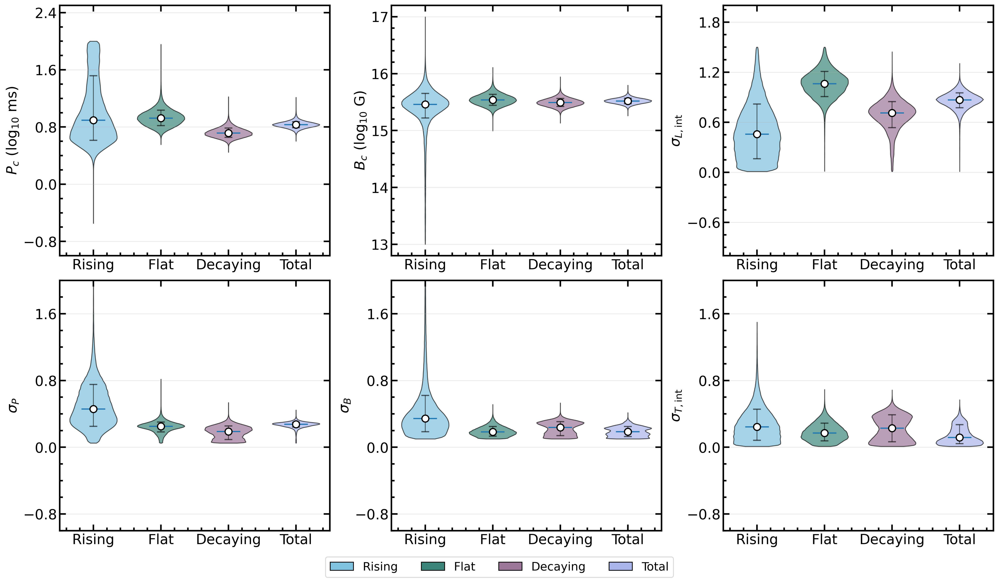
图注：Violin plots of the posterior distributions of the six CPP parameters inferred for the Rising, Flat, Decaying, and Total plateau samples. The panels show $P_{\rm c}$, $\sigma_{P}$, $B_{\rm c}$, $\sigma_{B}$, $\sigma_{L,\rm int}$, and $\sigma_{T,\rm int}$, respectively. White markers and error bars denote the median values and 68\% confidence intervals. The best-fit parameter estimates are listed in Table~\(\ref{tab:cpp_params}.\)
对应解读：对应“建议重点查看的图表”第3、5项，以及“关键图表逐图导读”中关于磁星参数后验和本征散布参数的图3/图5解读。
入选理由：这张图直接给出 Rising、Flat、Decaying 和 Total 样本的六个 CPP 超参数后验，包括 \(P_c\)、\(B_c\)、\(sigma_P\)、\(sigma_B\)、\(sigma_L,int\) 和 \(sigma_T,int\)，并标出中位数与68%置信区间。它最能检验日报核心结论：不同平台形态的磁星参数可信区间是否重叠，以及光度本征散布大而时间散布较小是否显著。
来源与置信度：\(arxiv_source\)；high；\(arxiv_source\) / \(arxiv_version.tex\):figure[4]
Fig01
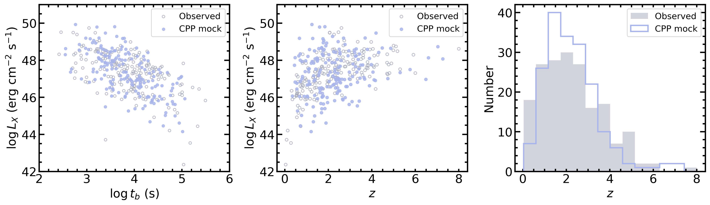
图注：Parameter distributions of the observed sample and the CPP mock bursts. The three panels show the distributions in the $L_{X}-t_{b}$ plane, the $L_{X}-z$ plane, and the redshift distribution. The simulated source sample includes all 185 plateau events used in this work.
对应解读：对应“建议重点查看的图表”第2、4、6项，以及“关键图表逐图导读”中关于 \(L_X--T_plat\) 分布、后验预测检验和选择效应的图2/图4解读。
入选理由：图中包含观测样本与 CPP mock bursts 在 \(L_X-t_b\) 平面、\(L_X-z\) 平面和红移分布上的对比，是检查模型是否能重现185个事件总体分布的关键图。它也直接支撑日报中关于 \(L_X--T_plat\) 点云是否连续重叠、以及选择函数和红移分布是否影响样本解释的讨论。
来源与置信度：\(arxiv_source\)；high；\(arxiv_source\) / \(arxiv_version.tex\):figure[1]
Fig03
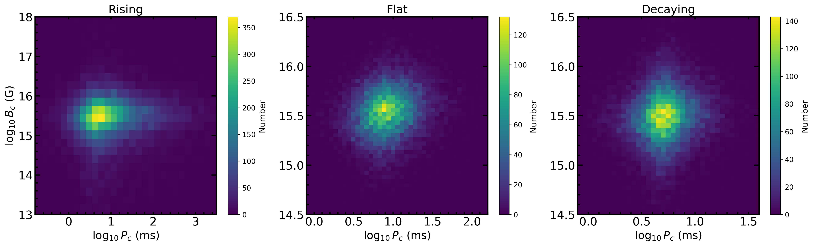
图注：Two-dimensional posterior distribution of the three subclasses in the $\log_{10}B_{\rm c}-\log_{10}P_{\rm c}$ plane. The color scale indicates the number of posterior samples in each bin. From left to right, the panels correspond to the rising, flat, and decaying samples, respectively. Each panel is constructed from 15,000 posterior samples for the corresponding plateau class.
对应解读：对应“建议重点查看的图表”第3项，以及“关键图表逐图导读”中关于不同形态子类磁星参数后验的图3解读。
入选理由：这张图分别展示 rising、flat、decaying 三类平台在 log \(B_c--log\) \(P_c\) 平面上的二维后验分布，最适合判断三种形态是否对应彼此分离的磁星族群。它比全样本图更直接服务于日报核心问题：形态差异是否需要不同中心引擎参数分布。
来源与置信度：\(arxiv_source\)；high；\(arxiv_source\) / \(arxiv_version.tex\):figure[3]
Fig05
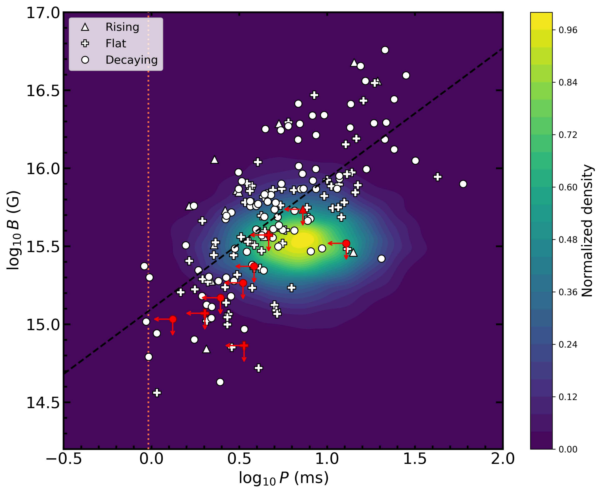
图注：Comparison of traditional inversion and Bayesian population inference in the $B$--$P$ plane. The colored background shows the Bayesian-inferred population density, with the color bar indicating the normalized density. The superimposed points show the traditional inversion results, assuming $\eta=0.7$. Triangles, crosses, and circles denote the rising, flat, and decaying plateau subsamples, respectively. The red dots mark GRBs with internal plateaus; downward and leftward arrows indicate upper limits on $B_{\rm p}$ and $P_0$, respectively. The black dashed line is the best-fitting power-law relation for the traditional inversion results, excluding internal-plateau events because they provide only upper limits. The vertical dotted line marks the neutron-star break-up spin-period limit \(\citep{2004Sci...304..536L}.\)
对应解读：对应“模型拟合”部分关于传统逐源反演与分层贝叶斯人口推断差异、\(P_0--B_p\) 退化和物理边界的讨论。
入选理由：该图把传统反演得到的 B--P 点与贝叶斯人口推断的密度背景叠加，并标出形态符号、internal plateau 上限、传统拟合关系和中子星破裂自转周期限制。它有助于说明为什么不能只依赖逐个事件反演峰值，以及分层推断如何改变对磁星参数分布的理解。
来源与置信度：\(arxiv_source\)；high；\(arxiv_source\) / \(arxiv_version.tex\):figure[5]
Fig02
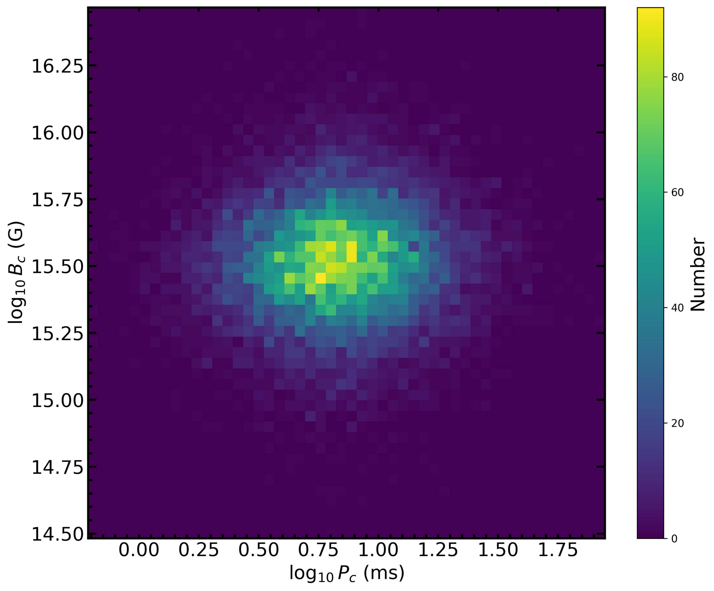
图注：Two-dimensional distribution of magnetar spin periods and magnetic fields for the full plateau sample, reconstructed from 15,000 Monte Carlo draws from the posterior population. The color scale indicates the number of samples in each bin.
对应解读：对应“建议重点查看的图表”第3项，以及“模型拟合”中关于全样本磁星 \(P_0\) 与 \(B_p\) 人口分布的讨论。
入选理由：这张图展示全平台样本由后验人口重建得到的磁星自旋周期和磁场二维分布，可用于把三类子样本结果放回总体磁星族群背景中理解。其科学价值略低于 Fig03 和 Fig04，因为它不直接比较不同形态子类，也不显示 \(sigma_L,int\) 与 \(sigma_T,int\)。
来源与置信度：\(arxiv_source\)；high；\(arxiv_source\) / \(arxiv_version.tex\):figure[2]
强相关工作
这篇工作与 Swift 时代的大量 X 射线平台研究直接相关。同类研究包括基于 Swift/XRT 光变曲线的经验平台分类、Dainotti 型 \(L_X\)--\(T_{\rm plat}\) 相关性、以及逐个伽马暴反演毫秒磁星参数的工作。检索关键词可用 “GRB X-ray plateau magnetar energy injection Swift XRT”、“Dainotti relation gamma-ray bursts plateau”、“millisecond magnetar GRB afterglow”。
基础理论方面，它承接了连续能量注入余辉模型和磁偶极自旋下降模型。相反或竞争解释包括黑洞后备吸积、分层喷流、离轴观测、外激波微物理参数演化、高纬辐射残留和平台由选择效应诱导的经验相关。检索关键词可用 “GRB plateau fallback accretion black hole”、“structured jet X-ray plateau”、“selection effects Dainotti relation”。如果读者想追踪张力，应比较那些认为平台相关性可作为标准烛光的论文与强调截断和选择效应会塑造相关性的论文。
同一事件 / 同类源线索：
相似工作：
基础理论 / 方法工作：
相反观点 / 张力线索：
4. Transport Properties of the MRI in Differentially Rotating Neutron Stars
- 来源：arXiv / astro-ph.HE
- 链接：https://arxiv.org/abs/2607.24457v1
- 作者：Harshraj Bandyopadhyay, Peter Hammond, David Radice
- 评分：novelty 8/10，importance 8/10，relevance 8/10，final 9.00/10
- 推荐理由：高分辨率GRMHD模拟差分旋转中子星MRI湍流，给出有效输运系数并质疑常用LES参数化；对NS并合残骸、磁场放大和高能瞬变建模有较高方法价值。
中文题目：差分旋转中子星中磁旋转不稳定性的输运性质
做了什么：这篇论文用三维高分辨率广义相对论磁流体力学模拟，直接解析差分旋转中子星中的磁旋转不稳定性湍流，并测量湍流产生的有效剪切黏滞、混合长度和平均场发电机系数。作者比较会快速或延迟坍缩的高质量模型，以及在趋于刚体旋转后仍稳定的低质量模型。核心结论是：混合长度与磁旋转不稳定性特征波长、平均场发电机系数与阿尔芬速度的量纲相关性大体成立，但实际数值在时空上高度间歇，且可偏离简单量纲估计约一个数量级；混合长度对密度的依赖很弱，这直接挑战了许多广义相对论大涡模拟中使用的 \(\ell_{\rm mix}(\rho)\) 处方。
为什么重要：双中子星并合后的超大质量或大质量中子星能否存活、何时坍缩、向外盘和喷流输送多少角动量，都强烈依赖磁湍流输运。全局并合模拟通常解析不了真实磁旋转不稳定性的惯性区，只能用亚格子模型。这篇工作重要之处在于，它不是再给一个经验参数，而是在相对论中子星背景上直接测量这些参数，检验常用闭合关系是否可靠。
理论 / 观测 / 仪器方法价值：对理论建模而言，它给出了把解析磁旋转不稳定性湍流与有效 \(\alpha\)-黏滞、混合长度、平均场发电机模型连接起来的实测标定，并指出简单密度依赖处方可能不够。对观测解释而言，它影响并合后遗迹的寿命、引力波后并合谱、千新星抛射物和短伽马暴中心引擎的预测。对数值方法而言，它说明大涡模拟可以定性复现实效应，但定量预测仍需要解析磁旋转不稳定性的广义相对论磁流体力学模拟作为校准。
为什么应该关注：如果你使用或解读双中子星并合模拟，这篇论文告诉你一个很实际的问题：常用的湍流输运参数不是一个平滑、只随密度变化的标量。它们与局地磁场、旋转剪切和磁旋转不稳定性尺度有关，还会强烈间歇。任何关于并合后遗迹坍缩时间、盘质量、磁场放大和喷流形成的定量结论，都可能受这些闭合模型误差影响。
展开详细解读：文章讲解、背景、理论、重点章节、图表与相关工作
文章详细讲解
科学问题：差分旋转中子星是双中子星并合后最关键的中间态之一。它可以靠差分旋转获得额外支撑，也可以因磁旋转不稳定性驱动的湍流把角动量向外输运而逐渐失去支撑并坍缩。问题在于，真实磁旋转不稳定性最快增长波长通常远小于全局并合模拟的网格尺度，许多工作只能引入有效黏滞、混合长度或平均场发电机项来模拟未解析湍流。本文要问的是：这些有效输运系数在相对论差分旋转中子星中究竟是多少，是否可由简单量纲估计或密度函数描述。
作者怎么做：论文进行三维高分辨率广义相对论磁流体力学模拟，直接跟踪差分旋转中子星内的磁旋转不稳定性增长、饱和和后续湍流输运。样本包括高质量模型，其中一部分会快速坍缩，另一部分因角动量外输而延迟坍缩；也包括较低质量模型，即使差分旋转被抹平、接近刚体旋转后仍保持稳定。作者从解析出的湍流场中测量三个有效参数：剪切黏滞 \(\alpha_{\rm vis}\)、混合长度 \(\ell_{\rm mix}\) 和平均场发电机参数 \(\alpha_{\rm DYN}\)，并考察它们与密度 \(\rho\)、磁旋转不稳定性特征波长 \(\lambda_{\rm MRI}\)、竖直阿尔芬速度 \(v_A\) 等平均流变量的相关性。
关键结果：在磁旋转不稳定性饱和阶段，\(\ell_{\rm mix}\) 与 \(\lambda_{\rm MRI}\) 的相关性、\(\alpha_{\rm DYN}\) 与 \(v_A\) 的相关性符合基本量纲分析的方向性预期；也就是说，湍流涡旋尺度确实被局地磁旋转不稳定性长度尺度控制，平均场电动势也确实与磁化流体中的阿尔芬速度相关。但这些关系不是精确闭合律：局地数值可相对量纲估计偏离约一个数量级，并且在空间和时间上呈高度间歇。更重要的是，作者发现 \(\ell_{\rm mix}\) 基本不随 \(\rho\) 单调变化，这与许多广义相对论大涡模拟把 \(\ell_{\rm mix}\) 设为 \(\ell_{\rm mix}(\rho)\) 的做法存在张力。
局限和下一步：这类直接解析模拟仍受限于初始磁场构型、网格分辨率、可达到的雷诺数和磁雷诺数、状态方程、是否包含中微子输运和真实微物理等因素。本文给出的输运系数更像是可用于校准和警示的高保真样本，而不是放之四海皆准的通用闭合模型。下一步应把更多并合后遗迹结构、不同磁场拓扑、更真实状态方程与辐射输运纳入同类校准，并发展依赖局地剪切、磁场方向、磁旋转不稳定性可解析度和湍流历史的动态亚格子模型。
关键结果是怎么做出来的
本文最重要的证据链从模型选择开始。作者不是模拟完整双中子星并合全过程，而是选取差分旋转中子星作为受控实验平台，这样可以在相同数值框架中比较不同质量、不同稳定性的遗迹模型。高质量模型用于检验磁旋转不稳定性输运是否能移除旋转支撑并触发坍缩；低质量稳定模型则提供较长时间窗口，用于测量饱和湍流的统计性质。这样的样本设计有助于把“湍流输运本身”与“坍缩终止模拟”的影响区分开。
事件数不是观测论文式的光子或源计数，而是多组三维高分辨率广义相对论磁流体力学运行和大量时空采样单元。关键不是单次测量，而是把局地湍流应力、平均流剪切、磁场强度和磁旋转不稳定性波长在空间和时间上做条件统计。作者测得 \(\alpha_{\rm vis}\)、\(\ell_{\rm mix}\) 和 \(\alpha_{\rm DYN}\)，再与 \(\rho\)、\(\lambda_{\rm MRI}\)、\(v_A\) 等量作相关分析。读者应重点看散点分布、分位区间和随时间演化，而不是只看一个全局平均值。
显著性在这篇文章中主要表现为数值统计稳健性和模型间一致性，而非单一 \(p\)-值。最关键的比较是：若量纲分析完全可靠，则 \(\ell_{\rm mix}/\lambda_{\rm MRI}\) 和 \(\alpha_{\rm DYN}/v_A\) 应在相对窄的范围内聚集；若密度处方有效，则 \(\ell_{\rm mix}\) 应随 \(\rho\) 呈现可用于闭合的趋势。论文发现前两种量纲相关性只给出粗略尺度，散布接近数量级；而 \(\ell_{\rm mix}\) 与 \(\rho\) 的关系弱，这构成对 \(\ell_{\rm mix}(\rho)\) 处方的直接反证或至少是强警示。
支撑结论的图表应包括湍流饱和后磁能和动能随时间演化、不同模型的角动量重分布或角速度剖面、输运系数的空间切片、输运系数与 \(\lambda_{\rm MRI}\)、\(v_A\)、\(\rho\) 的散点图或二维直方图，以及坍缩与否的时序诊断。表格若列出各模型质量、初始转动律、磁场强度、分辨率和坍缩时间，也应与输运系数统计一起读，避免把模型差异误当成普适湍流规律。
主要系统误差来自有限分辨率、初始磁场几何、数值耗散、平均场分解方式和模拟时间长度。磁旋转不稳定性的最快增长波长必须被足够网格点解析，否则湍流饱和值和有效输运会被数值黏滞污染。另一方面，即使解析了最快增长模式，真实天体中的湍流惯性区远大于模拟可达范围，因此数量级散布可能既有物理间歇性，也有有限雷诺数效应。稳健性检查应关注不同分辨率、不同空间区域、不同时间窗口下相关关系是否仍存在。
展开背景、理论、公式、模型、章节和图表导读
背景知识
研究对象是差分旋转中子星，尤其是双中子星并合后形成的热、快转、强磁遗迹。它可能是超大质量中子星、暂现大质量中子星，或很快坍缩为黑洞。其命运取决于热压、差分旋转、磁场、中微子冷却和角动量输运的竞争。差分旋转可以支撑超过非旋转托尔曼-奥本海默-沃尔科夫极限的质量，但这种支撑不是永久的。
磁旋转不稳定性最初在吸积盘理论中成为角动量输运的核心机制，后来被认识到也会在并合后中子星内部和盘中迅速放大磁场。只要角速度满足向外递减，弱磁场即可被剪切流不稳定地放大，最终形成湍流应力，把角动量从内区传向外区。在中子星并合语境下，这个过程可能改变坍缩时间、盘质量、喷流环境和千新星抛射物。
历史困难在于尺度分离。全局广义相对论磁流体力学并合模拟要覆盖几十公里尺度和毫秒到秒级演化，而磁旋转不稳定性最快增长波长可远小于全局网格尺度，尤其在早期弱磁场区域。很多模拟人为采用较强初始磁场，或使用有效黏滞、大涡模拟和平均场发电机模型。这些方法可以探索现象学，但参数如何选一直缺乏可靠校准。
现在值得重新看的原因是数值相对论分辨率、算法和计算资源已经足以在理想化但相对真实的差分旋转中子星模型中直接解析磁旋转不稳定性的一部分非线性阶段。同时，多信使观测对并合后遗迹寿命越来越敏感：引力波后并合信号、短伽马暴延迟、千新星颜色和能量注入都与角动量输运有关。若亚格子输运模型偏差达数量级，观测解释也会有系统偏差。
常见误区有三个。第一，把 \(\alpha\)-黏滞参数当作常数，以为它能普适描述所有区域；实际上中子星内部湍流高度各向异性且受磁场拓扑控制。第二，把混合长度简单写成密度函数，以为密度是唯一重要局地变量；本文显示 \(\lambda_{\rm MRI}\) 和磁场相关量更直接。第三，把磁场放大和角动量输运等同于单调、平滑过程；实际饱和湍流具有强烈间歇性，局地应力可远离平均值。
基础理论 / 方法脉络
基本物理图像从差分旋转剪切开始。若角速度 \(\Omega\) 随柱半径向外下降，内侧流体元转得更快，磁力线把内外流体元连接起来，相当于一根弹簧。微小径向位移会使内侧流体元向外传递角动量、继续外移，外侧流体元失去角动量、继续内移，从而形成磁旋转不稳定性。这一机制不要求强磁场；弱磁场反而给出较短增长时间和可解析的特征尺度。
在理想磁流体力学中，磁场冻结在流体里，阿尔芬速度 \(v_A\) 描述磁张力扰动传播速度。最快增长磁旋转不稳定性波长通常与 \(v_A/\Omega\) 同阶，因此局地磁场越强、角速度越低，\(\lambda_{\rm MRI}\) 越大，也越容易被网格解析。数值模拟常用质量因子来判断一个方向上 \(\lambda_{\rm MRI}\) 被多少个网格点覆盖；若覆盖不足，测得的湍流输运会偏低或受到数值耗散主导。
本文关心的有效输运系数把解析湍流映射到可用于低分辨率模拟的闭合量。\(\alpha_{\rm vis}\) 类似吸积盘中的 Shakura-Sunyaev 参数，用应力与压力或剪切能量尺度之比表示角动量输运效率。\(\ell_{\rm mix}\) 是混合长度模型中的涡旋尺度，常用于把未解析湍流应力写成局地剪切乘以有效黏滞。\(\alpha_{\rm DYN}\) 则属于平均场发电机理论，描述湍流电动势如何从平均磁场再生大尺度磁场。
论文的关键假设是：虽然完整湍流是三维、非线性、相对论和间歇的，但可以通过合适的平均操作分离平均流和脉动场，并从脉动相关量反推出有效系数。问题不在于这些系数能否定义，而在于它们是否可由少数局地平均量闭合。作者特别检验 \(\ell_{\rm mix}\) 是否跟 \(\lambda_{\rm MRI}\) 或 \(\rho\) 相关，以及 \(\alpha_{\rm DYN}\) 是否跟 \(v_A\) 相关。
常见退化和系统误差包括：磁场强度与可解析度同时影响 \(\lambda_{\rm MRI}\)，所以强磁场模型可能既更物理也更数值友好；平均场分解尺度会改变脉动应力；坍缩模型的可用统计时间短，可能低估长期饱和态散布；不同状态方程和温度结构会改变压力归一化，从而影响 \(\alpha_{\rm vis}\) 的解释。
公式与推导
第一步是角动量输运的守恒图像。在近似轴对称平均下，柱半径 \(R\) 处的角动量密度可写为
其中 \(\rho\) 是静质量密度，\(h\) 是比焓，\(W\) 是洛伦兹因子，\(\Omega\) 是角速度。湍流或磁应力的径向通量改变 \(j\)，因此差分旋转遗迹能否维持支撑取决于这些应力的大小。
第二步是磁旋转不稳定性的局地条件。牛顿极限下，轴对称磁旋转不稳定性的必要条件可写为
这个关系说明，只要角速度向外下降，弱磁场就能把剪切自由能转化为磁能和湍流动能。相对论模拟中具体判据更复杂，但这个局地图像仍是理解增长区域的起点。
第三步给出特征尺度。沿磁场方向的阿尔芬速度近似为
其中 \(B\) 是共动或适当正交局地框架中的磁场强度。最快增长波长常按
估计，省略的系数依赖剪切率和场方向。这个式子是本文检验 \(\ell_{\rm mix}\) 与 \(\lambda_{\rm MRI}\) 相关性的量纲基础。
第四步是有效黏滞闭合。若湍流应力 \(T^{R\phi}_{\rm turb}\) 由局地剪切产生，可以写成
其中 \(\nu_{\rm turb}\) 是有效运动黏滞率。混合长度模型进一步给出
其中 \(c_s\) 是声速或代表湍流速度上限的局地速度尺度。因此可由测得的应力和剪切反推 \(\ell_{\rm mix}\)。
第五步是 \(\alpha\)-参数表示。常用归一化为
其中 \(P\) 是压力；符号约定可随作者定义略有差别，实际常取能向外输运角动量的应力幅值。这个量让不同密度和压力区域的输运效率可比较，但也会把压力结构的不确定性带入参数解释。
第六步是量纲预期。若最大涡旋尺度由磁旋转不稳定性注入尺度决定，则
其中 \(C_\ell\) 是无量纲系数。本文发现这个关系只在统计意义上有用，\(C_\ell\) 在时空上可有约数量级散布。
第七步是平均场发电机关系。平均电动势可定义为
其中撇号表示相对平均场的湍流脉动，尖括号表示空间或时间平均。最简单的各向同性闭合写成
其中 \(\eta_{\rm turb}\) 是湍流磁扩散率。量纲上 \(\alpha_{\rm DYN}\) 应是速度量级，因此与 \(v_A\) 比较是自然诊断。
第八步是数值统计诊断。若用 \(y_i=\log \ell_{{\rm mix},i}\) 和 \(x_i=\log \lambda_{{\rm MRI},i}\) 表示采样单元，可用线性关系
检查斜率 \(b\) 是否接近 \(1\)，以及残差 \(\epsilon_i\) 的散布是否小到足以支持闭合模型。本文的物理信息主要在于残差很大且间歇，说明简单量纲式不能提供高精度定量预测。
模型拟合 / 应用方法
这篇工作中的“拟合”主要是从解析湍流场反演有效输运系数，而不是拟合天文观测光谱。基本做法是先定义平均流和湍流脉动，再从应力张量、平均剪切、压力、声速、磁场和角速度等网格量构造 \(\alpha_{\rm vis}\)、\(\ell_{\rm mix}\) 与 \(\alpha_{\rm DYN}\)。随后比较这些系数与 \(\rho\)、\(\lambda_{\rm MRI}\)、\(v_A\) 的条件分布和相关性。
参数估计的关键不是一个全局最优值，而是空间和时间分布。对 \(\ell_{\rm mix}\) 与 \(\lambda_{\rm MRI}\) 的关系，可在对数空间估计斜率、归一化和残差宽度；对 \(\alpha_{\rm DYN}\) 与 \(v_A\) 的关系，可检查比例系数是否稳定；对 \(\ell_{\rm mix}(\rho)\) 处方，则应看在固定密度壳层内的散布是否小于跨密度变化。若同一密度下散布超过密度趋势本身，密度闭合就缺乏预测力。
残差诊断尤其重要。一个大涡模拟闭合模型不需要逐点完美，但若残差呈系统空间结构，例如在剪切层、低密度外层、磁场强区域或坍缩前核心区持续偏离，就会系统性改变角动量输运。本文强调的间歇性意味着时间平均和体积平均可能掩盖局地强输运事件，而这些事件可能正是触发坍缩或外抛物质再分布的关键。
主要退化关系包括：\(v_A\)、\(\lambda_{\rm MRI}\) 和磁场强度并不独立；\(\rho\) 与压力、声速、几何位置也相关；坍缩模型中的时间窗口短，饱和阶段统计可能偏向早期强剪切状态；不同平均尺度会改变 \(\mathbf{v}'\) 和 \(\mathbf{B}'\) 的定义，从而影响 \(\boldsymbol{\mathcal{E}}\)。因此，把本文系数直接塞进任意并合模拟前，应先匹配物理区域、磁场可解析度和平均操作。
实际应用场景是校准广义相对论大涡模拟和亚格子磁场放大模型。一个更可靠的模型可能不应只给 \(\ell_{\rm mix}(\rho)\)，而应让 \(\ell_{\rm mix}\) 依赖 \(\lambda_{\rm MRI}\)、剪切率、磁场方向、局地湍流能量和解析质量因子，并允许随机或间歇分量。本文的结果也可作为误差预算：若使用量纲估计的输运系数，定量预测至少应考虑约数量级不确定性。
重点章节 / 结果段落怎么读
数据/样本部分应先读模型表。重点看每个差分旋转中子星的质量、初始旋转律、磁场强度、状态方程或热处理、网格分辨率，以及是否 prompt collapse、delayed collapse 或长期稳定。没有这些信息，后面的输运系数差异很难解释。
方法部分应关注广义相对论磁流体力学方程、网格设置、磁场初始化和磁旋转不稳定性解析度诊断。特别要看作者如何定义平均量与湍流脉动，因为 \(\alpha_{\rm vis}\)、\(\ell_{\rm mix}\) 和 \(\alpha_{\rm DYN}\) 都依赖这个分解。
主结果部分应按时间顺序读：先看磁旋转不稳定性线性增长和饱和，再看磁能、湍流动能、角速度剖面和角动量输运如何演化，最后看坍缩模型和稳定模型的差别。这样可以判断输运系数是在真正饱和态测得，还是受瞬态影响。
相关性分析部分是全文核心。读者应重点检查 \(\ell_{\rm mix}\) 对 \(\lambda_{\rm MRI}\) 的散点、\(\alpha_{\rm DYN}\) 对 \(v_A\) 的散点，以及 \(\ell_{\rm mix}\) 对 \(\rho\) 的弱相关或无相关结果。不要只看平均趋势线，要看分布宽度和异常区域。
讨论和稳健性部分应看作者如何解释数量级偏差、间歇性、分辨率限制和对大涡模拟的影响。若附录中有分辨率测试、不同时间窗口或不同平均尺度测试，应优先检查，因为这些决定结果能否作为亚格子模型标定。
建议重点查看的图表
-
模型和坍缩时序表：检查各模型质量、磁场、分辨率、坍缩时间或最终稳定状态，确认样本覆盖了不同物理命运。
-
磁能与湍流动能随时间演化图：看磁旋转不稳定性线性增长、饱和时间、饱和值和坍缩前变化，判断输运系数统计窗口是否合理。
-
角速度或角动量剖面图：看差分旋转是否被抹平、角动量是否向外输运，以及高质量模型坍缩前是否失去旋转支撑。
-
\(\ell_{\rm mix}\) 与 \(\lambda_{\rm MRI}\) 的散点或二维直方图：看趋势斜率、散布宽度、是否有明显区域性偏差。
-
\(\alpha_{\rm DYN}\) 与 \(v_A\) 的相关图：看量纲关系是否只给出平均尺度，还是能逐点预测；注意正负号和平均场定义。
-
\(\ell_{\rm mix}\) 与 \(\rho\) 的图：这是挑战 \(\ell_{\rm mix}(\rho)\) 处方的关键诊断，应看同一密度下散布是否远大于密度趋势。
-
输运系数空间切片：看强输运是否集中在剪切层、磁场强区或低密度外层，判断间歇性是否有清楚物理位置。
-
分辨率或稳健性检验图：看 \(\lambda_{\rm MRI}\) 的质量因子、不同网格下饱和值和相关关系是否收敛。
关键图表逐图导读
图 1：通常应是初始模型或演化概览。横轴可能是半径或时间，纵轴可能是密度、角速度、磁能或最大密度。读者要看不同质量模型如何区分为快速坍缩、延迟坍缩和稳定三类。陷阱是不要把坍缩时间差异完全归因于湍流系数；初始质量和旋转支撑也不同。
图 2：若展示磁能或湍流能量随时间演化，横轴应为毫秒量级时间，纵轴多为体积分磁能或归一化能量。线性增长段对应磁旋转不稳定性，平台段对应饱和湍流。读图时应确认作者用于统计输运系数的时间窗口落在平台段，而不是线性增长或坍缩瞬态。
图 3：若展示角速度剖面或角动量分布，横轴多为柱半径或球半径，纵轴为 \(\Omega\)、比角动量或其归一化量。模型线随时间趋于平坦说明差分旋转被抹平。关键是比较高质量模型坍缩前核心角动量损失与稳定模型趋于刚体旋转后的残余结构。
图 4：\(\ell_{\rm mix}\) 对 \(\lambda_{\rm MRI}\) 的图应是核心图之一。横纵轴最好在对数尺度，数据点或颜色代表不同空间采样密度或时间。若图中有 \(\ell_{\rm mix}\propto \lambda_{\rm MRI}\) 的参考线，要看数据是否沿其分布，以及垂直散布是否接近数量级。陷阱是平均线看似合理，但闭合模型需要残差足够小。
图 5：\(\alpha_{\rm DYN}\) 对 \(v_A\) 的图用于检验平均场发电机量纲估计。横轴为阿尔芬速度，纵轴为发电机速度系数，可能有正负号。需要注意平均场定义会影响符号和幅度；若只看绝对值，可能掩盖不同区域发电机项相互抵消。
图 6：\(\ell_{\rm mix}\) 对 \(\rho\) 的图是对大涡模拟处方最有冲击力的图。横轴为密度，纵轴为混合长度或其归一化值。如果同一 \(\rho\) 下点云跨越很宽，而不同 \(\rho\) 的中位数变化不明显，就说明 \(\rho\) 不是足够的闭合变量。读者要警惕对数坐标下弱趋势被视觉夸大。
图 7：输运系数空间切片应显示 \(\alpha_{\rm vis}\)、\(\ell_{\rm mix}\) 或 \(\alpha_{\rm DYN}\) 在星体内部的二维分布。坐标轴可能是赤道平面 \(x\)-\(y\) 或经向截面 \(R\)-\(z\)。关键是看强输运是否斑块状和瞬态，这直接支持“高度间歇”的结论。
论文原图 / 可嵌入图片
Fig07
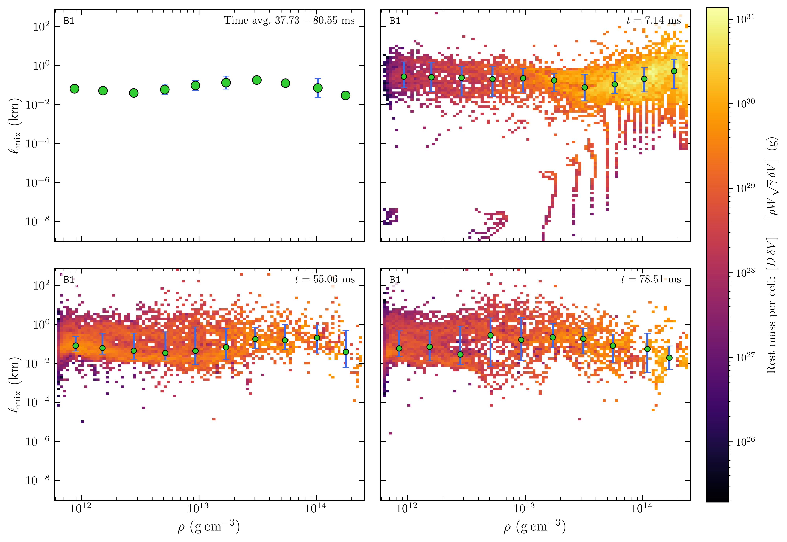
图注：Mixing length $\ell_{\rm mix}$ versus rest-mass density $\rho$ for \(\texttt{B1}.\) Top left: time-averaged over the saturated window ($37.73-80.55\,\mathrm{ms}$). The remaining panels show the mass-weighted two-dimensional distribution with per-bin central values (points) at $t=7.14\,\mathrm{ms}$, $t=55.06\,\mathrm{ms}$, and $t=78.51\,\mathrm{ms}$. $\ell_{\rm mix}$ governed by the turbulent dynamics and is independent of the local density directly. $\ell_{\rm mix}$ is nearly constant across the star, holding a fixed fraction of the driving scale once the star reaches its steady state.
对应解读：对应“建议重点查看的图表”第6项和“关键图表逐图导读”图6：\(\ell_{\rm mix}\) 与 (\
ho) 的关系，以及模型拟合段落中对 (\ell_{\rm mix}(\
ho)) 闭合处方的检验。
入选理由：这是论文结论中最有冲击力的诊断图之一，直接展示混合长度相对局地密度缺乏简单单调依赖，并给出饱和窗口平均与多个时刻的二维分布。它最能支撑日报关于“密度不是足够闭合变量”“同一密度下散布很大”的解读。
来源与置信度：\(arxiv_source\)；high；\(arxiv_source\) / main.tex:figure[7]
Fig06
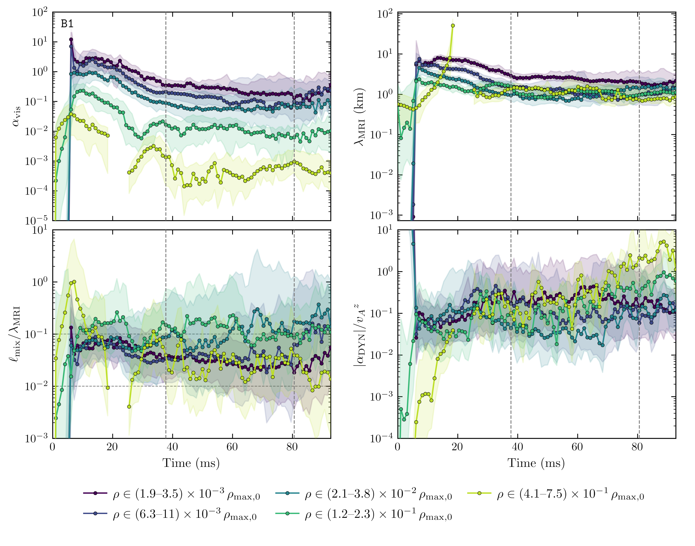
图注：Time evolution of four transport coefficients for \(\texttt{B1},\) with curves colored by density bin (in units of the initial maximum density $\rho_{\rm max,0}$). Clockwise from top left: the effective viscosity parameter $\alpha_{\rm vis}$, the MRI wavelength $\lambda_{\rm MRI}$, the dynamo measure $|\alpha_{\rm DYN}|/v_A{}^z$, and the ratio $\ell_{\rm mix}/\lambda_{\rm MRI}$. Vertical dashed lines mark the saturated window over which the coefficients are averaged. All of these quantities show a similar pattern: a sharp transient as the MRI grows and saturates within the first $\sim\!15\,\mathrm{ms}$, followed by a long, statistically steady turbulent state.
对应解读：对应“建议重点查看的图表”第2项和模型拟合段落：磁旋转不稳定性饱和窗口、输运系数时间演化，以及 \(\ell_{\rm mix}/\lambda_{\rm MRI}\)、\(|\alpha_{\rm DYN}|/v_A^z\) 的量纲关系检验。
入选理由：该图同时包含 \(\alpha_{\rm vis}\)、\(\lambda_{\rm MRI}\)、\(|\alpha_{\rm DYN}|/v_A^z\) 和 \(\ell_{\rm mix}/\lambda_{\rm MRI}\) 的时间演化，并标出饱和统计窗口，是判断作者是否在稳态湍流阶段反演输运系数的核心依据。
来源与置信度：\(arxiv_source\)；high；\(arxiv_source\) / main.tex:figure[6]
Fig12
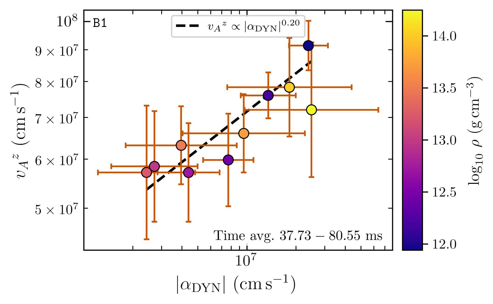
图注：Vertical Alfv\'en speed $v_A{}^z$ against the dynamo coefficient $|\alpha_{\rm DYN}|$ for \(\texttt{B1},\) time-averaged over the saturated window ($37.73-80.55\,\mathrm{ms}$), with density-weighted points. The dashed line is a weighted power-law fit, $v_A{}^z\propto|\alpha_{\rm DYN}|^{0.20}$. The Alfv\'en speed depends directly on the field strength, while $\alpha_{\rm DYN}$ depends on it only through the field-aligned fluctuation EMF, so the two are not tied together by construction. The sub-linear exponent means $v_A{}^z$ varies slowly with $|\alpha_{\rm DYN}|$, with a decade in $|\alpha_{\rm DYN}|$ spanning less than a factor of two in $v_A{}^z$.
对应解读：对应“建议重点查看的图表”第5项和“关键图表逐图导读”图5：\(\alpha_{\rm DYN}\) 与竖直阿尔芬速度 \(v_A^z\) 的相关性及量纲估计残差。
入选理由：该图直接比较 \(|\alpha_{\rm DYN}|\) 与 \(v_A^z\)，并给出加权幂律拟合，能够检验平均场发电机参数是否可由阿尔芬速度逐点预测。其亚线性拟合和散布正好支撑日报中“量纲关系只给平均尺度、不能精确闭合”的讨论。
来源与置信度：\(arxiv_source\)；high；\(arxiv_source\) / main.tex:figure[12]
Fig02
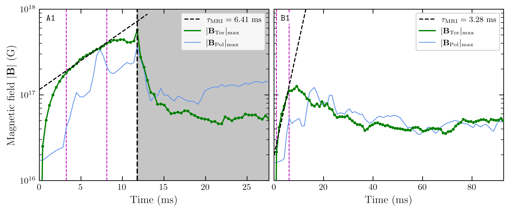
图注：Evolution of the maximum toroidal and poloidal magnetic-field components (in log scale). The dashed black line shows the fitted exponential MRI growth with $\tau_\mathrm{MRI} = 6.41\,\mathrm{ms}$ (\texttt{A1}) and $3.28\,\mathrm{ms}$ (\texttt{B1}), over the MRI interval marked by the vertical dashed (magenta) lines. \(\texttt{B1}\) reaches a long-lived saturated state following amplification, while \(\texttt{A1},\) despite a similar amplification interval, collapses shortly thereafter (shaded region).
对应解读：对应“建议重点查看的图表”第2项和“关键图表逐图导读”图2：磁场放大、MRI线性增长、饱和和坍缩时序。
入选理由：该图展示极向和环向磁场分量随时间的指数增长、MRI拟合增长时间、MRI区间以及A1坍缩阴影区，可用于确认线性增长段、饱和阶段和坍缩瞬态的相对时序，是理解后续输运系数统计窗口是否合理的基础图。
来源与置信度：\(arxiv_source\)；high；\(arxiv_source\) / main.tex:figure[2]
Fig01
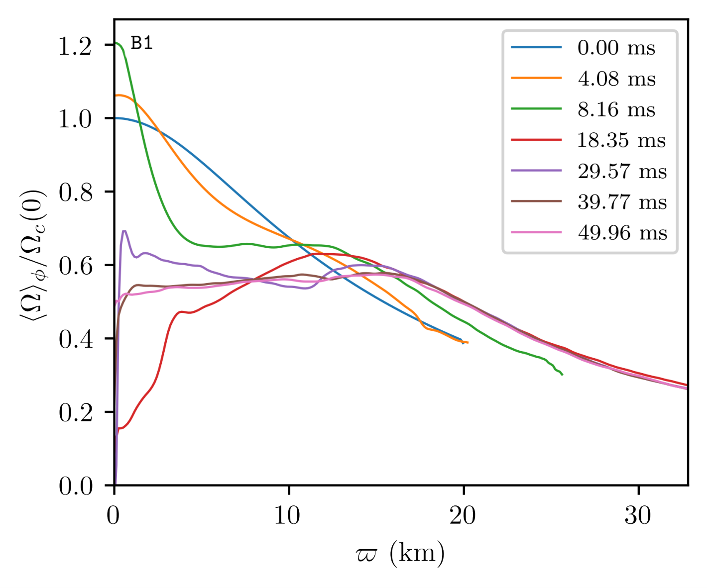
图注：Angle (Azimuthal) averaged angular velocity profile for model B1, normalized by the initial central angular velocity $\Omega_c(0)$. The $\Omega$ profile is only shown where $\rho \geq 10^{-6}\,M_{\odot}^{-2}$. The profile decreases with the radius $\varpi$, indicating strong differential rotation. Initially we see that $\langle \Omega \rangle_\phi$ vanishes around $20\ {\rm km}$ as the star has not yet redistributed matter outward. However, magnetic stresses generated by winding and MRI-driven turbulence transport angular momentum from the rapidly rotating inner region to the more slowly rotating outer layers at larger radii. This flattens the angular-velocity gradient and we observe an increase in $\Omega$ in the bulk of the NS while also extending the profile outward.
对应解读：对应“建议重点查看的图表”第3项和“关键图表逐图导读”图3：角速度剖面随半径演化、差分旋转被磁应力和MRI湍流抹平。
入选理由：该图直接给出方位平均角速度随柱半径的剖面，说明角动量从快速旋转内区向外层输运并使角速度梯度变平，是连接MRI湍流输运与中子星失去差分旋转支撑这一物理图像的关键证据。
来源与置信度：\(arxiv_source\)；high；\(arxiv_source\) / main.tex:figure[1]
Fig05
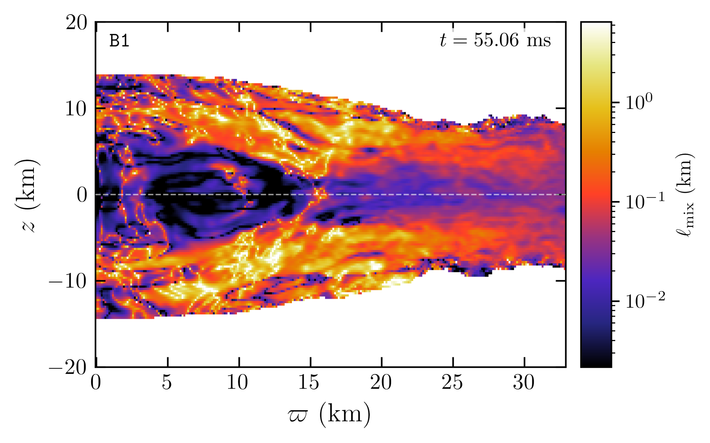
图注：Turbulent mixing length $\ell_{\rm mix}$ for \(\texttt{B1}\) at $t = 55.06\,\mathrm{ms}$ in the $r$-$z$ plane. The fine, spiral-tangled filaments fill the bulk of the star and are the hallmark of fully developed turbulence.
对应解读：对应“建议重点查看的图表”第7项和“关键图表逐图导读”图7：\(\ell_{\rm mix}\) 的空间切片和输运间歇性。
入选理由：该图给出饱和湍流阶段 \(\ell_{\rm mix}\) 在 \(r\)-\(z\) 平面的二维空间分布，能直观看到细丝状、斑块状结构，支撑日报中关于输运系数在空间上高度间歇、不能仅用体积平均或密度函数描述的论点。
来源与置信度：\(arxiv_source\)；high；\(arxiv_source\) / main.tex:figure[5]
强相关工作
这篇工作与磁旋转不稳定性的经典理论、吸积盘 \(\alpha\)-黏滞模型、双中子星并合后磁场放大模拟和广义相对论大涡模拟直接相连。应检索关键词包括 “magnetorotational instability neutron star merger remnant”, “GRMHD MRI high resolution differentially rotating neutron star”, “large eddy simulation neutron star merger mixing length”, “mean-field dynamo GRMHD merger remnant”。同类工作中，Kiuchi 等关于并合后磁旋转不稳定性和湍流的高分辨率模拟、Radice 等关于黏滞或大涡模拟并合遗迹的论文尤其相关。
潜在张力主要在于：低分辨率全局并合模拟常使用常数 \(\alpha\)、密度依赖 \(\ell_{\rm mix}(\rho)\) 或简单平均场发电机模型来预测坍缩时间和抛射物，而本文显示这些闭合律可能只有定性意义。相反观点并非认为磁旋转不稳定性不重要，而是认为工程化亚格子模型足以捕捉主要宏观效应；本文的贡献是把“足以定性”与“能否定量”分开，并给出后者的误差尺度。
同一事件 / 同类源线索：
相似工作：
- https://ui.adsabs.harvard.edu/abs/2018PhRvL.120i1101K/abstract
- https://ui.adsabs.harvard.edu/abs/2017ApJ...842L..10R/abstract
- https://ui.adsabs.harvard.edu/abs/2018MNRAS.481.3670R/abstract
基础理论 / 方法工作：
- https://ui.adsabs.harvard.edu/abs/1991ApJ...376..214B/abstract
- https://ui.adsabs.harvard.edu/abs/1998RvMP...70....1B/abstract
- https://ui.adsabs.harvard.edu/abs/1973A%26A....24..337S/abstract
相反观点 / 张力线索：
5. Constraints on the magnetic field in the hadronic scenario for the origin of the radio halo in the A1795 galaxy cluster
- 来源：arXiv / astro-ph.HE
- 链接：https://arxiv.org/abs/2607.24397v1
- 作者：P. Marchegiani, V. Vacca, F. Loi, F. Govoni, M. Murgia
- 评分：novelty 7/10，importance 7/10，relevance 9/10，final 8.70/10
- 推荐理由：用Fermi-LAT伽马射线上限约束星系团A1795强子起源射电晕和磁场，直接涉及宇宙线质子、强子伽马辐射与Fermi数据，相关性很高。
中文题目：在强子起源图像下约束星系团 A1795 射电晕所需的磁场强度
做了什么：这篇文章检验一个具体假设：A1795 这个冷核、相对弛豫的星系团中，尺度接近 \(1\\,\mathrm{Mpc}\) 的弥散射电晕是否可以主要由宇宙线质子与热等离子体碰撞产生的次级电子来解释。作者设定不同的星系团磁场径向分布和中心磁场强度 \(B_0\)，调节非热质子分布，使模型同时拟合射电总流量和面亮度剖面；然后计算同一批强子碰撞不可避免产生的 \(\gamma\) 射线，并与 \(\mathrm{Fermi}\)-LAT 上限比较。核心结论是：若磁场能量密度随热气体能量密度变化，则 \(B_0<5\\,\mu\mathrm{G}\) 会产生接近或超过 \(\mathrm{Fermi}\)-LAT 上限的 \(\gamma\) 射线，因此纯强子模型需要较强的中心磁场；在较强磁场下，所需宇宙线质子剖面随半径略降，但比热气体剖面平缓。
为什么重要：星系团射电晕的电子寿命远短于跨越 \(\mathrm{Mpc}\) 的传播时间，因此必须有原位产生或再加速机制。A1795 特别有意思，因为它是冷核、较弛豫星系团，却有大尺度射电晕；这对通常依赖并合驱动湍流再加速的图像不太友好。强子模型的优点是宇宙线质子寿命长、可在团内积累，但它会同时产生 \(\pi^0\) 衰变 \(\gamma\) 射线。本文的重要性就在于把射电和 \(\gamma\) 射线上限放在同一个物理框架里，使“强子起源”不再只是形态学解释，而变成可被高能观测直接限制的定量命题。
理论 / 观测 / 仪器方法价值：对理论而言，论文给出了 A1795 中强子模型允许的磁场—宇宙线质子参数空间，尤其指出低磁场会因 \(\gamma\) 射线过量而被压缩。对观测而言，它说明射电晕面亮度剖面、总流量、星系团热气体剖面和 \(\mathrm{Fermi}\)-LAT 上限必须联合使用，单看射电谱或形态是不够的。对方法而言，这是一类多信使约束的简洁案例：同一套强子碰撞同时决定同步辐射和 \(\gamma\) 射线，因而可以用未探测上限反推磁场下限和宇宙线能量密度。
为什么应该关注：如果你关心星系团非热成分、宇宙线压力、冷核团中的粒子加速，A1795 是一个很好的检验场。本文告诉我们：把射电晕解释为纯强子次级电子并非不可能，但代价是需要足够强的磁场；否则会违反 \(\gamma\) 射线限制。这个结论也直接影响未来 \(\gamma\) 射线、低频射电和法拉第旋转测量的优先级：若独立磁场测量发现 \(B_0\) 明显低于几 \(\mu\mathrm{G}\)，纯强子图像就需要让位给再加速或混合模型。
展开详细解读：文章讲解、背景、理论、重点章节、图表与相关工作
文章详细讲解
科学问题：A1795 是一个冷核星系团，整体动力学状态相对弛豫，但近年的射电观测显示它存在尺度接近 \(\mathrm{Mpc}\) 的弥散射电晕。普通的巨型射电晕常与大并合相关，因为并合可以向团内介质注入湍流并再加速电子；而冷核弛豫团中不容易在大尺度上维持足够强的湍流。因此，有人提出 A1795 的大尺度射电辐射可能来自强子过程：长寿命宇宙线质子与热质子碰撞，产生带电介子，随后衰变为次级电子和正电子，这些电子在团磁场中发出同步辐射。
作者怎么做：论文不是简单问“强子模型能否拟合射电”，而是把它放入 \(\gamma\) 射线约束中。强子碰撞除产生带电介子外，也会产生中性介子；中性介子快速衰变为 \(\gamma\) 射线。因此，一旦用强子模型解释射电晕，宇宙线质子密度就不能任意调节，因为同一批质子会给出可计算的高能 \(\gamma\) 射线通量。作者假设若干磁场径向剖面和中心磁场强度 \(B_0\)，然后为每种磁场设置求出能复现射电总流量及射电面亮度剖面的非热质子分布，再计算预期 \(\gamma\) 射线并与 \(\mathrm{Fermi}\)-LAT 上限比较。
关键结果：在磁场能量径向剖面跟随热气体能量径向剖面的假设下，若中心磁场 \(B_0<5\\,\mu\mathrm{G}\)，为了产生观测到的同步辐射，模型需要较高的宇宙线质子密度；随之而来的 \(\pi^0\) 衰变 \(\gamma\) 射线会达到或超过 \(\mathrm{Fermi}\)-LAT 给出的上限。因此，纯强子解释要求 A1795 中心磁场至少达到几 \(\mu\mathrm{G}\) 量级。对于满足上限的较强磁场，所需非热质子径向分布并不需要像热气体那样陡降，而是随半径轻微下降、比热分布更平缓。
局限和下一步：结论依赖于磁场剖面假设、射电面亮度剖面的系统误差、非热质子谱形以及 \(\mathrm{Fermi}\)-LAT 上限的能段和空间模板。A1795 的磁场最好由独立的法拉第旋转测量进一步约束；低频宽带射电谱也能检验次级电子谱形是否与强子模型一致。下一步自然是把纯强子模型与混合模型比较：例如宇宙线质子提供种子电子，而弱湍流或压缩过程进行再加速；这种模型可能降低 \(\gamma\) 射线压力，同时保留冷核团中粒子供应的优势。
关键结果是怎么做出来的
本文最重要的证据链从射电晕数据开始。作者使用 A1795 已观测到的弥散射电总流量和径向面亮度剖面作为拟合目标，而不是只拟合一个积分流量。这样做很关键，因为强子模型中同步辐射发射率近似由热气体密度、宇宙线质子密度和磁场共同决定；总流量可以由许多不同剖面组合复制，但径向面亮度能排除一部分不合理的宇宙线分布。
样本层面，这不是星系团大样本统计，而是对单个源 A1795 的定量建模。作者对若干中心磁场强度 \(B_0\) 和磁场径向标度逐一计算，寻找能复现射电数据的非热质子归一化与径向变化。这里的“事件数”不是离散暂现源计数，而是射电径向剖面上的多个空间数据点以及积分通量约束；每个磁场模型都会导出一套所需的宇宙线质子能量密度或归一化。
显著性和置信度主要通过外部 \(\gamma\) 射线上限体现。作者计算每个射电可接受模型对应的 \(\gamma\) 射线通量，并与 \(\mathrm{Fermi}\)-LAT 对 A1795 的未探测上限比较。如果模型预期通量接近或超过上限，就说明该磁场设定下的强子解释处在受限或被排除区域。由于 \(\gamma\) 射线通量主要由宇宙线质子—热气体碰撞率控制，而同步辐射还受磁场控制，低 \(B_0\) 模型会被迫提高宇宙线质子密度，于是更容易违反 \(\gamma\) 射线上限。
支撑结论的图表应包括射电面亮度剖面的模型拟合、不同 \(B_0\) 下所需非热质子径向剖面、预期 \(\gamma\) 射线谱或积分通量与 \(\mathrm{Fermi}\)-LAT 上限的比较，以及磁场阈值附近的参数扫描。特别要看低磁场模型是否只是在某些半径偏离射电剖面，还是即便射电拟合良好也被 \(\gamma\) 射线限制压掉；后者才是本文的核心逻辑。
主要系统误差来自四类：第一，磁场径向剖面不确定，尤其中心值 \(B_0\) 与外区衰减速度有退化；第二，射电晕与中央源、迷你晕或尾迹源的分离会影响面亮度剖面；第三，宇宙线质子谱指数会改变射电谱和 \(\gamma\) 射线谱之间的换算；第四，\(\mathrm{Fermi}\)-LAT 上限依赖空间模板、背景模型和能段选择。稳健性检验的关键不是某个单一最佳拟合，而是结论是否在多种合理磁场剖面下仍要求 \(B_0\) 为几 \(\mu\mathrm{G}\) 以上。
展开背景、理论、公式、模型、章节和图表导读
背景知识
星系团射电晕是弥散、低表面亮度、非热同步辐射源，通常延展数百 \(\mathrm{kpc}\) 到 \(\mathrm{Mpc}\) 量级。它们要求团内介质中存在相对论电子和 \(\mu\mathrm{G}\) 量级磁场。问题在于，发射 \(\mathrm{GHz}\) 同步辐射的电子冷却时间远短于从星系或活动星系核传播到整个星系团尺度所需时间，因此电子必须在大尺度上被原位加速或持续产生。
历史上，巨型射电晕常被放在湍流再加速框架中理解：星系团并合把引力能转化为湍流，湍流随机加速种子电子，形成大尺度同步辐射。这一图像能解释射电晕与并合星系团之间的经验关联，也能自然产生陡谱和谱弯曲。但 A1795 的难点在于它是冷核团，整体并不表现为典型强并合系统，却有大尺度射电结构；这促使研究者重新考虑强子次级电子机制。
强子模型的基本吸引力在于宇宙线质子在稀薄团内介质中的能量损失时间很长，可以在星系团历史中累积并扩散到大尺度。它们与热质子发生非弹性碰撞时，会产生带电和中性介子；带电介子衰变链给出次级电子和正电子，中性介子衰变给出 \(\gamma\) 射线。也就是说，强子模型对电子的“供应”很自然，但它有一个硬约束：不能产生超过观测上限的 \(\gamma\) 射线。
为什么现在值得重新看：低频射电阵列提高了对低表面亮度弥散辐射的探测能力，越来越多冷核或非典型动力学状态星系团显示复杂的弥散射电结构；同时 \(\mathrm{Fermi}\)-LAT 长时间积累不断压低星系团 \(\gamma\) 射线上限。射电探测和 \(\gamma\) 未探测的组合，正好把强子模型推向可检验区间。
该领域常见误区之一是把“强子模型能自然产生二级电子”等同于“强子模型总能解释射电晕”。实际上，在给定射电亮度下，磁场越弱，需要的宇宙线质子越多，\(\gamma\) 射线越强；因此低磁场不是无害假设。另一个误区是只看积分射电功率而忽略径向剖面；强子模型要求发射率与热气体密度和宇宙线分布耦合，剖面形状本身就是关键约束。
基础理论 / 方法脉络
基本物理图像是：团内热质子数密度为 \(n_{\rm th}(r)\)，宇宙线质子数密度或谱归一化为 \(n_{\rm CR}(r)\)，两者非弹性碰撞产生介子。带电介子最终产生相对论电子和正电子，这些次级轻子在磁场 \(B(r)\) 中发出同步辐射；中性介子衰变产生 \(\gamma\) 射线。由于两个通道来自同一碰撞率，射电和 \(\gamma\) 射线不是独立调节的。
同步辐射强度取决于电子注入率、冷却率和磁场。对稳态次级电子，如果冷却主要由同步辐射和逆康普顿损失控制，电子数密度大致与注入率除以辐射损失率成正比。磁场较强时，同样的电子会更有效地产生同步辐射；磁场较弱时，要获得相同射电亮度，就必须提高宇宙线质子归一化，进而增强 \(\pi^0\) 衰变 \(\gamma\) 射线。
本文的模型假设包括磁场径向剖面，例如让磁场能量密度与热气体能量密度相关，或等价地让 \(B(r)\) 随热气体密度和温度变化。关键参数是中心磁场 \(B_0\)、磁场随半径衰减的指数或能量标度、宇宙线质子谱形与径向归一化。观测约束包括射电总流量、射电径向面亮度和 \(\mathrm{Fermi}\)-LAT 的 \(\gamma\) 射线上限。
主要退化关系是 \(B(r)\) 与 \(n_{\rm CR}(r)\) 的退化。射电亮度约束的是某种 \(n_{\rm th}(r)n_{\rm CR}(r)B(r)\) 的组合，而 \(\gamma\) 射线主要约束 \(n_{\rm th}(r)n_{\rm CR}(r)\)。因此加入 \(\gamma\) 上限后，可以打破部分磁场—宇宙线归一化退化，得到磁场下限。
观测和分析上的系统误差包括射电零电平、短基线缺失、点源扣除、团中心活动星系核污染、\(\mathrm{Fermi}\)-LAT 背景建模和空间模板选择。对于 A1795 这类冷核团，还需要避免把迷你晕、中央源残差和真正 \(\mathrm{Mpc}\) 级射电晕混为一谈。
公式与推导
第一步从强子碰撞率出发。若热质子密度为 \(n_{\rm th}(r)\)，宇宙线质子微分数密度为 \(n_p(E_p,r)\)，非弹性截面为 \(\sigma_{pp}(E_p)\)，则单位体积碰撞率可写为
这里 \(c\) 是光速，\(E_p\) 是质子能量。该式说明射电次级电子和 \(\gamma\) 射线都由同一个 \(pp\) 碰撞源项控制。
第二步给出常用宇宙线质子谱形。若假设质子谱为幂律，
其中 \(C_p(r)\) 是径向归一化，\(E_0\) 是参考能量，\(s_p\) 是谱指数。本文拟合的实质之一就是在给定磁场 \(B(r)\) 下求出合适的 \(C_p(r)\)。
第三步，次级电子注入率可近似写成与碰撞率成正比的形式，
其中 \(A_e(s_p)\) 包含介子产生和衰变核物理，\(E_e\) 是电子能量，\(s_e\) 与 \(s_p\) 相关。该式把不可直接观测的质子分布连接到可辐射的电子注入。
第四步，稳态电子谱由注入和冷却平衡给出，
其中 \(b(E_e,r)=-dE_e/dt\) 是能损率。若主要损失为同步辐射和逆康普顿散射，则
其中 \(B_{\rm CMB}\) 是等效宇宙微波背景磁场，表示逆康普顿损失强度。
第五步，同步辐射体发射率可近似写为
其中 \(\nu\) 是频率，\(\alpha\) 是射电谱指数。这个关系展示了关键退化：给定 \(j_\nu\)，较小的 \(B(r)\) 往往要求较大的 \(C_p(r)\)。
第六步，观测到的射电面亮度是沿视线积分并经过波束卷积后的量，理想化写作
这里 \(R\) 是投影半径，\(l\) 是视线坐标，\(z\) 是红移。作者用这类投影量与射电面亮度剖面比较。
第七步，中性介子衰变 \(\gamma\) 射线发射率近似为
其中 \(E_\gamma\) 是 \(\gamma\) 射线能量，\(A_\gamma(s_p)\) 为核物理系数。注意这里没有同步辐射中的磁场增强因子，因此 \(\gamma\) 射线直接追踪所需宇宙线质子量。
第八步，积分 \(\gamma\) 射线通量为
其中 \(D_L\) 是光度距离，\(E_{\min}\) 是能量阈值。本文的判据就是要求该量不超过 \(\mathrm{Fermi}\)-LAT 上限。
第九步，可把射电拟合写成一个简化的 \(\chi^2\) 诊断，
其中 \(I_{\nu,i}^{\rm obs}\) 是第 \(i\) 个径向 bin 的观测面亮度，\(\sigma_i\) 是误差。只有射电拟合可接受且满足
的模型，才是强子场景下允许的模型。本文由此得到 \(B_0\) 需要达到几 \(\mu\mathrm{G}\) 以上的结论。
模型拟合 / 应用方法
本文的拟合对象主要是射电总流量和射电面亮度径向剖面。给定一个磁场模型 \(B(r)\)，作者调节非热质子谱归一化和径向剖面，使投影后的同步辐射强度匹配观测。由于射电面亮度是三维发射率的投影，模型不仅要复现总量，还要在中心和外区都给出合理斜率。
参数估计的核心退化是 \(B_0\) 与宇宙线质子归一化 \(C_p(r)\)。如果 \(B_0\) 较低，同步辐射效率下降，拟合同一射电亮度需要更高的 \(C_p(r)\)；但 \(\gamma\) 射线通量随 \(C_p(r)\) 增大而增强。因此 \(\mathrm{Fermi}\)-LAT 上限相当于对射电拟合后的模型族再施加一个不等式约束。
实际残差应分两层看。第一层是射电残差：模型面亮度曲线是否系统性地在中心过高或外区过低，这会暴露宇宙线质子径向剖面和磁场剖面的不匹配。第二层是 \(\gamma\) 残差或上限比值：计算通量与上限的比值是否接近 \(1\)。若某模型射电拟合很好但 \(\gamma\) 比值大于 \(1\)，它仍不能作为可行强子解释。
系统误差方面，射电数据的点源扣除、弥散结构边界、频率标定和波束效应会影响面亮度剖面。X 射线热气体密度和温度剖面决定碰撞靶物质和磁场标度，也会传播到模型预测中。\(\mathrm{Fermi}\)-LAT 的限制则受银河前景、邻近源、扩展源模板和谱指数假设影响；这些系统误差通常不会完全消除低磁场模型的压力，但会影响阈值 \(B_0\sim5\\,\mu\mathrm{G}\) 的精确数值。
模型可能失败的方式也很明确。如果独立法拉第旋转测量显示 A1795 的中心磁场显著低于本文要求，纯强子模型就会过量产生 \(\gamma\) 射线。若未来更深的 \(\gamma\) 射线观测仍未探测且上限继续下降，也会进一步压缩强子参数空间。相反，如果磁场确实较强且射电谱与次级电子预言一致，强子模型将在 A1795 这类冷核团中获得更强支持。
实际应用上，这种拟合框架可以推广到其他冷核团和非典型射电晕。只要有射电面亮度剖面、X 射线热气体模型和 \(\gamma\) 射线上限，就可以对强子模型做同样的磁场下限和宇宙线压力约束。
重点章节 / 结果段落怎么读
第一，数据和目标源部分应先读 A1795 的射电晕性质：尺度、总流量、观测频率、面亮度剖面如何获得，以及中央源或其他紧凑源如何处理。这里决定了后续模型到底在拟合什么。
第二，热气体和磁场模型部分是理解结果的入口。读者应关注作者采用了怎样的热气体密度和温度剖面，以及磁场能量密度“跟随热气体”的具体含义。不同 \(B_0\) 和径向衰减假设会直接改变所需宇宙线质子分布。
第三，强子同步辐射计算部分是论文的核心方法。要看作者如何从非热质子谱得到次级电子，再得到射电发射率；特别要注意谱指数是否固定、归一化如何设定、是否逐半径调整宇宙线质子剖面。
第四，\(\gamma\) 射线预测与 \(\mathrm{Fermi}\)-LAT 上限比较是结论部分的关键。读者应检查不同 \(B_0\) 模型的预期通量相对于上限的位置，而不是只看作者给出的文字阈值。
第五，讨论和稳健性部分应重点看作者如何解释 \(B_0<5\\,\mu\mathrm{G}\) 的排斥或紧张、如何描述较强磁场下宇宙线质子径向剖面，以及是否讨论其他电子产生或再加速机制。
建议重点查看的图表
-
A1795 射电图或面亮度图：看弥散射电晕的真实空间范围，尤其是否确实达到 \(\mathrm{Mpc}\) 量级，以及点源扣除后是否仍有连续低表面亮度结构。
-
射电径向面亮度剖面与模型曲线：检查不同 \(B_0\) 模型在中心和外区的拟合残差，判断模型是否只是匹配总流量而牺牲形态。
-
磁场径向剖面图：比较不同中心磁场强度和不同径向标度下的 \(B(r)\)，看外区磁场是否过快下降，因为外区射电晕对这一点很敏感。
-
非热质子径向剖面图：看 \(C_p(r)\) 或宇宙线能量密度相对热气体的变化，尤其较强磁场模型是否只需要缓慢下降的宇宙线剖面。
-
预期 \(\gamma\) 射线谱或积分通量与 \(\mathrm{Fermi}\)-LAT 上限比较：这是判断 \(B_0<5\\,\mu\mathrm{G}\) 是否受限的关键图。
-
参数扫描或表格：检查每个 \(B_0\) 对应的射电拟合质量、宇宙线归一化、\(\gamma\) 射线通量和上限比值，确认结论不是来自单一案例。
关键图表逐图导读
图 1：如果论文给出 A1795 的射电等值线叠加图，横纵轴通常为天球坐标或相对中心的角距离，颜色或等值线表示射电亮度。读图时要看弥散成分是否超出冷核迷你晕尺度，是否有明显紧凑源残留，以及低表面亮度外延是否连续。陷阱是把去卷积或点源扣除残差误认为真正的 \(\mathrm{Mpc}\) 射电晕。
图 2：射电面亮度剖面通常以投影半径为横轴、面亮度或归一化强度为纵轴，数据点带误差棒，模型曲线对应不同 \(B_0\) 或不同宇宙线剖面。应检查模型是否在所有半径都落入误差范围，尤其外区是否系统偏低。若不同模型都能拟合射电，这正说明仅靠射电无法唯一确定磁场。
图 3：磁场径向剖面图的横轴为三维半径或投影半径，纵轴为 \(B(r)\)。不同线型代表不同中心磁场强度或标度假设。关键是看 \(B_0\) 从低到高变化时，同步辐射效率如何改变；读图陷阱是只关注中心值而忽略外区磁场，因为大尺度射电晕的外区贡献对 \(B(r)\) 衰减很敏感。
图 4：非热质子剖面图可能给出 \(C_p(r)\)、宇宙线能量密度或宇宙线与热能量密度之比。横轴为半径，纵轴常为归一化量或比值。本文结论要求在较强磁场下非热质子分布略随半径下降但比热气体更平缓；如果某模型要求外区宇宙线能量密度异常升高，就需要警惕物理合理性。
图 5：\(\gamma\) 射线谱或积分通量图应以能量或能量阈值为横轴、通量或能量通量为纵轴，模型线与 \(\mathrm{Fermi}\)-LAT 上限同图比较。核心读法是看低 \(B_0\) 模型是否触碰或超过上限，而高 \(B_0\) 模型是否安全低于上限。陷阱是把上限当成测量点；它只是未探测条件下的排除边界。
图 6：若有参数汇总表或允许区间图，应看 \(B_0\)、宇宙线归一化、射电拟合质量和 \(F_\gamma/F_\gamma^{\rm UL}\) 的联动。最有信息量的不是某个最佳值，而是哪些模型同时满足射电和 \(\gamma\) 射线约束。
论文原图 / 可嵌入图片
（未提供 verified figure；为避免编造图片链接，本节只在能确认官方图片 URL 或成功提取论文原图时嵌入图片。）
强相关工作
这篇工作与星系团射电晕的两大解释路线直接相关：湍流再加速模型和强子次级电子模型。湍流再加速模型在并合星系团巨型射电晕中较有解释力，但面对 A1795 这类冷核、相对弛豫系统时需要说明大尺度湍流从何而来。强子模型则天然提供长寿命粒子库，但受 \(\gamma\) 射线未探测强约束。建议检索关键词包括 “A1795 radio halo hadronic origin”、“cool-core cluster giant radio halo”、“secondary electron model galaxy clusters”、“Fermi LAT galaxy cluster gamma-ray limits”。
同类和相反观点方面，应把本文与 \(\mathrm{Fermi}\)-LAT 对星系团宇宙线质子限制、Coma 星系团射电晕的强子模型检验、以及冷核团迷你晕的强子或再加速模型放在一起读。若未来 A1795 的法拉第旋转测量给出较低磁场，或更深 \(\gamma\) 射线上限下降，将与本文允许的纯强子区域形成张力。若低频射电谱显示明显弯曲或空间谱指数变化，也可能支持再加速或混合模型而非简单稳态强子模型。
同一事件 / 同类源线索：
相似工作：
基础理论 / 方法工作：
相反观点 / 张力线索：
6. Shock breakout from mildly relativistic ejecta in a dense wind: the case of EP260321a/SN~2026gzf
- 来源：arXiv / astro-ph.HE
- 链接：https://arxiv.org/abs/2607.24045v1
- 作者：Akihiro Suzuki, Keiichi Maeda, Toshikazu Shigeyama
- 评分：novelty 7/10，importance 8/10，relevance 8/10，final 8.70/10
- 推荐理由：针对Einstein Probe新X射线瞬变EP260321a/SN 2026gzf进行相对论激波突破建模，给出剥离包层SN爆发前质量损失约束；高能瞬变相关性和观测时效性较好。
中文题目：Shock breakout from mildly relativistic ejecta in a dense wind: the case of EP260321a/SN~2026gzf
做了什么：本文对 Einstein Probe 发现的 X 射线暂现源 EP260321a/SN 2026gzf 进行致密风中激波突破建模。作者用包含相对论修正的半解析薄壳模型描述轻度相对论高速超新星外层与 $r^{-2}$ 风状 CSM 的相互作用，并将模型光变与 WXT/FXT 推断的 bolometric luminosity 比较。最佳解释需要约 $3.5\times10^{49}\\,\mathrm{erg}$ 的高速外层动能、风密度对应 $\dot M\simeq1.2\times10^{-3}(v_{\rm w}/10^3\\,\mathrm{km\\,s}^{-1})M_\odot\\,\mathrm{yr}^{-1}$，以及延伸到约 $350R_\odot$、质量约 $10^{-5}M_\odot$ 的致密 CSM。论文的核心结论是，早期 X 射线 SBO 可灵敏探测剥离包层超新星在核心坍缩前短时间内的少量近距离质量损失。
为什么重要：本文的重要性在于用早期 X 射线数据打开了剥离包层超新星爆前环境的一个高灵敏窗口。剥离包层 progenitor 的最后质量损失、双星相互作用和晚期不稳定外流仍缺少直接约束，而 SBO 的持续时间、辐射能量和温度对小半径 CSM 极其敏感。
如果 EP260321a/SN 2026gzf 的解释成立，它将成为 Einstein Probe 时代“X 射线 SBO 作为爆前质量损失探针”的代表案例之一。论文还给出了可复用的参数诊断：高速外层能量决定能量预算，风密度决定光学深度和扩散，CSM 外半径决定持续时间。这种分解对后续同类暂现源的物理分类和观测策略都有直接意义。
理论 / 观测 / 仪器方法价值：理论价值在于把轻度相对论外层抛射物、风状 CSM、辐射扩散和光行时效应合并到一个可快速扫描的半解析框架中，使单个 X 射线暂现源能被转化为对 $E_{\rm rel}$、$A_\ast$ 和 $R_{\rm out}$ 的物理约束。
观测价值在于展示 Einstein Probe 这类宽视场软 X 射线监测任务如何捕捉超新星最早的高能信号，并与后续 FXT/光学超新星观测联合诊断爆前质量损失。方法价值在于 Fig. 2 和 Fig. 3 提供了从光变拟合到暂现源族群比较的清晰模板，可用于未来同类事件的快速分类。
为什么应该关注：这篇论文值得关注，因为它把一个新发现的 X 射线暂现源直接用于约束超新星爆前最后阶段的质量损失，而这正是普通光学超新星峰值很难反演的区域。$10^{-5}M_\odot$ 级别的近距离 CSM 很容易在后期观测中被忽略，却能显著改变 SBO 信号。
它也关系到 X 射线暂现源分类：EP260321a 位于 GRB、低光度 GRB、X 射线闪和 SBO 之间的现象学交界地带。若致密风中 SBO 能解释其主要观测量，就说明未来 Einstein Probe 发现的部分类似事件不必首先归因于经典喷流或中心引擎。
展开详细解读：文章讲解、背景、理论、重点章节、图表与相关工作
文章详细讲解
本文的科学问题可以概括为：EP260321a 的 X 射线爆发是否可由超新星激波在致密风状 CSM 中突破解释，以及这种解释对剥离包层超新星爆前质量损失提出什么约束。作者不是从一般超新星光学峰值出发，而是抓住最早的 X 射线信号，因为 SBO 的时间尺度和能量直接反映靠近爆炸中心的 CSM 半径、密度和高速抛射物能量。
方法上，论文使用基于作者先前工作的半解析薄壳模型。该模型跟踪高速外层抛射物与 $r^{-2}$ 风的相互作用，并把相对论效应纳入壳层运动、光行时和辐射释放中。核心参数包括高速外层动能 $E_{\rm rel}$、最大 Lorentz 因子或最大速度参数 $\Gamma_{\rm max}$、风密度参数 $A_\ast$、CSM 外半径 $R_{\rm out}$。Fig. 1 给出壳层半径、速度、光学厚度和平衡温度随延迟时间的演化，是理解光变形成的物理底图；Fig. 2 才是直接的观测—模型对比。
关键结果是，fiducial 模型能够解释 EP260321a 的 bolometric X 射线光变，需要一个动能约 $3.5\times10^{49}\\,\mathrm{erg}$ 的高速包络，以及密度相当于 $\dot M\simeq1.2\times10^{-3}(v_{\rm w}/10^3\\,\mathrm{km\\,s}^{-1})M_\odot\\,\mathrm{yr}^{-1}$ 的风。爆发持续时间进一步要求致密 CSM 延伸到约 $350R_\odot$，对应 CSM 质量约 $10^{-5}M_\odot$。这些数值的物理含义是：总质量很小，但因半径小、密度高、光学深度合适，足以把 SBO 信号拉长到 Einstein Probe 观测到的时标。
Fig. 3 是论文论证的第二层证据：它把 EP260321a 放在辐射能量 $E_{\rm rad}$ 与爆发持续时间 $t_{\rm burst}$ 的平面，并与 GRB、超新星关联 GRB、低光度 GRB、X 射线闪和其他 X 射线暂现源比较。模型网格显示，在不同 $\Gamma_{\rm max}$ 下，改变 $E_{\rm rel}$ 与 $A_\ast$ 可以覆盖相应区域。若 EP260321a 落在 SBO 网格自然经过的位置，就支持“致密风中 SBO”而不是必须引入经典 GRB 喷流的解释。
局限性主要在三个层面。第一，薄壳和球对称/准球对称假设可能忽略角向结构、非均匀 CSM 和喷流成分；若实际爆炸有强烈非球对称性，推断的能量和质量损失率会带有有效参数含义。第二，bolometric luminosity 的推断依赖 X 射线谱模型、吸收柱密度、距离和能段外推；这些系统误差可能影响 $E_{\rm rad}$ 与温度演化。第三，参数之间高度退化，例如增大 $E_{\rm rel}$ 与改变 $A_\ast$ 都可能提高光度或延长相互作用时间，需要联合光变形状、温度、爆发结束时间和后续多波段约束来拆解。
下一步最值得核查的是：正文是否给出 EP260321a 的触发时间、WXT/FXT 数据点、误差条、谱拟合参数和光度换算；是否报告参数扫描范围和不确定度；是否与光学 SN 2026gzf 的爆炸时间、谱型、峰值光度和抛射物性质一致；以及是否讨论射电或后期 X 射线非探测对 CSM 外层结构的限制。
关键结果是怎么做出来的
第一项主结果是 EP260321a 的 X 射线光变可由致密风中 SBO 模型解释。证据链从 WXT/FXT 的 bolometric luminosity 数据点开始，Fig. 2 将这些点与 fiducial 半解析模型相比较。该图不是大样本统计，而是单个命名事件的物理建模，因此“事件数”本质上是一个暂现源加上多个时间采样点；读者应检查每个点的误差条和时间覆盖，特别是峰值附近与衰减尾部是否都有观测约束。
第二项主结果是高速外层包络的动能量级。摘要给出 $E_{\rm rel}\sim3.5\times10^{49}\\,\mathrm{erg}$，且明确不包括普通超新星主抛射物。这一数值应由光度峰值、总辐射能量和模型效率共同约束。Fig. 2 中改变 $E_{\rm rel}$ 的分面是关键诊断：若增大或减小 $E_{\rm rel}$ 主要导致整体光度归一化偏离观测，而持续时间变化较小，则说明该参数主要由能量预算控制；若也改变光变宽度，则与 $A_\ast$ 和减速过程存在耦合。
第三项主结果是致密风的密度或质量损失率约束。论文给出 $\dot M\simeq1.2\times10^{-3}(v_{\rm w}/10^3\\,\mathrm{km\\,s}^{-1})M_\odot\\,\mathrm{yr}^{-1}$，这应理解为对 $A=\dot M/(4\pi v_{\rm w})$ 的约束。Fig. 2 中 $A_\ast$ 参数分面与 Fig. 3 的模型网格共同支撑这个结论：$A_\ast$ 太小会使光学深度不足、爆发太短或辐射效率不足；$A_\ast$ 太大则可能过度延长扩散时间、降低温度或改变光变形状。置信度若未以正式后验给出，应把该数值视为最佳解释量级而非窄误差测量。
第四项主结果是 CSM 外半径约 $R_{\rm out}\sim350R_\odot$，对应质量约 $10^{-5}M_\odot$。这一结论主要由爆发持续时间和光变结束时刻约束：若 CSM 太短，激波过早冲出，光变会过快结束；若 CSM 太长，模型可能产生过长的尾部。Fig. 1 中激波到达 CSM 外边界的竖线与 Fig. 2 中晚期光变形状应相互对应，这是判断 $R_{\rm out}$ 是否真实受限的关键。
第五项证据来自 Fig. 3 的现象学定位。EP260321a 与经典 GRB、低光度 GRB 和 X 射线暂现源相比，落在一个 SBO 模型网格能够覆盖的 $E_{\rm rad}$—$t_{\rm burst}$ 区域。这里的统计检验更像模型比较的物理可行性检验，而不是传统显著性检验；若论文没有给出 Bayes factor、AIC/BIC 或 $\Delta\chi^2$，就不应解读为“排除了喷流模型”。正确表述是：在所采用假设下，SBO 模型以合理参数解释主要观测量。
系统误差方面，最需要关注 bolometric luminosity 的推断、吸收柱密度、距离、爆炸时刻、仪器交叉定标和能段外推。稳健性检验应包括改变 $\Gamma_{\rm max}$、$E_{\rm rel}$、$A_\ast$、$R_{\rm out}$ 的参数扫描；Fig. 2 和 Fig. 3 已提供这种扫描的可视化基础。若正文进一步讨论不同不透明度、风内半径或非热谱成分，则应把这些作为对质量损失率和 CSM 质量的系统误差范围。
展开背景、理论、公式、模型、章节和图表导读
背景知识
激波突破（shock breakout, SBO）是核心坍缩超新星中最早可能直接看到的辐射信号之一。经典图像里，爆炸激波从恒星内部向外传播，直到其前方光学深度降低到光子扩散时间可与动力学时间相比，辐射才突然逃逸。若突破发生在裸露恒星表面，信号通常很短、很热、偏紫外/软 X 射线；若恒星外有致密星周物质（CSM），突破位置会被推到更大的半径，持续时间变长，辐射能量和光谱温度也会改变。
本文对象 EP260321a/SN 2026gzf 是 Einstein Probe 探测到的 X 射线暂现源，并与一颗剥离包层超新星关联。摘要给出的核心观测事实是：其 X 射线爆发的光度、持续时间和总辐射能量可由一个“轻度相对论外层抛射物 + 致密风状 CSM”相互作用模型解释。这里的“轻度相对论”很重要，因为它介于普通超新星外层高速尾部和经典 GRB 喷流之间，模型既不能完全用非相对论薄壳处理，也不应直接套用高度相对论喷流余辉公式。
研究动机在于，剥离包层超新星的爆前质量损失仍是一个关键未解问题。Wolf-Rayet 星、双星剥离产物或晚期核燃烧驱动的爆发式外流，都可能在核心坍缩前几年到几天内产生稠密 CSM。光学谱线和后期射电/X 射线能探测较大尺度 CSM，但 SBO 对靠近 progenitor 的小质量、高密度物质特别敏感；本文估计的 CSM 质量约为 $10^{-5}M_\odot$，半径约 $350R_\odot$，正是这种“少量但近距离”的质量损失。
常见误区之一是把所有 X 射线超新星关联暂现源都归入 GRB 或喷流。本文的论证方向相反：它用球对称或准球对称的薄壳相互作用模型说明，不需要典型长 GRB 那样的大尺度准直喷流，也可产生可观的 X 射线能量。另一个误区是认为 CSM 质量小就不重要；事实上 SBO 取决于光学深度和半径，$10^{-5}M_\odot$ 若分布在很小半径且电离不透明度高，已经足以决定爆发持续时间和辐射逃逸时刻。
还需注意，本文并非单纯做经验光变拟合，而是把 EP260321a 放到辐射能量—爆发持续时间平面，并与经典 GRB、超新星关联 GRB、低光度 GRB 和 X 射线暂现源比较。这个比较的意义是判断事件是否落在 SBO 模型自然覆盖的区域，还是需要额外能量源。读者阅读时应区分“模型能解释观测量”与“唯一解释”之间的差别：摘要宣称模型给出良好解释，但真正的排他性需要看参数退化、光谱信息、方向性和多波段后续观测。
基础理论 / 方法脉络
最基础的物理图像是：超新星爆炸把能量注入外层物质，形成向外传播的激波。激波后方物质被加热并加速，辐射被困在高光学深度介质中随流体一起运动。只有当前方光学深度满足 $\tau\sim c/v_{\rm sh}$ 时，光子扩散时间才不再长于激波穿越时间，辐射可以突然释放，这就是 shock breakout 条件。对于普通超新星表面 SBO，半径近似为恒星半径；对于致密风中 SBO，突破半径由 CSM 的密度归一化和外边界共同决定。
本文假设 CSM 近似为稳态风状分布，密度可写成 $\
\(ho_{\rm w}=A\) \(r^{-2}\)$，其中 $\(A=\dot\) M/(4\pi v_{\rm w})$。因此论文给出的质量损失率 $\(\dot\) M\simeq1.2\times10^{-3}(v_{\rm w}/10^3\,\mathrm{km\,s}^{-1})M_\odot\,\mathrm{yr}^{-1}$ 实际约束的是 $A$ 或常用的 $\(A_\ast\)$，而不是独立约束 $\(\dot\) M$ 与 $\(v_{\rm w}\)$。如果风速假设改变，推断的质量损失率会线性缩放；这是阅读结论时必须保留的退化。
抛射物方面，本文强调有一个轻度相对论高速外层包络，其动能约 $E_{\rm rel}\sim3.5\times10^{49}\\,\mathrm{erg}$，且不包括普通超新星主抛射物。这个高速尾部与 CSM 碰撞后，在正向激波和反向激波之间形成一个被扫起的薄壳。薄壳近似把复杂的流体结构压缩成半径 $R_{\rm sh}$、速度 $v_{\rm sh}$ 或 Lorentz 因子 $\Gamma$、扫掠质量、内能/辐射能等少数变量。由于速度可达轻度相对论，动量、能量和观测时间都需要加入 $\Gamma$、$\beta=v/c$ 和光行时修正。
观测量连接到模型的关键是光变曲线、爆发持续时间、总辐射能量和等效温度。Fig. 2 显示 WXT 与 FXT 推断的 bolometric luminosity，与 fiducial 模型以及改变 $\Gamma_{\rm max}$、$E_{\rm rel}$、$A_\ast$、$R_{\rm out}$ 的曲线对比。读者应把这些参数理解为控制不同物理效应：$E_{\rm rel}$ 主要调节可释放能量和光度，$A_\ast$ 改变光学深度和减速，$R_{\rm out}$ 影响光变结束或持续时间，$\Gamma_{\rm max}$ 改变早期到达时间、温度和相对论修正。
统计上，摘要没有说明是否使用严格的 MCMC 或网格似然，也没有给出置信区间，因此阅读正文时要区分“代表性 fiducial 模型”与“参数后验约束”。若论文主要展示参数扫描，则模型拟合更接近物理可行域匹配，而非完整贝叶斯反演。专业读者应重点检查观测点误差、bolometric correction、吸收修正、触发时刻不确定性、距离误差，以及是否把光谱温度与光度同时纳入拟合。
公式与推导
从风状 CSM 的基本定义开始，稳态球对称风满足
其中 $\dot M$ 是质量损失率，$v_{\rm w}$ 是风速，$A$ 是密度归一化。论文给出的 $\dot M\propto v_{\rm w}$ 正说明观测主要约束 $A$，而不是单独约束 $\dot M$。
从半径 $R_{\rm in}$ 到 $R_{\rm out}$ 的 CSM 质量近似为
最后一步要求 $R_{\rm out}\gg R_{\rm in}$。这条关系把摘要中的 $R_{\rm out}\sim350R_\odot$ 与 $M_{\rm CSM}\sim10^{-5}M_\odot$ 联系起来。
风的径向光学深度为
其中 $\kappa$ 通常取电子散射或有效不透明度。若 $r\ll R_{\rm out}$，则 $\tau\simeq \kappa A/r$；若突破接近外边界，有限 $R_{\rm out}$ 项不可忽略。
SBO 条件可用扩散时间与动力学时间相等表示：
因此
在轻度相对论情形，需要用 $\beta=v/c$ 和 $\Gamma=(1-\beta^2)^{-1/2}$ 修正运动学，但这个条件仍给出突破位置和时间尺度的第一阶估计。
薄壳扫掠风的质量增长可写为
所以风状介质中扫掠质量随半径线性增加，$M_{\rm sw}\simeq4\pi A R$。这解释了为什么 $A_\ast$ 与 $R_{\rm out}$ 同时控制减速与持续时间。
轻度相对论外层的可用动能可近似写为
其中 $M_{\rm rel}$ 是高速尾部等效质量。给定 $E_{\rm rel}$ 和 $\Gamma_{\rm max}$，可估计参与早期相互作用的高速物质量级；若 $\Gamma-1\ll1$，该式回到非相对论 $E\simeq Mv^2/2$。
观测者时间与源系半径的关系需包含光行时：
这正对应 Fig. 1 横轴的 delay time。对高速壳层，忽略这一项会错误估计早期持续时间和峰值时刻。
辐射光度可由内部辐射能的扩散释放近似表示为
而总辐射能量为
Fig. 2 检验 $L(t)$ 的形状，Fig. 3 则把积分后的 $E_{\rm rad}$ 与爆发持续时间联系起来。
若用数据拟合模型，最直接的高斯误差似然可写为
其中 $L_i$ 与 $\sigma_{L,i}$ 是 WXT/FXT 推断的 bolometric luminosity 及误差。若误差非高斯或包含上限，应改用 Poisson/Cash statistic 或删失数据似然；这是读者检查模型拟合严谨性的关键。
模型拟合 / 应用方法
本文拟合或匹配的主要观测量是 EP260321a 的 X 射线 bolometric luminosity 随时间演化、爆发持续时间、总辐射能量，以及可能的温度/谱约束。模型参数包括高速外层能量 $E_{\rm rel}$、最大 Lorentz 因子 $\Gamma_{\rm max}$、风密度参数 $A_\ast$、CSM 外半径 $R_{\rm out}$。摘要给出的最佳量级为 $E_{\rm rel}\sim3.5\times10^{49}\\,\mathrm{erg}$、$R_{\rm out}\sim350R_\odot$ 和相应质量损失率。
若论文采用网格扫描而非 MCMC，读者应把 Fig. 2 的参数变化曲线视作拟合诊断。理想情况下，应对每个数据点计算 $\chi^2$ 或似然，并报告最佳模型相对于备选参数的 $\Delta\chi^2$；若只展示曲线，则需要人工判断哪些参数被数据真正约束。峰值光度主要约束能量和辐射效率，持续时间主要约束 $R_{\rm out}$ 与光学深度，衰减斜率约束风密度和动力学减速。
残差诊断应分时间段进行。早期残差若系统为正或负，可能说明 $\Gamma_{\rm max}$、爆炸时刻或光行时处理有问题；峰值附近残差影响 $E_{\rm rel}$ 和 bolometric correction；晚期 FXT 点若高于模型，可能暗示 CSM 延伸更远、中心引擎成分、后续相互作用或仪器/背景系统误差。若光谱温度可用，应同时检查模型温度演化，否则只拟合光度会产生更强退化。
主要参数退化包括：$E_{\rm rel}$ 与辐射效率退化，$A_\ast$ 与不透明度 $\kappa$ 退化，$A_\ast$ 与 $R_{\rm out}$ 在持续时间上的退化，$\Gamma_{\rm max}$ 与爆炸时刻/观测时间零点退化。质量损失率还与风速线性退化，因此论文给出的 $\dot M$ 必须保留 $(v_{\rm w}/10^3\\,\mathrm{km\\,s}^{-1})$ 因子。
系统误差来源包括 X 射线吸收柱密度、谱模型选择、能段外推到 bolometric luminosity、距离、红移、触发前未观测阶段、仪器交叉定标和 CSM 几何。模型层面的系统误差包括薄壳近似、球对称假设、恒定风速、单一 $r^{-2}$ 密度律、固定不透明度和是否忽略非热粒子加速。若这些因素改变，最佳 $E_{\rm rel}$ 与 $A_\ast$ 可能移动，但只要仍能在合理范围解释 Fig. 2 和 Fig. 3，核心结论才算稳健。
模型可能失败的情形包括：观测谱温度明显不同于 SBO 平衡温度；后续光学/射电/X 射线显示远大于模型预测的 CSM 质量或能量注入；光变存在快速变异或多峰结构，难以由平滑风状 CSM 产生；或者 EP260321a 在 $E_{\rm rad}$—$t_{\rm burst}$ 平面上需要超出模型网格的极端参数。阅读时应主动寻找作者是否检验了这些失败模式。
重点章节 / 结果段落怎么读
-
Introduction：重点读 EP260321a/SN 2026gzf 的发现背景、与 Einstein Probe 的关系、为何排除或暂不采用经典 GRB 喷流解释，以及作者如何定位“剥离包层超新星爆前质量损失”这一科学问题。
-
Observational inputs：查找 WXT/FXT 的光变点、谱拟合、bolometric luminosity 换算、爆发持续时间定义和距离假设。所有后续物理参数都依赖这些输入，尤其要确认 $E_{\rm rad}$ 和 $t_{\rm burst}$ 的定义是否与 Fig. 3 中其他暂现源一致。
-
Semi-analytic SBO model：重点读薄壳近似、相对论修正、抛射物高速尾部分布、风状 CSM 参数化和辐射扩散处理。应记录 $E_{\rm rel}$、$\Gamma_{\rm max}$、$A_\ast$、$R_{\rm out}$ 的定义，以及哪些参数固定、哪些参数扫描。
-
Fiducial model results：结合 Fig. 1 和 Fig. 2 阅读。先用 Fig. 1 理解光学厚度、速度、温度的时间演化，再看 Fig. 2 中模型是否复现 WXT/FXT 光变。重点标注两个特征时刻：光学厚到薄转变、激波到达 CSM 外边界。
-
Parameter dependence and comparison with transients：重点读 Fig. 2 的参数变化分面和 Fig. 3 的 $E_{\rm rad}$—$t_{\rm burst}$ 网格。这里决定结论是否只是单个调参结果，还是在较宽参数空间中具有物理稳健性。
-
Discussion/Conclusion：关注作者如何把 $\dot M$、$M_{\rm CSM}$ 和 $R_{\rm out}$ 翻译成爆前质量损失历史，以及是否讨论双星剥离、WR 风、晚期不稳定燃烧、非球对称和喷流替代解释。
建议重点查看的图表
-
薄壳动力学演化图：看 $R_{\rm sh}$、$v$ 或 $\Gamma\beta$、光学厚度 $\tau$、平衡温度随观测延迟时间的变化；重点确认光学厚到薄转变和激波到达 $R_{\rm out}$ 两个竖线是否对应光变峰值、衰减或截断。
-
X 射线 bolometric 光变拟合图：看 WXT 与 FXT 数据点的时间零点、误差条、能段外推和 fiducial 模型线；重点判断模型是否同时解释峰值光度、持续时间、衰减斜率，而不是只穿过少数点。
-
参数敏感性曲线：逐一看改变 $\Gamma_{\rm max}$、$E_{\rm rel}$、$A_\ast$、$R_{\rm out}$ 后光变如何变化；用这些曲线识别参数退化，例如 $A_\ast$ 与 $R_{\rm out}$ 对持续时间的共同影响，$E_{\rm rel}$ 与 $\Gamma_{\rm max}$ 对早期光度的共同影响。
-
$E_{\rm rad}$—$t_{\rm burst}$ 或 $E_{\rm iso}$—$T_{90}$ 比较图：看 EP260321a 在 GRB、低光度 GRB、X 射线暂现源中的位置；重点确认比较样本是否同一能段、是否使用 isotropic-equivalent energy、是否把 SBO 的辐射能与 GRB 的 prompt $E_{\rm iso}$ 直接类比。
-
SBO 模型网格图：看固定 $R_{\rm out}$ 和不同 $\Gamma_{\rm max}$ 下，$E_{\rm rel}$ 与 $A_\ast$ 网格覆盖范围；重点判断 EP260321a 是否位于网格内部、靠边界还是需要外推。
-
光谱/温度诊断：若正文或附录给出黑体温度、吸收修正或谱拟合残差，应检查模型温度演化是否与观测一致；若没有温度约束，则光变拟合的物理唯一性会降低。
-
残差或 goodness-of-fit 表：若论文提供 $\chi^2$、似然、参数表或残差图，应看各数据点是否存在系统偏离，特别是早期峰值、晚期 FXT 点和模型截断附近。
关键图表逐图导读
图 1：该图展示 fiducial 薄壳模型的时间演化，横轴是延迟时间 $t-R_{\rm sh}/c$，纵轴分面依次为壳层半径、速度、光学厚度和平衡温度。两条竖线分别标出从光学厚到光学薄的转变，以及激波到达 CSM 外半径的时刻。读者应检查光学深度何时接近 $c/v$ 或约为 1，温度是否在观测 X 射线能段对应的范围内，以及速度是否保持在轻度相对论区间。陷阱是不要把源系时间直接当观测时间；横轴已经扣除了光行时。
图 2：这是核心观测—模型对比图。横轴应为相对于触发或爆炸的时间，纵轴为从 WXT 和 FXT 推断的 bolometric luminosity；圆点和方块分别代表不同仪器数据，实线是 fiducial 模型。各分面改变 $\Gamma_{\rm max}$、$E_{\rm rel}$、$A_\ast$、$R_{\rm out}$，用于展示参数依赖。看图时不要只看模型是否穿过峰值点，还要看上升/衰减斜率、晚期截断和不同仪器点之间是否有系统偏差。若缺少残差图，应自己估计哪些时间段主导拟合。
图 3：左上分面把已知 GRB、超新星关联 GRB、低光度 GRB、X 射线暂现源和 EP260321a 放在辐射能量或 $E_{\rm iso}$ 与持续时间或 $T_{90}$ 平面上，并叠加等平均光度线 $L=E_{\rm rad}/t_{\rm burst}$。其余分面给出 SBO 模型网格，固定 $R_{\rm out}=350R_\odot$，改变 $\Gamma_{\rm max}$，并用不同 $E_{\rm rel}$、$A_\ast$ 轨迹覆盖参数空间。读者应关注 EP260321a 是否位于模型网格自然覆盖区域，以及网格是否需要极端 $A_\ast$ 或 $E_{\rm rel}$。陷阱是 GRB 的 $E_{\rm iso}$ 与 SBO 的 $E_{\rm rad}$ 物理定义不完全相同，比较主要用于量级和现象学定位。
若论文还有表格或附录参数图，应与图 2、图 3 交叉验证：fiducial 参数是否唯一，参数扫描是否覆盖误差允许范围，是否存在另一组 $E_{\rm rel}$、$A_\ast$、$R_{\rm out}$ 也能给出相近光变。若正文没有正式残差图，专业读者应把图 2 中每个数据点相对模型的偏离视作隐含残差诊断。
论文原图 / 可嵌入图片
Fig02
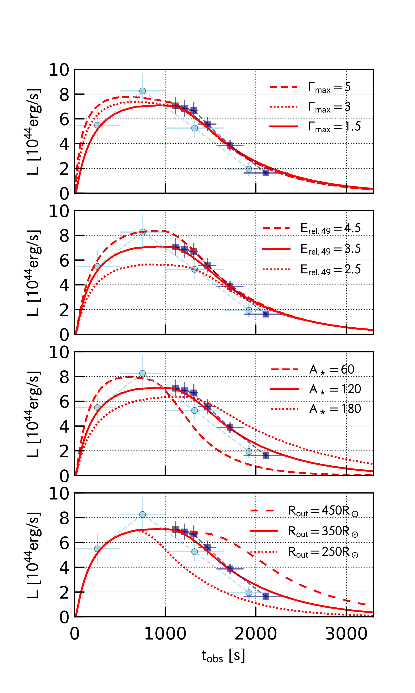
图注：Synthetic bolometric light curves compared with observations of EP260321a. In each panel, the bolometric luminosity inferred from WXT and FXT observations are plotted (circles and squares). The fiducial model is presented by a solid line, while models assuming different values of $\Gamma_\mathrm{max}$, $E_\mathrm{rel}$, $A_\ast$, and $R_\mathrm{out}$ (from top to bottom) are presented for highlighting the parameter dependence.
对应解读：对应“建议检查论文中展示主要数据、模型比较、参数约束、残差或灵敏度预测的图表”以及模型拟合段落中需要核查的观测量与模型曲线。
入选理由：这是论文最核心的观测—模型对比图，直接把EP260321a的WXT/FXT推断 bolometric luminosity 与fiducial SBO模型及不同参数 \(Gamma_max\)、\(E_rel\)、A_*、\(R_out\) 的变化曲线比较，最能支撑论文关于X射线爆发持续时间、光度和风状CSM参数约束的结论。
来源与置信度：\(arxiv_source\)；high；\(arxiv_source\) / ms.tex:figure[2]
Fig03
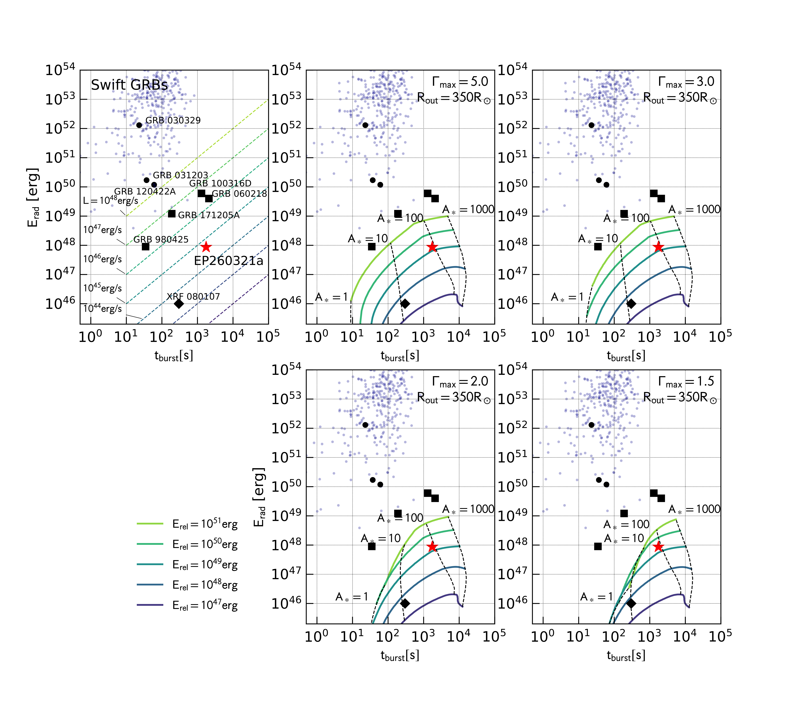
图注：Theoretical model grids in the radiated energy vs burst duration plane. The uppper left panel shows the isotropic equivalent radiated energies and the burst duration for known GRBs and X-ray transients ($E_\mathrm{iso}$ and $T_{90}$ for GRBs), which include classical GRBs from {\(\it\) Swift} observations (dots) GRBs associated with SNe (circcles), llGRBs (squares), and X-ray transients (diamond: XRF080107, star: EP260321a). The panel also includes lines with constant average luminosity $L=E_\mathrm{rad}/t_\mathrm{burst}$ from $10^{42}$ to $10^{48}\,\mathrm{erg}\,\mathrm{s}^{-1}$ (dashed lines). In the remaining panels, the predictions from the SBO model for different energy $E_\mathrm{rel}$ and the CSM density parameter $A_\ast$ are plotted. The models with $\Gamma_\mathrm{max}=5.0$, $3.0$, $2.0$, and $1.5$ while assuming a fixed $R_\mathrm{out}=350\,R_\odot$ are presented as indicated in the panels. In each panel, the models with fixed $E_\mathrm{rel}=10^{47}$, $10^{48}$, $10^{49}$, $10^{50}$, and $10^{51}\,\mathrm{erg}$, and varied $A_\ast$ from $1$ to $10^3$ are plotted as thick lines.
对应解读：对应“参数约束、模型比较、灵敏度预测”的图表建议，尤其是辐射能量—爆发时标平面中的模型网格。
入选理由：该图把EP260321a放在已知GRB、低光度GRB和X射线暂现源的 \(E_rad\) 或 \(E_iso\) 与 \(t_burst/T90\) 参数空间中，并展示SBO模型网格随 \(E_rel\)、A_*、\(Gamma_max\) 的变化，是理解该事件为何可由致密风中激波突破解释、以及其相对其他高能暂现源位置的关键图。
来源与置信度：\(arxiv_source\)；high；\(arxiv_source\) / ms.tex:figure[3]
Fig01
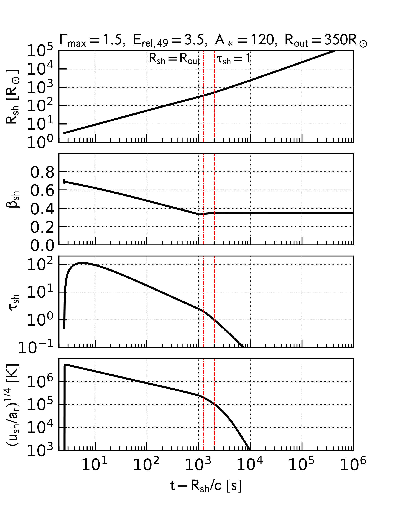
图注：Temporal evolution of the shell properties. The shell radius, the velocity, the optical thickness, and the equilibrium temperature are plotted as a function of the delay time $t-R_\mathrm{sh}/c$ from top to bottom. In each panel, two characteristic epochs, corresponding to the optically thick-to-thin transition and the shock emergence from the CSM outer radius, are indicated by the vertial lines (dashed and dash-dotted).
对应解读：对应详细解读中需要核查物理模型演化、特征时刻和系统参数含义的部分。
入选理由：该图展示薄壳半径、速度、光学厚度和平衡温度随延迟时间的演化，并标出光学厚到薄转变及激波到达CSM外边界两个关键时刻，有助于解释Fig02光变曲线形成的物理过程，但与观测数据的直接对应弱于Fig02和Fig03。
来源与置信度：\(arxiv_source\)；high；\(arxiv_source\) / ms.tex:figure[1]
强相关工作
同一事件层面，应检索 EP260321a、SN 2026gzf、Einstein Probe transient、WXT、FXT 等关键词，寻找发现通报、光学分类、后续光谱和多波段观测论文。当前论文自身 arXiv 页面为 https://arxiv.org/abs/2607.24045 。若需要公共检索入口，可用 NASA ADS 搜索关键词“EP260321a SN 2026gzf shock breakout Einstein Probe”和 arXiv 搜索同名事件；在没有明确编号前，不应编造同一事件的后续论文链接。
同类事件方面，最重要的历史类比包括 GRB 060218/SN 2006aj、XRF 080109/SN 2008D、低光度 GRB 与超新星关联事件，以及其他 X 射线暂现源。它们用于比较 $E_{\rm iso}$、$T_{90}$、光谱温度和是否需要喷流。可用 ADS 检索“GRB 060218 SN 2006aj shock breakout”、“XRF 080109 SN 2008D shock breakout”、“low luminosity GRB shock breakout”。这些是 same-class 或 historical-analogue 文献，不是 EP260321a 的同一事件论文。
基础理论文献应沿两条线检索：一是超新星 shock breakout 理论，包括辐射主导激波、扩散条件、表面突破和风中突破；二是超新星抛射物—CSM 相互作用的薄壳模型与相对论修正。可检索“Nakar Sari shock breakout supernova wind”、“Katz Budnik Waxman shock breakout”、“Chevalier Irwin shock breakout dense wind”、“Suzuki Maeda Shigeyama mildly relativistic ejecta dense wind”。如果论文引用作者先前模型工作，应优先阅读那篇以确认薄壳方程、辐射处理和参数定义。
潜在张力文献包括把类似 X 射线暂现源解释为低光度 GRB、喷流茧 breakout、磁星/中心引擎、或非球对称 CSM 相互作用的工作。检索路径是“low luminosity GRB central engine versus shock breakout”、“cocoon breakout supernova X-ray transient”、“engine-driven supernova X-ray flash”。阅读这些文献时重点比较能量预算、持续时间、光谱温度、准直修正和后续射电约束，而不是只比较峰值光度。
同一事件 / 同类源线索：
（未提供）
相似工作：
（未提供）
基础理论 / 方法工作：
（未提供）
相反观点 / 张力线索：
（未提供）
7. Modeling ultrarelativistic streaming plasma instabilities under the quasistatic approximation
- 来源：arXiv / astro-ph.HE
- 链接：https://arxiv.org/abs/2607.24214v1
- 作者：P. San Miguel Claveria, Q. Labro, X. Davoine, A. Matheron, M. Tamburini, S. Corde, L. Gremillet, F. Fiuza
- 评分：novelty 8/10，importance 7/10，relevance 8/10，final 8.65/10
- 推荐理由：发展准静态近似模拟超相对论流不稳定性，并明确展示可进入blazar喷流的稀薄e±束参数区；对高能喷流等离子体和级联建模有可复用方法价值。
中文题目：准静态近似下的超相对论流束等离子体不稳定性建模
做了什么：这篇论文把准静态近似用于超相对论、低密度带电粒子束驱动的等离子体流束不稳定性，建立了一个线性、全电磁的理论框架，并同常规动理学粒子模拟和准静态粒子模拟比较。核心结论是：当束流前沿不断进入未扰动背景等离子体时，电流丝化不稳定性会出现此前未被清楚描述的时空演化，并且在束流前沿附近压过斜向双流不稳定性。该方法能把模拟推进到极稀薄电子—正电子束的参数区间，对耀变体喷流、伽马射线诱发对束、相对论激波前驱区等问题有直接方法学价值。
为什么重要：相对论束流不稳定性决定能量如何从非热粒子转移到背景等离子体、如何产生小尺度磁场以及如何影响高能辐射源的反馈。问题难点在于超相对论稀薄束流的增长时间、传播长度和背景等离子体响应尺度相差极大，常规全动理学模拟很容易被计算成本卡住。本文的重要性不在于又做了一组参数扫描，而在于给出了一个能覆盖完整不稳定谱、同时显著降低计算代价的理论和数值框架。
理论 / 观测 / 仪器方法价值：对理论而言，论文把准静态近似从传统等离子体尾场加速场景扩展到流束不稳定性的线性谱和非线性演化，强调必须把束流前沿的时空边界条件纳入增长率判断。对数值方法而言，它展示了准静态粒子模拟可以在常规粒子模拟难以触及的极低束流密度比和超大洛伦兹因子下保持物理一致性。对天体物理应用而言，它为检验耀变体电子—正电子束是否通过等离子体不稳定性有效耗散提供了更可信的计算工具。
为什么应该关注：如果你关心相对论喷流、伽马射线暴外激波、宇宙空洞中的电磁级联、实验室束流—等离子体相互作用或数值等离子体方法，这篇文章都值得看。它提醒读者：仅靠局域、时间增长率式的线性不稳定性判断，可能会误判真实束流前沿附近哪种模式先进入非线性。对于天文高能等离子体，哪种不稳定性主导会影响磁场生成、粒子散射、能量沉积长度以及由此推断出的辐射和反馈效率。
展开详细解读：文章讲解、背景、理论、重点章节、图表与相关工作
文章详细讲解
科学问题：相对论带电粒子束穿过背景等离子体时，会激发双流、斜向双流和电流丝化等一族流束不稳定性。这些不稳定性在伽马射线暴前驱区、活动星系核喷流、耀变体电磁级联束以及激光等离子体实验中都很关键。难点是，天体物理上感兴趣的束流往往同时满足高洛伦兹因子、低密度比和长传播距离，导致最不稳定波长、增长长度、束流演化尺度和背景等离子体时间尺度严重分离。常规粒子模拟需要同时解析背景等离子体振荡和束流长距离传播，因此很难进入耀变体电子—正电子束这类极端参数区。
作者怎么做：论文利用准静态近似，把问题从完整的三维时变电磁演化改写为沿束流共动坐标推进的形式。其物理前提是超相对论束流的包络相对背景等离子体响应变化缓慢，而背景等离子体在束流前沿之后对局域束流形状快速建立响应。作者在这一框架内推导线性全电磁扰动方程，要求能够同时捕捉电磁型的电流丝化模式和具有电静成分的斜向双流模式，而不是只保留某个极限。随后他们把理论增长和模式结构同常规动理学粒子模拟以及基于准静态近似的粒子模拟对照。
关键结果：最突出的结果是，电流丝化不稳定性在束流前沿附近表现出一种非平凡的时空增长行为。传统上人们常比较均匀无限束流中的本征增长率，并由此判断斜向双流模式或丝化模式哪个更快；本文指出，对于一个不断用未扰动等离子体作为前沿边界条件的长束流，模式竞争不能只看局域时间增长率。丝化模式虽然在某些均匀参数下不一定有最大局域增长率，却可以在前沿附近因其空间—时间演化特征而占据主导。理论、常规粒子模拟和准静态粒子模拟之间的一致性，是本文说服力的核心。
局限和下一步：论文主要建立在线性理论与特定数值设置之上，非线性阶段虽通过准静态粒子模拟向极稀薄电子—正电子束推进，但仍需要更系统地考察真实天体环境中的温度、角展宽、背景磁场、束流能谱、非均匀介质和辐射冷却。准静态近似本身也有适用条件：束流必须足够相对论性，包络演化必须慢于背景响应，并且不能出现强烈违反共动推进假设的反向传播或剧烈时间结构。下一步重要方向是把这个框架嵌入到耀变体级联束传播、相对论激波前驱区和实验室可诊断束流平台中，量化能量沉积率和磁场生成效率。
关键结果是怎么做出来的
本文的证据链从参数区间选择开始。作者关注的是稀薄、超相对论束流进入冷或近冷背景等离子体时的不稳定性谱，尤其是传统常规粒子模拟难以同时解析的低束流密度比和长传播尺度。样本不是天文巡天样本，而是一系列数值实验和线性理论工况：通过改变束流密度比、洛伦兹因子、传播距离以及扰动波矢方向，比较不同模式的增长和空间分布。这里的“事件数”对应的是模拟粒子数、网格分辨率、运行盒尺度和参数扫描点，而判断稳健性主要看不同数值方法和理论预测之间是否收敛。
最重要的模型比较是三方比较：线性准静态理论、完整动理学粒子模拟、准静态粒子模拟。完整粒子模拟在可承受参数区间内充当基准，因为它不预设准静态演化；准静态粒子模拟则用来验证在同一参数下是否重现实空间场结构、增长率和模式转换。若三者在可重叠区间吻合，作者再把准静态方法推向更稀薄、更高洛伦兹因子的电子—正电子束。论文的显著性不是用天文观测中的 \(p\) 值表达，而是用增长率、场能增长曲线、谱峰位置和模式形态的一致性表达。
支撑核心结论的图表应包括不稳定谱的色图或等值线、不同传播位置处的场分量图、场能随时间或共动坐标的增长曲线，以及常规粒子模拟和准静态模拟的并排比较。读者尤其要看束流前沿附近横向磁场或电流密度的空间图样是否先形成丝状结构；还要看斜向双流模式的波矢特征是否在更深的束流内部或不同参数下才占优。若图中只展示某个场分量，很容易低估混合模式，因此应同时检查电场、磁场、电荷密度和电流密度诊断。
系统误差和稳健性检验主要来自数值等离子体模拟本身：有限盒长可能截断长波模式，有限横向盒宽会离散化横向波数，粒子噪声可能为某些模式提供不同初始种子，网格色散会影响高速束流相位，边界条件可能改变前沿扰动的再循环。本文通过同完整粒子模拟比较、改变参数并检验准静态模拟在重叠区间的结果，来削弱这些担忧。读者应特别关注作者是否说明了时间步长、网格分辨率、每胞粒子数和边界处理对增长率的影响。
对极稀薄电子—正电子束的延伸是本文最接近天体物理应用的结果。常规粒子模拟在这一区间通常需要极长时间才能看到足够倍数的指数增长，而准静态方法把计算焦点放在束流前沿之后的等离子体响应，因而能追踪更长传播距离。这里的关键不是单个漂亮的非线性图样，而是证明随着密度比降低，仍能解析丝化、斜向双流及其耦合导致的非线性能量转移。若结果稳健，它会改变人们估算耀变体级联束能量沉积长度时采用的有效增长率。
展开背景、理论、公式、模型、章节和图表导读
背景知识
研究对象是相对论流束不稳定性：一群高速带电粒子穿过背景等离子体时，微小的密度、电流或电磁场扰动会从束流动能中抽取能量并指数增长。经典不稳定性包括静电双流不稳定性、斜向双流不稳定性和电磁电流丝化不稳定性。它们不是孤立分类，而是在不同波矢方向、束流温度、密度比和洛伦兹因子下同一个介电响应问题的不同极限。
历史上，电流丝化或 Weibel 型不稳定性被视为无碰撞激波中小尺度磁场生成的核心机制；双流和斜向模式则常用于讨论稀薄束流在背景等离子体中的能量沉积。对天文学特别重要的是，活动星系核和耀变体产生的高能伽马射线在宇宙背景光上成对产生电子—正电子束，这些束流可能通过等离子体不稳定性把能量传给星系际介质，从而改变次级伽马射线信号和星系际加热历史。
这个问题现在值得重新看，是因为理论参数区和可模拟参数区长期不重合。天体束流可能极稀薄，密度比远低于实验室束流或传统模拟可及范围，同时洛伦兹因子很高，导致增长率很小但传播距离很长。若直接用局域均匀束流色散关系外推，容易忽略束流前沿不断进入未扰动等离子体这一事实；若直接做全粒子模拟，又可能因为计算成本被迫使用过高束流密度或过低洛伦兹因子。
常见误区之一是把最大线性增长率等同于真实系统最先进入非线性的模式。对有限长度或有前沿的束流，扰动既在时间上增长，也沿传播方向积累；模式的空间增益、边界种子、群速度和与前沿的相对位置都会改变竞争结果。另一个误区是把电子—离子束流结论直接套到电子—正电子束流。电子—正电子束没有净电荷和某些离子惯性效应，电流中和、磁场生成和非线性饱和路径都可能不同。
还有一个容易忽略的问题是术语中的“准静态”并不意味着系统静止或忽略电磁传播，而是利用超相对论束流的慢包络与背景等离子体快速响应之间的尺度分离。它在等离子体尾场加速中很常见，但用于流束不稳定性的完整谱分析并不平凡，因为不稳定性本身会改变束流和场的形态。本文的贡献正是在这个交界处建立可检验的线性和数值框架。
基础理论 / 方法脉络
基本物理图像可以从动能各向异性开始。一个高速束流相对背景等离子体具有强烈的动量空间各向异性，背景电子会试图屏蔽束流电荷和电流。若扰动让某些横向区域电流稍强，产生的磁场会进一步聚焦同向运动粒子、排斥反向补偿电流，从而放大电流通道，这就是丝化不稳定性的直观机制。若扰动主要沿束流方向调制密度和纵向电场，则会从束流—背景相对漂移中抽取能量，形成双流或斜向双流模式。
在线性理论中，通常把每个组分视作冷流体或动理学分布，求解电磁扰动的色散关系。关键量包括背景等离子体频率 \(\omega_p\)、束流等离子体频率 \(\omega_b\)、束流洛伦兹因子 \(\gamma_b\)、束流密度比 \(n_b/n_0\)、波矢 \(\mathbf{k}\) 与束流方向的夹角，以及增长率 \(\Gamma\)。对稀薄超相对论束流，模式增长率往往随 \(n_b/n_0\) 的某个分数幂下降，并随 \(\gamma_b\) 受抑制，因此直接模拟需要很长演化时间。
本文特定的理论假设是采用准静态坐标，把束流方向设为 \(z\)，引入类似 \(\xi=z-ct\) 的共动变量和慢演化变量。束流前沿处背景等离子体尚未被扰动，前沿之后的场和等离子体响应由束流局部结构决定。这样做适合连续进入新鲜等离子体的超相对论束流，可以把沿束流前沿的空间发展与实验室时间演化分开处理。重要的是，作者没有只做纯静电近似，而是保留全电磁响应，以便同时描述斜向和丝化模式。
观测或数值诊断上，读者应关注场能、傅里叶谱、密度扰动和电流通道形态。丝化模式通常在横向波数上有强信号，并表现为磁场能量和横向电流结构增长；斜向双流模式则在有纵向和横向分量的波矢上出现，电场能量和密度调制更显著。实际模拟中二者会混合，特别是在相对论束流有限温度、角散和数值噪声存在时，单靠一条增长率曲线很难区分。
主要退化和系统误差来自尺度分离、温度效应和边界条件。束流横向温度会削弱丝化，纵向动量展宽会削弱共振型双流增长；有限横向盒宽会人为选择横向波数；有限前沿形状会改变扰动种子；准静态近似若用于不够相对论或包络快速变化的束流，则可能漏掉重要的时间传播效应。因此本文的方法价值也取决于作者能否清楚展示适用边界。
公式与推导
第一步从等离子体的本征频率开始。对背景电子数密度 \(n_0\)，电子质量 \(m_e\)，电荷量 \(e\)，真空介电常数 \(\epsilon_0\)，背景等离子体频率为
它给出背景电子响应电荷分离的基本时间尺度。对束流密度 \(n_b\)，可定义非相对论形式的束流频率 \(\omega_b=(n_b e^2/\epsilon_0 m_e)^{1/2}\)，但相对论惯性会通过 \(\gamma_b\) 修正不同方向的响应。
第二步写出冷流体线性化的连续性和动量方程。对组分 \(s\) 的平衡密度 \(n_{s0}\)、漂移速度 \(\mathbf{v}_{s0}\)、扰动 \(\delta n_s\) 与 \(\delta\mathbf{v}_s\)，有
其中 \(\delta\mathbf{p}_s\) 是相对论动量扰动，\(q_s\) 是电荷。冷流体假设忽略热压和速度展宽，适合建立最低阶增长率图像。
第三步把扰动取为平面波形式，
其中复频率 \(\omega=\omega_r+i\Gamma\)，增长率为 \(\Gamma>0\)。代入麦克斯韦方程和流体响应，可得到介电张量形式的色散方程
这里 \(\epsilon_{ij}\) 包含背景和束流的电磁响应；改变 \(\mathbf{k}\) 与束流方向的夹角即可连续连接双流、斜向和丝化极限。
第四步看典型极限。对冷、稀薄、超相对论束流，斜向双流模式的增长率可用标度表示为
而电流丝化模式的标度常写作
具体系数和 \(\gamma_b\) 幂次依赖于束流组成、温度、补偿电流和波矢方向。这两个式子不是本文结论的替代品，而是说明为什么传统均匀色散分析会把模式竞争简化为增长率比较。
第五步引入准静态坐标。令束流沿 \(z\) 方向近光速传播，定义
则导数变换为
准静态近似的核心是慢演化条件 \(|\partial/\partial \tau|\ll c|\partial/\partial \xi|\)，但保留沿 \(\tau\) 的不稳定增长。这使得束流前沿之后的等离子体响应可沿 \(\xi\) 求解，同时追踪慢时间上的模式放大。
第六步把前沿边界条件写成物理约束。若束流前沿位于 \(\xi=0\)，未扰动背景可表示为
理想化地说明新鲜等离子体在进入束流之前没有预置扰动。真实模拟中还会有粒子噪声或外加种子，但这一边界条件解释了为什么空间增益和前沿附近的模式选择会不同于无限均匀束流。
第七步用场能诊断模拟增长。电磁扰动能量密度为
若某一线性模式主导，则在合适时间窗内满足
因为场振幅按 \(\exp(\Gamma\tau)\) 增长。论文中理论—模拟比较的基本检验就是由场能斜率、傅里叶谱峰和实空间结构共同确认 \(\Gamma\) 与模式类型。
第八步给出模型比较的残差诊断。若理论预测某诊断量 \(D_{\rm th}(\theta)\)，模拟测量为 \(D_i\)，误差估计为 \(\sigma_i\)，可构造
这里 \(\theta_i\) 可代表 \(n_b/n_0\)、\(\gamma_b\)、波数或传播位置。即使论文未把结果写成正式的 \(\chi^2\) 拟合，这个式子也说明读者应如何量化理论、常规粒子模拟和准静态粒子模拟之间的一致性。
模型拟合 / 应用方法
这类工作的“拟合”首先体现在增长率估计。作者通常从场能或特定傅里叶模幅随时间的指数增长段提取 \(\Gamma\)，需要选择线性阶段的时间窗：太早会被初始噪声和瞬态影响，太晚会进入非线性饱和。对本文而言，关键拟合量包括电磁场能增长率、主导波矢、模式在束流前沿后的空间分布以及不同场分量之间的相位关系。
似然或统计量不一定以天文观测论文中的贝叶斯后验形式出现，但仍有明确的模型比较逻辑。一个模型是完整动理学粒子模拟，另一个是准静态线性理论和准静态粒子模拟；若三者在同一参数区间给出相近的增长率、谱峰和实空间结构，就说明准静态近似没有抹掉核心物理。读者可以把不同诊断量的差异看成残差：例如理论预测横向波数峰值偏离模拟峰值，可能意味着温度、有限盒宽或非线性耦合已不可忽略。
主要退化关系来自模式混合。斜向双流和电流丝化不是总能用单一场分量分开，因为斜向模式也有电磁成分，丝化模式在有限几何和非线性阶段也可能产生电荷分离。束流温度与洛伦兹因子也会退化：较高角散可削弱横向聚束，看起来类似较低密度比导致的慢增长。初始噪声幅度与增长时间同样退化，因为进入非线性所需时间不仅取决于 \(\Gamma\)，还取决于种子幅度。
系统误差方面，常规粒子模拟有网格加热、数值 Cherenkov 辐射、有限粒子噪声和边界反射等问题；准静态模拟则额外依赖慢演化假设和前沿处理。若模拟盒横向尺寸太小，允许的横向波数离散，可能人为增强或压制丝化。若纵向分辨率不足，斜向双流的相位结构会被抹平。本文的稳健性应通过分辨率测试、盒尺寸测试、不同噪声种子和同常规粒子模拟的重叠区验证来判断。
实际应用中，模型拟合的目标不是只报一个增长率，而是把参数区映射到能量沉积和非线性饱和路径。例如耀变体电子—正电子束问题需要知道在给定 \(n_b/n_0\) 与 \(\gamma_b\) 下，不稳定性是否能在逆康普顿冷却前显著增长；无碰撞激波问题则关心丝化能否产生足够磁场散射粒子。准静态方法若可靠，就能成为这些大尺度模型的子网格物理输入。
重点章节 / 结果段落怎么读
数据/数值设置部分应先读。这里需要确认束流组成是电子束、电子—正电子束还是带补偿背景的相对论束流，背景等离子体是否冷，束流密度比和洛伦兹因子覆盖了哪些范围，以及常规粒子模拟与准静态粒子模拟在哪些参数上重叠。没有这些信息，后面关于天体适用性的判断会失去基础。
理论方法部分是本文的核心。读者应重点看作者如何从准静态近似推导线性全电磁方程，如何处理束流前沿边界条件，以及如何保证斜向双流和丝化两类模式都包含在同一框架中。特别要注意他们是否只是在均匀色散关系上换变量，还是确实处理了前沿驱动的时空演化。
线性结果部分应按模式竞争来读。重点不是哪条曲线最高，而是不同位置、不同时间和不同波矢方向上模式如何演变。读者应寻找作者关于“束流前沿附近丝化占优”的直接证据：例如空间增长图、场结构图和与斜向模式的对比。
模拟验证部分要看常规粒子模拟和准静态粒子模拟的并排比较。最有价值的是同一参数下的增长率、谱结构和实空间图样是否一致。如果只比较总场能而不比较谱和形态，说服力会弱；如果只展示一个参数点，也难以证明方法稳健。
天体物理参数延伸和讨论部分应最后读。作者把准静态粒子模拟推进到极稀薄电子—正电子束，这部分最能体现方法增益，但也最依赖外推。读者应检查他们如何讨论温度、角展宽、冷却、背景磁场和宇宙学传播环境这些真实耀变体束流因素。
建议重点查看的图表
-
不稳定谱或增长率色图：看横轴和纵轴是否为波矢方向、波数、密度比或洛伦兹因子；重点比较斜向模式和丝化模式的增长区域，而不是只看最大值。
-
束流前沿附近的实空间场图：看横向磁场、电流密度和电荷密度在 \(\xi\) 方向上的位置关系；核心问题是丝状结构是否首先在前沿附近出现。
-
场能随时间或传播坐标的增长曲线：检查是否存在清楚的指数增长段，斜率是否与线性理论一致，非线性饱和点在哪里。
-
傅里叶谱诊断图：看主导波矢是横向、纵向还是斜向；应确认谱峰随时间是否从一种模式迁移到另一种模式。
-
常规粒子模拟与准静态粒子模拟对比图：看同一参数下两种方法是否给出相同场结构和增长率；若只在总能量上吻合，需要谨慎。
-
极稀薄电子—正电子束的非线性演化图：关注能量从束流到背景和电磁场的转移效率，以及最终是否形成强磁丝、空泡或湍动结构。
-
分辨率或稳健性表：看网格尺寸、每胞粒子数、盒长、时间步长和边界条件变化对增长率的影响。
关键图表逐图导读
图 1：通常应是理论框架或参数空间图。若横轴为束流密度比 \(n_b/n_0\)，纵轴为洛伦兹因子 \(\gamma_b\) 或归一化波数，读者要看本文模拟点位于传统常规粒子模拟可及区还是向耀变体区外推。图中的模型线若标出斜向双流和丝化的主导区域，要注意这是均匀谱判断还是包含前沿时空演化后的判断。
图 2：可能展示线性不稳定谱。坐标轴通常是 \(k_z c/\omega_p\) 与 \(k_\perp c/\omega_p\)，颜色表示增长率 \(\Gamma/\omega_p\)。斜向双流模式会出现在 \(k_z\) 和 \(k_\perp\) 都非零的区域，丝化模式更接近横向波矢主导区域。读图陷阱是只找颜色最亮的点；本文真正强调的是束流前沿边界下哪个模式在实际时空演化中先占主导。
图 3：应关注实空间场结构，例如磁场分量、横向电流或束流密度扰动随 \(x\) 与 \(\xi\) 的分布。若前沿在图的一侧，读者要看丝状电流是否贴近前沿开始增长，以及斜向密度波是否在更靠后的区域增强。颜色条的归一化很重要，不同面板若使用不同范围，视觉上容易夸大或缩小模式差异。
图 4：若是常规粒子模拟与准静态粒子模拟并排图，重点看形态一致性而非只看峰值。相同的丝状间距、相似的谱峰位置和相近的增长曲线，才说明准静态方法捕捉了真实不稳定性。若两者在晚期非线性阶段开始分离，应判断这是否源自准静态假设失效，还是粒子噪声和有限盒效应。
图 5：场能增长曲线通常横轴为时间或传播距离，纵轴为归一化电场能、磁场能或总扰动能的对数。线性阶段应近似为直线，斜率给出 \(2\Gamma\)。读者要检查拟合区间是否避开初始瞬态和饱和阶段；如果不同场分量的增长率不同，说明模式混合或转换正在发生。
图 6：极稀薄电子—正电子束模拟若展示非线性结构，应把它当作方法能力的证明而非最终天体结论。坐标轴可能覆盖很长的共动距离，颜色表示束流密度、电流或磁场。应关注能量沉积是否局域、磁场是否持久、以及结构尺度是否随 \(n_b/n_0\) 和 \(\gamma_b\) 呈合理标度。
论文原图 / 可嵌入图片
Fig02
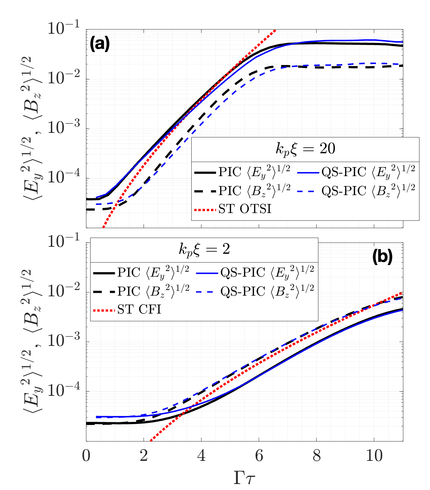
图注：Transverse electric ($\langle E_y^2\rangle^{1/2}$, solid lines) and magnetic ($\langle B_z^2\rangle^{1/2}$, dashed lines) field amplitudes as a function of the normalized propagation time ($\Gamma \tau$), at two locations from the beam front: (a) $k_p\xi = 20$ and (b) $k_p\xi = 2$. Black lines correspond to the PIC simulation presented in Fig.~\(\ref{fig:1},\) while blue lines represent an equivalent QS-PIC simulation. The scalings of spatiotemporal (ST) OTSI [Eq.~\(\eqref{eq:beam_rear}\)] and CFI [Eq.~\(\eqref{eq:beam_front}\)] are plotted as red solid and dashed lines in (a) and (b), respectively.
对应解读：对应“建议重点查看的图表”第3、5项，以及“关键图表逐图导读”中关于场能增长曲线、常规PIC与QS-PIC对比、OTSI/CFI增长标度的解读。
入选理由：这张图直接给出横向电场与磁场幅度随归一化传播时间的增长曲线，并在束流前沿附近与更靠后的两个位置分别比较PIC、QS-PIC和线性理论标度。它最能支撑日报中关于指数增长段、增长率拟合、斜向双流与电流丝化在不同位置主导性的讨论，也能检验准静态方法是否再现实粒子模拟的增长率。
来源与置信度：\(arxiv_source\)；high；\(arxiv_source\) / \(main_v3.tex\):figure[2]
Fig01
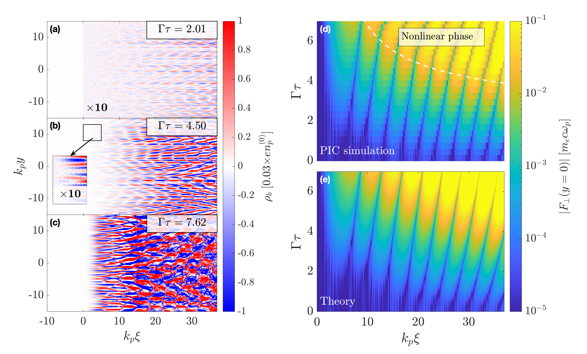
图注：2D PIC pair beam-plasma simulation with $\alpha_b = 0.03$ and $\gamma_b = 2\times 10^4$ for both beam electrons and positrons. (a–c) Snapshots of the beam charge density $\rho_b(\xi,y)$ at three successive times. In (b), the inset zooms in on the beam-front region delineated by the small box. (d, e) $\xi$--$\tau$ evolution of $\vert F_\perp(y=0) \vert$ as (d) extracted from the PIC simulation or (e) computed from Eq.~\(\eqref{eq:mastereq_ST_CFI}\) (see text for details). In (d), the dashed line marks the transition to the nonlinear instability regime.
对应解读：对应“建议重点查看的图表”第2、4、5项，以及“关键图表逐图导读”中关于束流前沿附近实空间结构和时空演化的图3/图4式解读。
入选理由：图中既有束流电荷密度在共动坐标与横向坐标中的快照，又有从PIC提取和由理论方程计算的\(\xi\)--\(\tau\)演化对比，直接展示前沿附近扰动如何出现并进入非线性阶段。它是理解本文核心结论——电流丝化在束流前沿附近具有非平凡时空增长并可优先占主导——的关键图。
来源与置信度：\(arxiv_source\)；high；\(arxiv_source\) / \(main_v3.tex\):figure[1]
Fig03
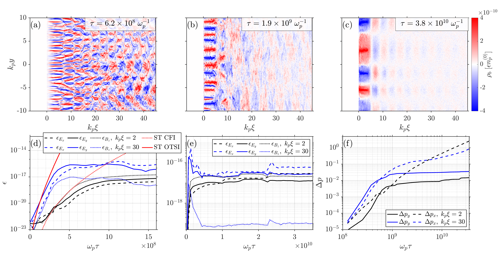
图注：2D QS-PIC pair beam-plasma simulation with parameters relevant for blazar jets ($\alpha_b=10^{-10}$ and $\gamma_b=10^6$ for both beam electrons and positrons). (a-c) Beam charge density profile (normalized to $en_p^{(0)}$) at three successive times. (d) Early-time evolution of the $E_x$ (solid), $E_y$ (dashed) and $B_z$ (dotted) field energies ($\epsilon$, normalized to the initial beam kinetic energy) at two positions along the beam: $k_p\xi = 2$ (black) and $k_p\xi = 30$ (red). (e) Same as (d) but for the full simulation duration. (f) Evolution of the root-mean-square momentum spread of beam particles along the longitudinal (dashed) and transverse (solid) directions at the same positions as in (d-e).
对应解读：对应“建议重点查看的图表”第6项，以及“关键图表逐图导读”中关于极稀薄电子—正电子束非线性演化和耀变体参数区模拟能力的解读。
入选理由：该图使用\(\alpha_b=10^{-10}\)、\(\gamma_b=10^6\)的耀变体相关参数，展示束流密度结构、不同场分量能量随时间和位置的演化，以及束流动量展宽。它最能说明QS-PIC在常规PIC难以到达的极稀薄相对论电子—正电子束参数区中追踪非线性能量转移和粒子散射的能力。
来源与置信度：\(arxiv_source\)；high；\(arxiv_source\) / \(main_v3.tex\):figure[3]
强相关工作
这篇工作处在几个传统方向的交汇处。第一是 Weibel 或电流丝化不稳定性及其在无碰撞激波中的作用，相关检索关键词包括 “Weibel instability collisionless shocks relativistic beams”、“current filamentation instability pair beams”。第二是稀薄相对论束流的斜向双流不稳定性，尤其是用于讨论耀变体诱发电子—正电子束在星系际介质中能量沉积的文献，关键词包括 “oblique instability blazar pair beams”、“plasma instability intergalactic cascade beams”。
与已有工作可能存在的张力在于：一些均匀线性色散分析强调斜向双流模式在稀薄超相对论束流中增长最快，另一些数值或包含温度角散的研究认为不稳定性可能被束流展宽、非线性 Landau 阻尼或逆康普顿冷却削弱。本文并非简单否定这些结果，而是指出有限前沿和准静态时空演化会改变模式竞争，尤其使丝化在前沿附近更重要。检索时还应使用 “quasistatic approximation particle-in-cell plasma wakefield”、“QSA PIC relativistic beam instability” 来追踪方法学背景。
对于同类源和天体应用，本文不是针对某个命名耀变体或单个瞬变事件，而是面向耀变体喷流和宇宙级联电子—正电子束这一类源。因此 source context 更适合查综述、目录和原型问题，而不是同一事件论文。若读者要把本文接到观测约束，应检索 Fermi-LAT 对 TeV blazar 级联辐射、星系际磁场下限、以及耀变体加热星系际介质的相关文献。
同一事件 / 同类源线索：
相似工作：
- https://ui.adsabs.harvard.edu/abs/2010PhPl...17l05501B/abstract
- https://ui.adsabs.harvard.edu/abs/2012ApJ...752...22B/abstract
- https://ui.adsabs.harvard.edu/abs/1999ApJ...526..697M/abstract
基础理论 / 方法工作：
- https://ui.adsabs.harvard.edu/abs/1959PhRvL...2...83W/abstract
- https://ui.adsabs.harvard.edu/abs/1997PhRvL..79.2682M/abstract
相反观点 / 张力线索：
说明
评分由 LLM 给出初评，再由本地阈值策略过滤；IACT、TeV 伽马射线和高能中微子天文学按重点方向处理。